Este libro te lleva desde las primeras palabras hasta un dominio seguro del catalán. Tiene 50 unidades (unitats) repartidas en los seis niveles del Marco Común Europeo de Referencia. Son los mismos niveles que certifica la Generalitat de Catalunya: desde 2026 hay también un examen oficial de A1.
| Nivel | Certificado oficial | Unidades | Al final del nivel podrás… |
|---|---|---|---|
| A1 · Primers passos | Nivell inicial | 1–8 | saludar, presentarte, hablar de tu familia y de tu barrio, comprar en el mercado y hacer planes |
| A2 · La vida de cada dia | Nivell bàsic | 9–17 | contar qué hiciste ayer y cómo era tu infancia, comprar ropa, ir al médico, viajar por Cataluña y celebrar Sant Jordi |
| B1 · Ens entenem | Nivell elemental | 18–28 | narrar, opinar, aconsejar, buscar piso, seguir las noticias y escribir cartas formales e informales |
| B2 · Amb seguretat | Nivell intermedi | 29–38 | expresar hipótesis, contar lo que dicen otros, argumentar y leer a los clásicos |
| C1 · Precisió i estil | Nivell de suficiència | 39–45 | escribir textos cohesionados, dominar los relativos y la fraseología, sintetizar y exponer en público |
| C2 · Mestratge | Nivell superior | 46–50 | manejar el registro muy formal, el lenguaje jurídico, la variación dialectal y la ironía |
Los exámenes oficiales los convoca el Departament de Política Lingüística una vez al año (el A1, dos). Los cursos del Consorci per a la Normalització Lingüística dan certificados equivalentes. Fuera del territorio de habla catalana (Madrid, por ejemplo) certifica el Institut Ramon Llull, de A2 a C2. Fechas y tasas cambian cada año: consúltalas siempre en la web oficial.
El resto del libro está escrito en catalán. El español solo aparece en las listas de vocabulario y en los recuadros Atenció! de A1 y A2, donde se explican los errores típicos de los hispanohablantes. El catalán y el español se parecen tanto que leerás catalán mucho antes de lo que crees. Esa misma cercanía es su principal trampa: es fácil pensar en castellano y escribir catalán solo en la superficie. Por eso cada unidad insiste en lo que no se parece.
Al final, el Apèndix reúne la conjugación, los pronombres débiles, los falsos amigos y los castellanismos más frecuentes.
La gramática oficial del Institut d'Estudis Catalans (2016) no habla de «correcto» e «incorrecto», sino de registros. En este libro verás tres etiquetas:
| Etiqueta | Significado | Ejemplo |
|---|---|---|
| estàndard | sirve en cualquier situación | Els ho dono. |
| informal | aceptable al hablar, no en un texto formal | Els hi dono. |
| evitar | castellanismo o forma ajena a la norma | ✗ Tinc que anar-hi → ✓ He d'anar-hi. |
Marta Ruiz (26) es de Málaga. Ha estudiado Historia del Arte y empieza a trabajar en Edicions del Fanal, una pequeña editorial del barrio de Gràcia, en Barcelona. Comparte piso en la calle Verdi con Jordi Puig (28), barcelonés, informático y casteller, y con Núria Soler (30), periodista de radio nacida en Lleida. Su jefa es la senyora Montserrat Vilaró, editora de toda la vida, y su compañero de mesa es Pau Ferrer, diseñador gráfico de Vic. En la esquina está el horno del senyor Esteve, que conoce a todo el barrio y no cambia nunca al castellano. A partir de B1 aparece Álvaro Gil (30), un amigo zaragozano de Marta que hace la residencia de medicina en Girona. Y en Málaga, Marta llama a menudo a su abuela, la abuela Rosario.
El catalán es la lengua propia de Cataluña, las Islas Baleares, la Comunidad Valenciana (donde recibe el nombre de valencià), Andorra (donde es la única lengua oficial), la Franja de Aragón, la Cataluña Norte en Francia y la ciudad de L'Alguer, en Cerdeña. Lo entienden más de diez millones de personas.
Este libro enseña el catalán central estándar, el de Barcelona y de la radio y la televisión públicas, según la normativa del Institut d'Estudis Catalans (IEC): la Gramàtica de la llengua catalana (2016) y la Ortografia catalana (2017). El valenciano tiene su propio libro y su propio curso en esta serie. En la unidad 35 conocerás las grandes variedades del catalán, y en la 49, el catalán coloquial.
La reforma de 2016. Si has visto textos antiguos, encontrarás dóna, sóc o adéu. Hoy se escriben dona, soc y adeu. De los acentos diacríticos (los que distinguen dos palabras iguales) solo quedan quince:
| Con acento | Sin acento |
|---|---|
| bé (bien, bien material) | be (cordero; letra b) |
| déu (dios) | deu (diez; debe) |
| és (es) | es (se) |
| mà (mano) | ma (mi, posesivo antiguo) |
| més (más) | mes (mes) |
| món (mundo) | mon (mi, posesivo antiguo) |
| pèl (pelo) | pel (por el) |
| què (qué) | que (que) |
| sé (sé, de saber) | se (se) |
| sí (sí) | si (si condicional) |
| sòl (suelo) | sol (sol; solo) |
| són (son) | son (sueño) |
| té (tiene; ¡toma!) | te (te; té, la bebida) |
| ús (uso) | us (os, pronombre) |
| vós (vos, cortesía) | vos (os, pronombre) |
El catalán se escribe con el alfabeto latino, igual que el español, con algunas letras y combinaciones propias. Lo difícil no son las letras, sino los sonidos que el español no tiene.
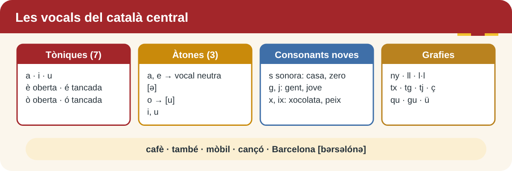
En sílaba tónica el catalán central tiene siete vocales: además de a, i, u, distingue una e y una o cerradas (como las del español) y una è y una ò abiertas (con la boca más abierta, como en el francés mère o el inglés dog).
| Sonido | Escritura | Ejemplo | Para hispanohablantes |
|---|---|---|---|
| [a] | a | casa | como en español |
| [ɛ] e abierta | è, e | cafè, terra | más abierta que la e española |
| [e] e cerrada | é, e | més, veure | como la e española |
| [i] | i | fill | como en español |
| [ɔ] o abierta | ò, o | mòbil, dona | más abierta que la o española |
| [o] o cerrada | ó, o | cançó, poma | como la o española |
| [u] | u | ura | como en español |
En sílaba átona solo hay tres vocales:
La vocal neutra es lo que más delata a un hispanohablante. Escucha mucho y exagera al principio.
| Escritura | Sonido | Ejemplo | Nota |
|---|---|---|---|
| b, v | [b] | vull, bé | en catalán central suenan igual; ¡la ortografía no coincide con la española! (govern, advocat) |
| c (+ e, i), ç | [s] | cinc, plaça | nunca como la z española |
| s (inicial, tras consonante), ss | [s] | sopa, passar | s sorda |
| s (entre vocales), z | [z] | casa, zero | s sonora, como un zumbido: no existe en español |
| g, j (+ e, i), j | [ʒ] | gent, jove | como la j francesa |
| tg, tj | [dʒ] | metge, platja | como la j inglesa de jeans |
| x, ix | [ʃ] | xocolata, caixa | como el sh inglés |
| tx | [tʃ] | cotxe | como la ch española |
| ny | [ɲ] | any, Catalunya | como la ñ |
| ll | [ʎ] | llet, cavall | lateral; no la pronuncies como y |
| l·l | [l] | col·legi | se pronuncia como una l (algo más larga) |
| l | [ɫ] | sol, mal | l «oscura», sobre todo al final |
| r inicial, rr | [r] | rosa, terra | vibrante múltiple |
| h | — | home | muda, como en español |
| -r final | — | cantar, carrer | en central no se pronuncia en los infinitivos y en muchas palabras (fuster, primer) |
| -nt, -lt finales | [n], [l] | cant, molt | la t final casi no se oye |
El alfabeto. Las letras se llaman: a, be, ce, de, e, efa, ge, hac, i, jota, ca, ela, ema, ena, o, pe, cu, erra, essa, te, u, ve, ve doble, ics, i grega, zeta. Al deletrear se dice a menudo be alta (b) y ve baixa (v) para distinguirlas.
Al final d'aquest nivell sabràs saludar i presentar-te, parlar de la teva família i del teu barri, explicar què fas cada dia, comprar al mercat, dir què t'agrada i fer plans per al cap de setmana.
Objectius: saludo, em presento, pregunto com està algú. Gramàtica: el verb ser, dir-se, l'article personal (en Jordi, la Marta), tu i vostè.
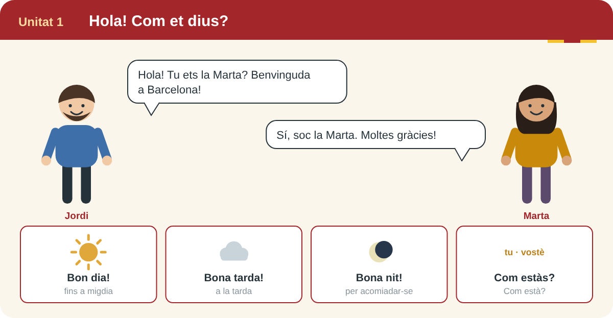
Al carrer Verdi, al barri de Gràcia. La Marta truca a la porta del pis.
Jordi: Hola! Tu ets la Marta?
Marta: Sí, soc la Marta. Hola! I tu ets en Jordi?
Jordi: Sí, soc en Jordi. Benvinguda a Barcelona!
Marta: Moltes gràcies!
Jordi: Què tal el viatge?
Marta: Bé, però estic una mica cansada. I tu, com estàs?
Jordi: Molt bé! Passa, passa.
L'endemà al matí, a l'editorial.
Marta: Bon dia! Em dic Marta Ruiz.
Sra. Vilaró: Bon dia, Marta. Jo soc la Montserrat Vilaró. Benvinguda a Edicions del Fanal!
Marta: Encantada, senyora Vilaró.
Sra. Vilaró: Igualment. Com està?
Marta: Molt bé, gràcies. I vostè?
Sra. Vilaró: Molt bé. Vinga, som-hi!
| Català | Castellà |
|---|---|
| hola! | ¡hola! |
| bon dia | buenos días (hasta la hora de comer) |
| bona tarda | buenas tardes |
| bon vespre / bona nit | buenas tardes-noches / buenas noches |
| adeu! / a reveure! | ¡adiós! / ¡hasta la vista! |
| fins després / fins demà | hasta luego / hasta mañana |
| sí / no | sí / no |
| gràcies / moltes gràcies | gracias / muchas gracias |
| si us plau | por favor |
| de res | de nada |
| perdó / perdoni | perdón / perdone (usted) |
| com et dius? / com es diu? | ¿cómo te llamas? / ¿cómo se llama (usted)? |
| em dic… | me llamo… |
| què tal? / com estàs? / com està? | ¿qué tal? / ¿cómo estás? / ¿cómo está (usted)? |
| bé / molt bé / malament | bien / muy bien / mal |
| encantat, encantada | encantado/a |
| igualment | igualmente |
| benvingut, benvinguda | bienvenido/a |
| cansat, cansada | cansado/a |
| una mica | un poco |
| el senyor / la senyora | el señor / la señora |
| vinga, som-hi! | ¡venga, vamos! |
1. El verb ser
| ser | Exemple | |
|---|---|---|
| jo | soc | Soc la Marta. |
| tu | ets | Ets en Jordi? |
| ell, ella, vostè | és | La senyora Vilaró és editora. |
| nosaltres | som | Som de Barcelona. |
| vosaltres | sou | Sou amics? |
| ells, elles, vostès | són | Són a l'editorial. |
Com en castellà, el subjecte normalment no es diu: Soc la Marta = Jo soc la Marta. El fem servir per contrastar: Jo soc la Marta, i tu?
2. Dir-se
| dir-se | |
|---|---|
| jo | em dic |
| tu | et dius |
| ell, ella, vostè | es diu |
Com et dius? — Em dic Jordi. · Com es diu vostè? — Em dic Montserrat Vilaró.
3. L'article personal
En català central diem l'article davant dels noms de persona: en (o n' davant de vocal) per als homes i la (o l') per a les dones.
| Home | Dona |
|---|---|
| en Jordi, en Pau | la Marta, la Núria |
| n'Esteve, n'Andreu | l'Anna, l'Eva |
Després de em dic no hi posem article: Em dic Marta. Però: Soc la Marta.
4. Tu o vostè?
| Quan? | Exemple | |
|---|---|---|
| tu | amics, família, companys joves, nens | Com estàs? Com et dius? |
| vostè | persones grans, clients, desconeguts, la cap | Com està? Com es diu? |
Vostè va amb el verb en tercera persona, com usted en castellà.
La vocal neutra. En català central, la a i la e àtones (sense accent) sonen igual: una vocal suau entre la a i la e, la vocal neutra. Escolta i repeteix:
| Paraula | Com sona |
|---|---|
| casa | cás-ə |
| Marta | már-tə |
| senyora | sə-nyó-rə |
| igualment | i-guəl-mén |
| benvinguda | bəm-bin-gú-də |
Sense accent: soc. Des de la reforma ortogràfica del 2016, soc s'escriu sense accent. Però és (de ser) el manté per distingir-lo d'es (es diu).
1. Completa amb el verb ser.
a) Jo la Marta. b) Tu en Jordi? c) La senyora Vilaró editora. d) Nosaltres de Gràcia. e) Vostès de Barcelona?
2. Posa l'article personal: en, n', la, l'.
a) Jordi b) Núria c) Esteve d) Anna e) Pau
3. Tu o vostè? Com ho preguntes?
a) a en Jordi: Com ? b) a la senyora Vilaró: Com ? c) a un nen: Com dius? d) a un client gran: Com diu?
4. Què dius?
a) Són les 9 del matí. b) Són les 5 de la tarda. c) Te'n vas a dormir. d) Algú et diu gràcies.
1. a) soc b) ets c) és d) som e) són. 2. a) en b) la c) n' d) l' e) en. 3. a) estàs b) està c) et d) es. 4. a) Bon dia! b) Bona tarda! c) Bona nit! d) De res!
Objectius: dic d'on soc i què faig, parlo de nacionalitats i llengües. Gramàtica: l'article (el, la, l', els, les), el gènere i el nombre, treballar de.
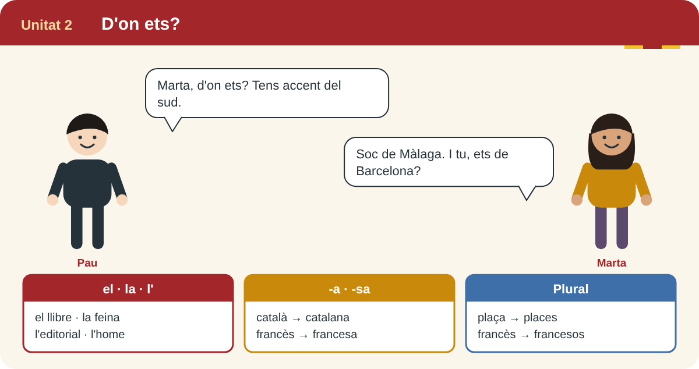
A l'editorial, a l'hora de l'esmorzar.
Pau: Marta, d'on ets? Tens accent del sud.
Marta: Soc de Màlaga, a Andalusia. I tu, ets de Barcelona?
Pau: No, soc de Vic. Ets historiadora de l'art, oi?
Marta: Sí, però ara treballo d'editora en pràctiques. I tu què fas?
Pau: Soc dissenyador gràfic. Faig les portades dels llibres.
Marta: Quina feina més bonica!
Al vespre, al pis. Arriba la Núria.
Núria: Hola! Tu deus ser la Marta. Jo soc la Núria.
Marta: Hola, Núria! Encantada. Ets catalana?
Núria: Sí, soc de Lleida. Soc periodista, treballo a la ràdio.
Marta: Quines llengües parles?
Núria: Català, castellà, anglès i una mica de francès. I tu?
Marta: Castellà, anglès… i ara aprenc català!
| Català | Castellà |
|---|---|
| d'on ets? | ¿de dónde eres? |
| soc de… | soy de… |
| què fas? / a què et dediques? | ¿a qué te dedicas? |
| treballar de… | trabajar de… |
| la feina | el trabajo |
| l'editorial (f.) | la editorial |
| el llibre / la portada | el libro / la portada |
| l'esmorzar (m.) | el desayuno, el almuerzo de media mañana |
| la llengua | la lengua, el idioma |
| parlar | hablar |
| aprendre (aprenc) | aprender (aprendo) |
| català, catalana | catalán, catalana |
| espanyol, espanyola | español, española |
| andalús, andalusa | andaluz, andaluza |
| francès, francesa | francés, francesa |
| anglès, anglesa | inglés, inglesa |
| el periodista / la periodista | el / la periodista |
| el metge / la metgessa | el médico / la médica |
| l'infermer / la infermera | el enfermero / la enfermera |
| el professor / la professora | el profesor / la profesora |
| el cambrer / la cambrera | el camarero / la camarera |
| el dissenyador / la dissenyadora | el diseñador / la diseñadora |
| l'estudiant (m. i f.) | el / la estudiante |
| oi? | ¿verdad? |
1. L'article
| Masculí | Femení | |
|---|---|---|
| Singular | el llibre · l'editor | la feina · l'editorial |
| Plural | els llibres | les feines |
| Indeterminat | un · uns | una · unes |
Davant de vocal o h escrivim l': l'home, l'amiga. Però el femení no s'apostrofa davant de i o u àtones: la infermera, la universitat, la història.
2. El femení
3. El plural
| Regla | Exemple |
|---|---|
| + -s | llibre → llibres, cambrer → cambrers |
| -a → -es | feina → feines, catalana → catalanes |
| -ça → -ces, -ja → -ges, -ca → -ques | plaça → places, platja → platges, vaca → vaques |
| -s, -x, -ç (agudes) → -os | francès → francesos, peix → peixos |
4. Treballar de, treballar a
Treballo d'editora (la professió) · Treballo a l'editorial (el lloc).
La s sonora. Entre vocals, la s sona com un brunzit d'abella: [z]. Aquest so no existeix en castellà.
| s sorda [s] | s sonora [z] |
|---|---|
| sou, passar, anglès | casa, francesa, anglesa |
Per això escrivim ss quan volem una s sorda entre vocals: passar, professora, classe.
1. Posa l'article: el, la, l', els, les.
a) llibre b) editorial c) infermera d) portades e) home f) universitat
2. Passa al femení.
a) català b) francès c) cambrer d) metge e) periodista f) andalús
3. Passa al plural.
a) la feina b) la plaça c) el francès d) la platja e) el dissenyador
4. Respon: D'on ets? Què fas? Quines llengües parles?
1. a) el b) l' c) la d) les e) l' f) la. 2. a) catalana b) francesa c) cambrera d) metgessa e) periodista f) andalusa. 3. a) les feines b) les places c) els francesos d) les platges e) els dissenyadors. 4. Resposta lliure. Model: Soc de Màlaga. Soc historiadora de l'art. Parlo castellà, anglès i una mica de català.
Objectius: parlo de la família, dic l'edat, compto fins a cent. Gramàtica: els possessius (el meu, la meva), el verb tenir, els números.
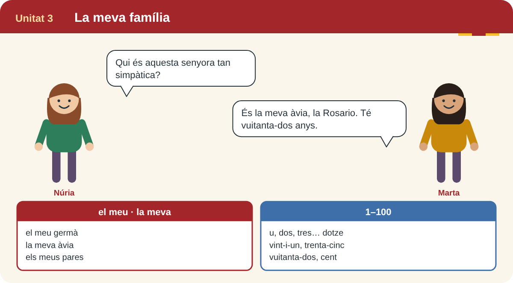
Al menjador del pis. La Marta ensenya fotos del mòbil a la Núria.
Núria: Qui és aquesta senyora tan simpàtica?
Marta: És la meva àvia, la Rosario. Té vuitanta-dos anys i viu a Màlaga.
Núria: I aquest noi tan alt?
Marta: És el meu germà, en Pablo. Té trenta anys i és metge.
Núria: I els teus pares?
Marta: Són aquests. La meva mare és professora i el meu pare té un restaurant.
Núria: Quina família més maca! Tens més germans?
Marta: No, només en Pablo. I tu, tens germans?
Núria: Sí, tinc una germana petita, la Laia. Té divuit anys i estudia a Lleida.
| Català | Castellà |
|---|---|
| la família | la familia |
| el pare / la mare | el padre / la madre |
| els pares | los padres |
| el germà / la germana | el hermano / la hermana |
| l'avi / l'àvia | el abuelo / la abuela |
| els avis | los abuelos |
| el fill / la filla | el hijo / la hija |
| el marit / la dona | el marido / la mujer, la esposa |
| el net / la neta | el nieto / la nieta |
| l'oncle / la tia | el tío / la tía |
| el cosí / la cosina | el primo / la prima |
| el noi / la noia | el chico / la chica |
| alt, alta / baix, baixa | alto/a / bajo/a |
| gran / petit, petita | mayor, grande / pequeño/a |
| simpàtic, simpàtica | simpático/a |
| maco, maca | bonito/a, majo/a |
| tenir | tener |
| quants anys tens? | ¿cuántos años tienes? |
| viure (viu) | vivir (vive) |
| només | solo |
| aquest, aquesta | este, esta |
1. Els possessius
| Masc. sing. | Fem. sing. | Masc. pl. | Fem. pl. | |
|---|---|---|---|---|
| jo | el meu | la meva | els meus | les meves |
| tu | el teu | la teva | els teus | les teves |
| ell, ella, vostè | el seu | la seva | els seus | les seves |
| nosaltres | el nostre | la nostra | els nostres | les nostres |
| vosaltres | el vostre | la vostra | els vostres | les vostres |
| ells, elles, vostès | el seu | la seva | els seus | les seves |
El possessiu porta article: la meva àvia, el teu germà.
2. El verb tenir
jo tinc · tu tens · ell, ella, vostè té · nosaltres tenim · vosaltres teniu · ells, elles, vostès tenen
Quants anys tens? — Tinc vint-i-sis anys.
3. Els números
| 0 zero | 1 u / un, una | 2 dos, dues | 3 tres |
| 4 quatre | 5 cinc | 6 sis | 7 set |
| 8 vuit | 9 nou | 10 deu | 11 onze |
| 12 dotze | 13 tretze | 14 catorze | 15 quinze |
| 16 setze | 17 disset | 18 divuit | 19 dinou |
| 20 vint | 21 vint-i-un | 22 vint-i-dos | 30 trenta |
| 40 quaranta | 50 cinquanta | 60 seixanta | 70 setanta |
| 80 vuitanta | 90 noranta | 99 noranta-nou | 100 cent |
La z i la tz. La z sona com la s sonora: zero, onze, dotze. La tz sona [dz]: dotze, tretze, setze. No les pronunciïs mai com la z castellana!
| Escrit | Com sona |
|---|---|
| onze | ón-zə |
| dotze | dód-zə |
| setze | séd-zə |
1. Completa amb el possessiu.
a) (jo) àvia b) (tu) germans c) (ella) pare d) (nosaltres) família e) (vosaltres) cosines
2. Escriu els números en lletres.
a) 14 b) 26 c) 33 d) 47 e) 82 f) 100
3. Completa amb tenir.
a) Jo un germà. b) La Laia divuit anys. c) Nosaltres tres cosins. d) Quants anys tu? e) Els avis una casa a Màlaga.
4. Descriu la teva família (cinc frases).
1. a) la meva b) els teus c) el seu d) la nostra e) les vostres. 2. a) catorze b) vint-i-sis c) trenta-tres d) quaranta-set e) vuitanta-dos f) cent. 3. a) tinc b) té c) tenim d) tens e) tenen. 4. Resposta lliure.
Objectius: parlo de la casa i del barri, pregunto on és una cosa. Gramàtica: viure, hi ha, ser per a la situació, les preposicions de lloc, les contraccions al, del, pel.
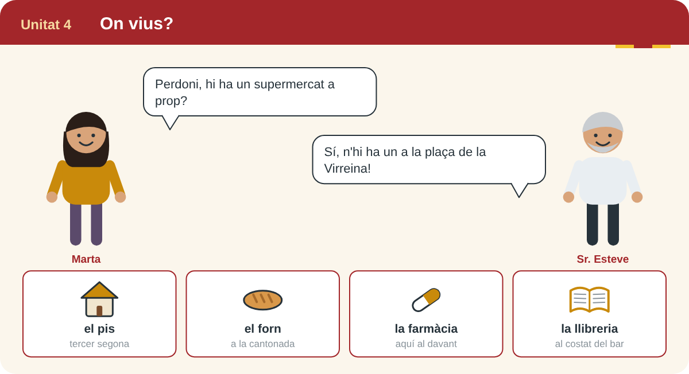
Al forn de la cantonada.
Marta: Bon dia! Vostè és el senyor Esteve?
Esteve: El mateix! I tu ets la noia nova del tercer, oi?
Marta: Sí, soc la Marta. Visc al carrer Verdi, al tercer segona.
Esteve: Benvinguda al barri! Gràcia és com un poble dins de Barcelona.
Marta: Perdoni, hi ha un supermercat a prop?
Esteve: Sí, n'hi ha un a la plaça de la Virreina. I el mercat de l'Abaceria és al costat del metro, a cinc minuts.
Marta: I una farmàcia?
Esteve: És aquí al davant, entre el bar i la llibreria.
Marta: Moltes gràcies!
Esteve: De res, maca. Té, una coca de vidre per a l'esmorzar!
| Català | Castellà |
|---|---|
| viure (visc, vius) | vivir (vivo, vives) |
| el pis | el piso |
| el carrer | la calle |
| la plaça | la plaza |
| el barri | el barrio |
| el poble | el pueblo |
| el forn / el forner | la panadería / el panadero |
| la cantonada | la esquina |
| el supermercat | el supermercado |
| el mercat | el mercado |
| la farmàcia | la farmacia |
| la llibreria | la librería |
| el metro | el metro |
| hi ha | hay |
| a prop (de) / lluny (de) | cerca (de) / lejos (de) |
| al costat (de) | al lado (de) |
| davant (de) / darrere (de) | delante (de) / detrás (de) |
| entre | entre |
| a la dreta / a l'esquerra | a la derecha / a la izquierda |
| aquí / allà | aquí / allí |
| el tercer segona | el tercero segunda (3.º 2.ª) |
| dins (de) / fora (de) | dentro (de) / fuera (de) |
1. El verb viure
jo visc · tu vius · ell, ella, vostè viu · nosaltres vivim · vosaltres viviu · ells, elles, vostès viuen
2. Hi ha
Hi ha serveix per al singular i per al plural: Hi ha un forn. Hi ha tres bars. (En la conversa també sentiràs hi han tres bars: és informal.)
Si no repetim el nom, diem n'hi ha: Hi ha un supermercat? — Sí, n'hi ha un a la plaça.
3. On és? Fem servir ser
En català estàndard, per dir on és una cosa o una persona, fem servir ser:
On és la farmàcia? — És aquí al davant. · Soc a casa. · La Núria és a la ràdio.
4. Les contraccions
| a + el = al | de + el = del | per + el = pel |
|---|---|---|
| a + els = als | de + els = dels | per + els = pels |
Visc al carrer Verdi. Vinc del mercat. Passejo pel barri. Però: a l'editorial, de l'Abaceria (no hi ha contracció davant de l').
La ll i la l·l. La ll és un so propi, com la ll castellana tradicional, sense convertir-la en y: llibreria, llet, callar. La l·l (ela geminada) sona com una l una mica llarga: col·legi, il·lusió. El punt volat (·) és obligatori.
La r final. En català central, la r final de moltes paraules no es pronuncia: carrer, primer, forner. Però sí que sona a mar, cor, bar.
1. Completa amb viure.
a) Jo a Gràcia. b) On tu? c) La Núria amb la Marta. d) Nosaltres al tercer. e) Els avis a Màlaga.
2. Al, als, del, dels, pel o pels?
a) Visc carrer Verdi. b) Vinc mercat. c) Passegem barri. d) Parlo veïns. e) Vaig supermercat.
3. Respon amb n'hi ha.
a) Hi ha un forn a prop? (sí, un) b) Hi ha bars a la plaça? (sí, molts) c) Hi ha farmàcies? (sí, dues)
4. Descriu el teu barri: què hi ha i on és?
1. a) visc b) vius c) viu d) vivim e) viuen. 2. a) al b) del c) pel d) dels e) al. 3. a) Sí, n'hi ha un. b) Sí, n'hi ha molts. c) Sí, n'hi ha dues. 4. Resposta lliure.
Objectius: explico la meva rutina, dic l'hora i els dies de la setmana. Gramàtica: el present de les tres conjugacions, els verbs en -eixo, llevar-se, l'hora.
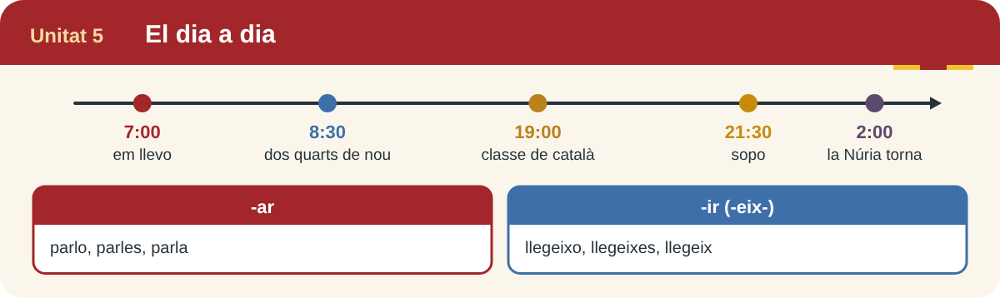
Dilluns, a les set del matí, a la cuina.
Jordi: Bon dia, Marta! Ja et lleves?
Marta: Sí, començo a treballar a les nou. I tu, a quina hora entres?
Jordi: A dos quarts de nou. Treballo en una empresa d'informàtica, a prop de la Sagrada Família.
Marta: I la Núria? No la veig mai al matí.
Jordi: La Núria fa un programa de nit a la ràdio. Torna a les dues i dorm fins a migdia.
Marta: Quina vida! I tu, què fas a la tarda?
Jordi: Dimarts i divendres assajo amb els castellers. Els altres dies vaig al gimnàs o llegeixo.
Marta: Jo dilluns i dimecres tinc classe de català. Prefereixo estudiar al vespre.
Jordi: Molt bé! Vols un cafè?
Marta: Sí, gràcies. Amb llet, si us plau.
| Català | Castellà |
|---|---|
| llevar-se | levantarse |
| dutxar-se | ducharse |
| esmorzar / dinar / sopar | desayunar / comer / cenar |
| començar | empezar |
| entrar / sortir (de la feina) | entrar / salir (del trabajo) |
| tornar | volver |
| dormir | dormir |
| llegir (llegeixo) | leer (leo) |
| preferir (prefereixo) | preferir (prefiero) |
| assajar | ensayar |
| el gimnàs | el gimnasio |
| el matí / el migdia | la mañana / el mediodía |
| la tarda / el vespre / la nit | la tarde / el anochecer / la noche |
| dilluns, dimarts, dimecres | lunes, martes, miércoles |
| dijous, divendres | jueves, viernes |
| dissabte, diumenge | sábado, domingo |
| quina hora és? | ¿qué hora es? |
| a quina hora…? | ¿a qué hora…? |
| ja | ya |
| mai | nunca |
| sempre / sovint | siempre / a menudo |
1. El present
| parlar (1a) | entendre (2a) | dormir (3a) | llegir (3a, -eix-) | |
|---|---|---|---|---|
| jo | parlo | entenc | dormo | llegeixo |
| tu | parles | entens | dorms | llegeixes |
| ell, ella, vostè | parla | entén | dorm | llegeix |
| nosaltres | parlem | entenem | dormim | llegim |
| vosaltres | parleu | enteneu | dormiu | llegiu |
| ells, elles, vostès | parlen | entenen | dormen | llegeixen |
2. Verbs pronominals: llevar-se
em llevo, et lleves, es lleva, ens llevem, us lleveu, es lleven.
3. L'hora
| Hora | Forma tradicional | Forma moderna (també correcta) |
|---|---|---|
| 1:00 | és la una | és la una |
| 3:00 | són les tres | són les tres |
| 3:15 | és un quart de quatre | són les tres i quart |
| 3:30 | són dos quarts de quatre | són les tres i mitja |
| 3:45 | són tres quarts de quatre | són les quatre menys quart |
Al sistema tradicional comptem els quarts cap a l'hora següent: dos quarts de nou = 8:30.
4. Els dies
Els dies van en minúscula i sense preposició: Dilluns tinc classe. Si és habitual, amb article: Els dimarts assajo (cada dimarts).
La o àtona sona [u]. En català central, la o sense accent sona com una u: començo (kumènsu), dormir (durmí), treballo (trəbàʎu).
Infinitius sense r. La r dels infinitius no es pronuncia: parlar (pərlá), dormir (durmí), entendre (əntèndrə).
1. Conjuga en present.
a) Jo (treballar) a Gràcia. b) Tu (llegir) molt. c) Ella (dormir) fins a migdia. d) Nosaltres (entendre) el català. e) Ells (preferir) el cafè.
2. Quina hora és? Escriu-ho de les dues maneres.
a) 9:15 b) 10:30 c) 6:45 d) 1:00
3. Completa amb em, et, es, ens, us.
a) Jo llevo a les set. b) A quina hora lleves? c) La Núria lleva a les dotze. d) Nosaltres dutxem al vespre.
4. Explica el teu dia (sis frases).
1. a) treballo b) llegeixes c) dorm d) entenem e) prefereixen. 2. a) un quart de deu / les nou i quart b) dos quarts d'onze / les deu i mitja c) tres quarts de set / les set menys quart d) la una. 3. a) em b) et c) es d) ens. 4. Resposta lliure.
Objectius: compro menjar, demano quantitats i preus. Gramàtica: voler i poder, el pronom en (quantitat), les mesures.
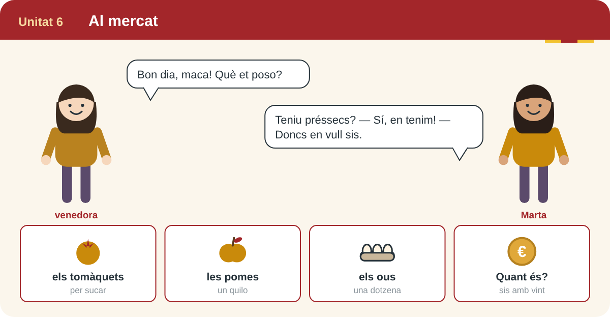
Dissabte al matí, al mercat de l'Abaceria. Parada de fruita i verdura.
Venedora: Bon dia, maca! Què et poso?
Marta: Bon dia! Vull un quilo de tomàquets, si us plau.
Venedora: Per amanida o per sucar?
Marta: Per sucar? Què vol dir?
Venedora: Per fer pa amb tomàquet! Aquests petits són els millors.
Marta: Doncs aquests! I teniu préssecs?
Venedora: Sí, en tenim de molt bons. Quants en vols?
Marta: En vull sis. I una mica de julivert.
Venedora: Alguna cosa més?
Marta: No, ja està. Quant és?
Venedora: Són sis euros amb vint.
Marta: Puc pagar amb targeta?
Venedora: És clar! Té, el julivert te'l regalo.
| Català | Castellà |
|---|---|
| la parada | el puesto (del mercado) |
| la fruita / la verdura | la fruta / la verdura |
| el tomàquet | el tomate |
| la poma / la pera | la manzana / la pera |
| la taronja | la naranja |
| el plàtan | el plátano |
| el préssec | el melocotón |
| la maduixa | la fresa |
| l'enciam (m.) | la lechuga |
| la ceba / l'all (m.) | la cebolla / el ajo |
| el julivert | el perejil |
| el pa / la llet | el pan / la leche |
| el formatge / el pernil | el queso / el jamón |
| els ous | los huevos |
| la carn / el peix | la carne / el pescado |
| un quilo / mig quilo | un kilo / medio kilo |
| una dotzena | una docena |
| una ampolla / un paquet | una botella / un paquete |
| quant és? / quant costa? | ¿cuánto es? / ¿cuánto cuesta? |
| car, cara / barat, barata | caro/a / barato/a |
| alguna cosa més? | ¿algo más? |
| ja està | ya está, nada más |
| pagar amb targeta | pagar con tarjeta |
| sucar | mojar (el pan) |
1. Voler i poder
| voler | poder | |
|---|---|---|
| jo | vull | puc |
| tu | vols | pots |
| ell, ella, vostè | vol | pot |
| nosaltres | volem | podem |
| vosaltres | voleu | podeu |
| ells, elles, vostès | volen | poden |
Per demanar amb més cortesia: voldria (quisiera): Voldria mig quilo de maduixes.
2. El pronom en
Quan no repetim el nom d'una cosa que es compta o es mesura, fem servir en. En castellà no hi ha res!
| Pregunta | Resposta |
|---|---|
| Teniu préssecs? | Sí, en tenim. |
| Quantes pomes vols? | En vull tres. |
| Vols més pa? | No, no en vull més. |
| Hi ha ous? | Sí, n'hi ha una dotzena. |
3. Les mesures
un quilo de tomàquets, mig quilo de maduixes, una ampolla d'oli, una dotzena d'ous. Fixa't: mig quilo (no mitjà), però dues hores i mitja.
La x, la ix i la tx. La x a principi de paraula i la ix sonen com el sh anglès: xocolata, peix, caixa, maduixa. La tx sona com la ch castellana: cotxe, despatx.
1. Completa amb voler o poder.
a) Jo un quilo de pomes. b) pagar amb targeta? (jo) c) Què tu? d) Nosaltres no venir. e) Ells dues ampolles d'aigua.
2. Respon amb en o n'.
a) Tens ous? (sí) b) Quantes taronges vols? (cinc) c) Hi ha pernil? (sí, una mica) d) Vols més formatge? (no)
3. Tradueix: a) melocotón b) fresa c) naranja d) cebolla e) lechuga f) perejil
4. Escriu un diàleg curt en una parada de peix.
1. a) vull b) Puc c) vols d) podem e) volen. 2. a) Sí, en tinc. b) En vull cinc. c) Sí, n'hi ha una mica. d) No, no en vull més. 3. a) el préssec b) la maduixa c) la taronja d) la ceba e) l'enciam f) el julivert. 4. Resposta lliure.
Objectius: parlo dels gustos i del temps lliure, faig preguntes, dic que no. Gramàtica: agradar, els interrogatius, la negació (mai, res, ningú, cap, gens).
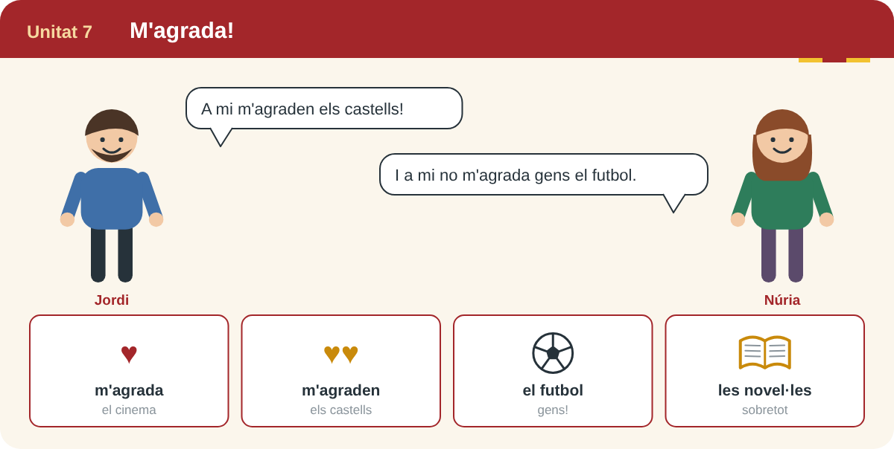
Divendres al vespre, al pis. Sopen tots tres.
Marta: Què us agrada fer el cap de setmana?
Núria: A mi m'agrada molt anar al cinema i caminar per la muntanya.
Jordi: A mi m'agraden els castells! Diumenge fem una actuació a la plaça de la Vila.
Marta: Els castells? Què són exactament?
Jordi: Són torres humanes. Pugem els uns sobre els altres, i a dalt de tot hi ha l'enxaneta, un nen petit.
Marta: Quina por! I a tu, Núria, t'agrada el futbol?
Núria: No m'agrada gens.
Jordi: A mi tampoc. No miro mai els partits.
Marta: Per què no?
Jordi: Perquè prefereixo fer esport que mirar-lo!
Marta: Doncs a mi m'agrada llegir, sobretot novel·les.
Núria: Has vingut al lloc perfecte: aquí, per Sant Jordi, tothom regala llibres!
| Català | Castellà |
|---|---|
| agradar | gustar |
| el cap de setmana | el fin de semana |
| el temps lliure | el tiempo libre |
| anar al cinema | ir al cine |
| caminar / passejar | caminar / pasear |
| la muntanya | la montaña |
| el castell | el castillo; la torre humana |
| el casteller | el miembro de una colla castellera |
| l'actuació (f.) | la actuación |
| l'enxaneta (m. i f.) | el niño que corona el castell |
| la por | el miedo |
| el partit | el partido |
| fer esport | hacer deporte |
| la novel·la | la novela |
| tothom | todo el mundo |
| també / tampoc | también / tampoco |
| sobretot | sobre todo |
| doncs | pues |
| a dalt / a baix | arriba / abajo |
| gens | nada (de), en absoluto |
1. Agradar
| Una cosa | Diverses coses | |
|---|---|---|
| (a mi) | m'agrada el cinema | m'agraden els castells |
| (a tu) | t'agrada | t'agraden |
| (a ell, ella, vostè) | li agrada | li agraden |
| (a nosaltres) | ens agrada | ens agraden |
| (a vosaltres) | us agrada | us agraden |
| (a ells, elles, vostès) | els agrada | els agraden |
A mi també. · A mi tampoc. · A mi sí. · A mi no.
2. Els interrogatius
| què? | ¿qué? | qui? | ¿quién? |
|---|---|---|---|
| on? | ¿dónde? | quan? | ¿cuándo? |
| com? | ¿cómo? | per què? | ¿por qué? |
| quant, quanta, quants, quantes? | ¿cuánto/a/os/as? | quin, quina, quins, quines? | ¿qué?, ¿cuál? (+ nombre) |
Quin llibre llegeixes? · Quina hora és? · Quins castells fan?
3. La negació
| Exemple | |
|---|---|
| no | No m'agrada el futbol. |
| no… mai | No miro mai la tele. |
| no… res | No vull res. |
| no… ningú | No hi ha ningú. |
| no… cap | No tinc cap germà. |
| no… gens | No m'agrada gens. |
| no… pas | No ho sé pas. (emfàtic, opcional) |
En català hi ha doble negació, com en castellà: No hi ha ningú.
Què / que, per què / perquè.
| Exemple | |
|---|---|
| què (pregunta o qué) | Què fas? |
| que (conjunció, que) | Diu que no. |
| per què? (pregunta) | Per què no vens? |
| perquè (resposta, porque) | Perquè estic cansada. |
1. Agrada o agraden?
a) M' el cinema. b) T' les novel·les? c) Li els castells. d) Ens caminar. e) Us el pa amb tomàquet?
2. Completa amb un interrogatiu.
a) et dius? b) vius? c) anys tens? d) llibre llegeixes? e) no vens?
3. Respon en negatiu: a) Vols alguna cosa? b) Hi ha algú a casa? c) Tens algun germà? d) Mires sempre la tele?
4. Escriu què t'agrada i què no t'agrada gens.
1. a) agrada b) agraden c) agraden d) agrada e) agrada. 2. a) Com b) On c) Quants d) Quin e) Per què. 3. a) No, no vull res. b) No, no hi ha ningú. c) No, no tinc cap germà. d) No, no la miro mai. 4. Resposta lliure.
Objectius: faig plans, dic què estic fent, quedo amb amics. Gramàtica: els demostratius (aquest, aquell, això), estar + gerundi, el present amb valor de futur, anar a + infinitiu.
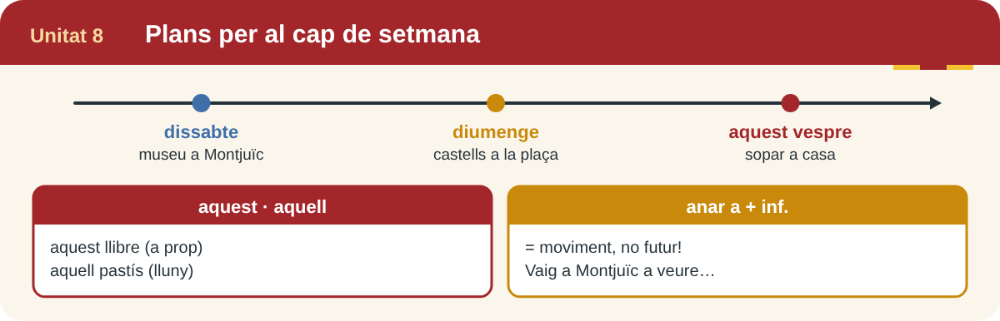
Divendres a la tarda, a l'editorial.
Pau: Marta, què fas aquest cap de setmana?
Marta: Dissabte al matí vaig a Montjuïc a veure el Museu Nacional. I diumenge vaig a la plaça de la Vila: en Jordi fa castells!
Pau: Que bé! Jo demà marxo a Vic. Diumenge tornem tard.
Sona el mòbil. És la Núria.
Núria: Marta, què estàs fent?
Marta: Estic acabant aquest informe. Per què?
Núria: Aquest vespre sopem a casa, d'acord? Faig truita de patates.
Marta: Perfecte! Porto postres.
Núria: Aquell pastís de la pastisseria del costat del forn?
Marta: Aquell mateix! A quina hora quedem?
Núria: A les nou. Fins després!
| Català | Castellà |
|---|---|
| el pla | el plan |
| quedar (amb algú) | quedar (con alguien) |
| d'acord | de acuerdo |
| marxar | irse, marcharse |
| tornar tard / d'hora | volver tarde / temprano |
| demà / demà passat | mañana / pasado mañana |
| avui / aquesta nit | hoy / esta noche |
| la setmana que ve | la semana que viene |
| el museu | el museo |
| l'informe (m.) | el informe |
| la truita (de patates) | la tortilla (de patatas) |
| les postres | el postre |
| el pastís / la pastisseria | el pastel / la pastelería |
| portar | traer, llevar |
| acabar | acabar, terminar |
| el mòbil | el móvil |
| sonar | sonar |
| que bé! | ¡qué bien! |
| mateix, mateixa | mismo/a |
1. Els demostratius
| Masc. sing. | Fem. sing. | Masc. pl. | Fem. pl. | Neutre | |
|---|---|---|---|---|---|
| a prop (este/ese) | aquest | aquesta | aquests | aquestes | això |
| lluny (aquel) | aquell | aquella | aquells | aquelles | allò |
En català central només hi ha dos graus: aquest serveix per a este i per a ese. Això = esto, eso.
2. Estar + gerundi
Estic acabant l'informe. Què estàs fent?
| -ar → -ant | -er, -re → -ent | -ir → -int |
|---|---|---|
| parlant, acabant | entenent, perdent | dormint, llegint |
Irregulars freqüents: fer → fent, dir → dient, veure → veient, ser → sent.
3. El present per al futur
Per als plans, fem servir el present amb una expressió de temps: Demà marxo a Vic. Aquest vespre sopem a casa.
4. Anar a + infinitiu: un fals amic
En català, anar a + infinitiu indica moviment, no futur:
Dissabte vaig a Montjuïc a veure el museu = me desplazo a Montjuïc para ver el museo.
Per dir voy a cenar en casa (futur), diem: Sopo a casa o, a l'A2, Soparé a casa. Ho repassarem a la unitat 9, perquè vaig + infinitiu té en català un altre significat molt important!
Els diftongs. El català té molts diftongs acabats en -i o -u: noia, cuina, nou, viure, caure. La u i la i d'aquests diftongs són molt curtes.
1. Aquest, aquesta, aquests, aquestes, aquell, aquella?
a) llibre (aquí) b) noies (aquí) c) casa (allà) d) pastissos (allà)
2. Escriu el gerundi.
a) acabar b) fer c) dormir d) llegir e) dir f) veure
3. Tradueix fent servir el present.
a) Mañana voy a cenar con Jordi. b) Este fin de semana voy a estudiar. c) El lunes empiezo a las nueve.
4. Escriu els teus plans per al cap de setmana (cinc frases).
1. a) aquest b) aquestes c) aquella d) aquells. 2. a) acabant b) fent c) dormint d) llegint e) dient f) veient. 3. a) Demà sopo amb en Jordi. b) Aquest cap de setmana estudio. c) Dilluns començo a les nou. 4. Resposta lliure.
Al final d'aquest nivell sabràs explicar què vas fer ahir i com era la teva infància, comprar roba, anar al metge, organitzar un viatge, celebrar les festes més importants del calendari català i fer servir els pronoms en i hi.
Objectius: explico què vaig fer el cap de setmana. Gramàtica: el passat perifràstic (vaig anar, vam veure), els marcadors de passat.
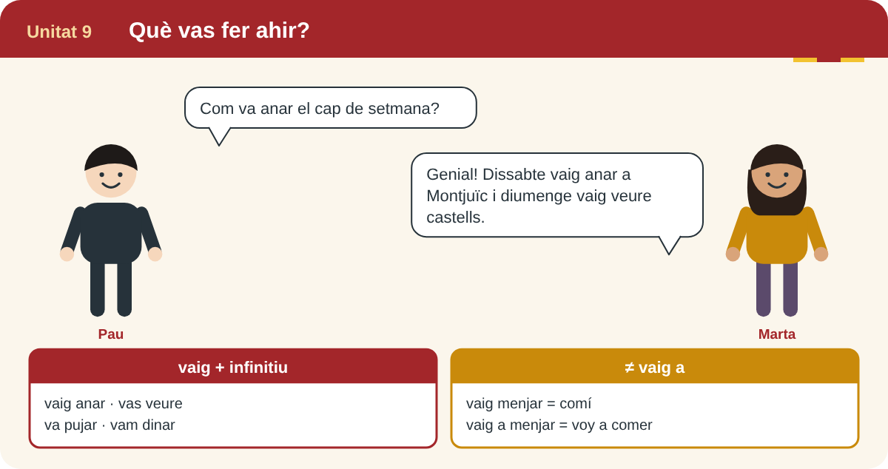
Dilluns al matí, a l'editorial.
Pau: Bon dia, Marta! Com va anar el cap de setmana?
Marta: Genial! Dissabte vaig anar a Montjuïc i vaig visitar el Museu Nacional. Hi ha una col·lecció romànica increïble.
Pau: I diumenge, vas veure els castells?
Marta: Sí! En Jordi va pujar al tercer pis d'un castell de set. Vaig passar una por…
Pau: Ostres! I va carregar?
Marta: Va carregar i va descarregar! Tothom va aplaudir. Després vam anar a fer un vermut a la plaça.
Pau: Que bé. Jo vaig anar a Vic: dissabte vam fer el mercat amb els meus pares i diumenge vam dinar a casa dels avis.
Marta: I què vau menjar?
Pau: Fuet, botifarra i escalivada. Ah, i et vaig portar això: és llonganissa de Vic!
| Català | Castellà |
|---|---|
| com va anar? | ¿cómo fue? |
| ahir / abans-d'ahir | ayer / anteayer |
| la setmana passada | la semana pasada |
| l'any passat | el año pasado |
| fa dos dies | hace dos días |
| visitar | visitar |
| la col·lecció | la colección |
| romànic, romànica | románico/a |
| increïble | increíble |
| pujar | subir |
| el pis (d'un castell) | el piso, el nivel |
| carregar / descarregar | coronar / deshacer (un castell) |
| aplaudir | aplaudir |
| fer el vermut | tomar el aperitivo |
| ostres! | ¡caramba! |
| el fuet / la llonganissa | embutidos curados típicos |
| la botifarra | la butifarra |
| l'escalivada (f.) | verduras asadas al fuego |
| passar por | pasar miedo |
1. El passat perifràstic
En català, el passat més habitual es forma amb el present d'anar + infinitiu:
| anar (auxiliar) | + infinitiu | |
|---|---|---|
| jo | vaig | anar, veure, menjar |
| tu | vas | |
| ell, ella, vostè | va | |
| nosaltres | vam | |
| vosaltres | vau | |
| ells, elles, vostès | van |
Vaig anar a Montjuïc = Fui a Montjuïc. Vam dinar a casa = Comimos en casa.
És el temps de les accions acabades en un temps ja passat: ahir, dissabte, la setmana passada, l'any passat, el 2020.
2. Vaig anar ≠ vaig a
| Significat | |
|---|---|
| Vaig menjar a casa. | Comí en casa. (passat) |
| Vaig a menjar a casa. | Voy a casa a comer. (moviment) |
3. El pronom darrere de anar
Els pronoms van davant de l'auxiliar: Et vaig portar això. Hi vam anar diumenge.
Vam i van. Nosaltres vam, amb m; ells van, amb n. Sonen gairebé igual, però s'escriuen diferent. Truc: nosaltres → m (com som, tenim, parlem).
1. Passa al passat perifràstic.
a) Visito el museu. b) Dinem a casa. c) Veus els castells? d) Vosaltres aneu a Vic. e) Ells mengen botifarra.
2. Passat o moviment? Tradueix.
a) Vaig sopar amb la Núria. b) Vaig a sopar amb la Núria. c) Van comprar pa. d) Van a comprar pa.
3. Respon: Què vas fer ahir? I el cap de setmana passat?
1. a) Vaig visitar el museu. b) Vam dinar a casa. c) Vas veure els castells? d) Vosaltres vau anar a Vic. e) Ells van menjar botifarra. 2. a) Cené con Núria. b) Voy a cenar con Núria (me desplazo). c) Compraron pan. d) Van (a algún sitio) a comprar pan. 3. Resposta lliure.
Objectius: explico què he fet avui, aquesta setmana o a la meva vida. Gramàtica: el perfet (he treballat), els participis irregulars, ja / encara no.
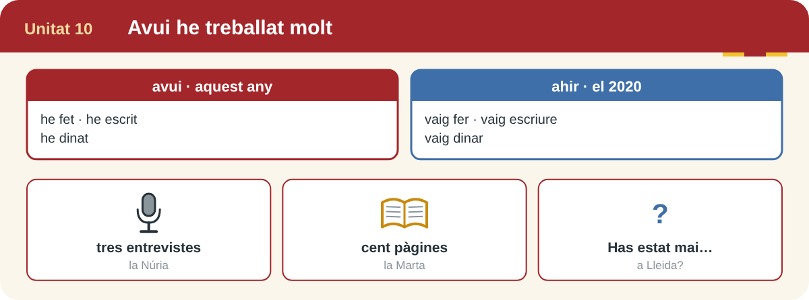
Dimecres al vespre. La Núria arriba a casa.
Núria: Quin dia! Avui he fet tres entrevistes i he escrit dos reportatges.
Marta: Jo he corregit cent pàgines d'una novel·la i he dinat amb la senyora Vilaró.
Núria: Uau, amb la jefa?
Marta: Amb la cap, Núria! M'ha dit que estic aprenent molt de pressa.
Núria: Té raó. Ja has sopat?
Marta: Encara no. Ah, i aquest matí he parlat amb la meva àvia.
Núria: Que bé. Com està?
Marta: Molt bé. Ahir va anar al metge i tot està perfecte.
Núria: Has estat mai a Lleida?
Marta: No, no hi he estat mai. M'hi portaràs?
Núria: És clar! Per la Festa Major de maig.
| Català | Castellà |
|---|---|
| l'entrevista | la entrevista |
| el reportatge | el reportaje |
| corregir | corregir |
| la pàgina | la página |
| el cap / la cap | el jefe / la jefa |
| de pressa | deprisa |
| tenir raó | tener razón |
| ja / encara no | ya / todavía no |
| aquest matí | esta mañana |
| aquesta setmana | esta semana |
| aquest any | este año |
| alguna vegada | alguna vez |
| mai | nunca; alguna vez (en pregunta) |
| la festa major | las fiestas patronales |
| escriure (escrit) | escribir (escrito) |
| fer (fet) | hacer (hecho) |
| dir (dit) | decir (dicho) |
| veure (vist) | ver (visto) |
| ser / estar (estat) | ser / estar (sido, estado) |
| obrir (obert) | abrir (abierto) |
| prendre (pres) | tomar (tomado) |
1. El perfet
haver (present) + participi:
jo he · tu has · ell, ella, vostè ha · nosaltres hem · vosaltres heu · ells, elles, vostès han
He treballat. Has sopat? Hem dinat junts.
2. Els participis
| Regulars | Irregulars freqüents | ||
|---|---|---|---|
| -ar → -at | parlat, dinat | fer → fet | dir → dit |
| -er, -re → -ut | perdut, rebut | veure → vist | escriure → escrit |
| -ir → -it | dormit, llegit | obrir → obert | prendre → pres |
| ser, estar → estat | tenir → tingut | ||
| venir → vingut | viure → viscut | ||
| beure → begut | conèixer → conegut | ||
| posar → posat | entendre → entès |
3. Perfet o perifràstic?
| Perfet (he dinat) | Perifràstic (vaig dinar) |
|---|---|
| avui, aquest matí, aquesta setmana, aquest any | ahir, dissabte, la setmana passada, l'any passat |
| experiència sense data: Has estat mai a Lleida? | data concreta: Hi vaig estar el 2019. |
4. Ja / encara no / mai
Ja has sopat? — Sí, ja he sopat. / Encara no. · Has estat mai a Lleida? (pregunta: «alguna vez») — No hi he estat mai.
Ha / a, he / e. El verb haver s'escriu amb h: ha (ha), he (he). La preposició a i la conjunció e (que no existeix en català: diem i) no en porten. Compara: La Núria ha anat a Lleida.
1. Escriu el participi: a) fer b) veure c) escriure d) obrir e) viure f) tenir g) dir h) prendre
2. Perfet o perifràstic?
a) Avui (treballar, jo) molt. b) Ahir (sopar, nosaltres) tard. c) Aquest any (anar, ells) a Lleida. d) L'any passat (viure, tu) a Màlaga.
3. Respon amb ja o encara no: a) Has dinat? b) Has llegit aquesta novel·la? c) Has estat mai a Girona?
1. a) fet b) vist c) escrit d) obert e) viscut f) tingut g) dit h) pres. 2. a) he treballat b) vam sopar c) han anat d) vas viure. 3. Respostes lliures. Models: Sí, ja he dinat. / Encara no l'he llegida. / No, no hi he estat mai.
Objectius: explico records de la infància, descric com eren les coses. Gramàtica: l'imperfet (parlava, feia, era), imperfet o perifràstic.
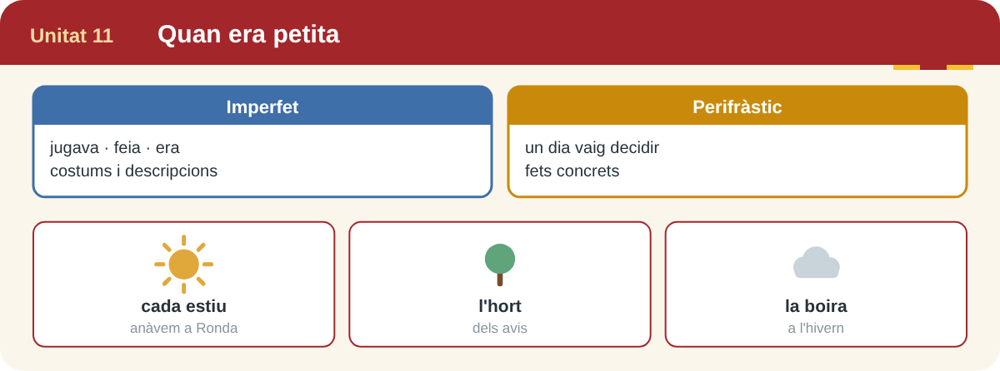
Diumenge a la tarda, al balcó. La Marta i la Núria miren fotos antigues.
Núria: Que petita que eres! On és, això?
Marta: És a Ronda, el poble dels meus avis. Cada estiu hi passàvem un mes.
Núria: I què feies tot el dia?
Marta: Jugava al carrer amb els meus cosins. Ens llevàvem tard, anàvem a la piscina i la meva àvia ens feia uns esmorzars enormes.
Núria: Jo vivia en un poble petit a prop de Lleida, entre camps de fruiters. Els meus avis tenien un hort.
Marta: I t'agradava?
Núria: Molt! Però a l'estiu feia una calor terrible i a l'hivern sempre hi havia boira.
Marta: I un dia vas decidir venir a Barcelona…
Núria: Sí, als divuit anys vaig venir a estudiar Periodisme. Quan vaig arribar no coneixia ningú!
| Català | Castellà |
|---|---|
| de petit, de petita | de pequeño/a |
| el record | el recuerdo |
| jugar | jugar |
| el cosí, la cosina | el primo, la prima |
| la piscina | la piscina |
| enorme | enorme |
| el camp | el campo |
| els fruiters | los árboles frutales |
| l'hort (m.) | el huerto |
| l'estiu / l'hivern | el verano / el invierno |
| la primavera / la tardor | la primavera / el otoño |
| fer calor / fer fred | hacer calor / hacer frío |
| la boira | la niebla |
| decidir | decidir |
| arribar | llegar |
| conèixer (coneixia) | conocer (conocía) |
| cada estiu | cada verano |
| abans | antes |
| llavors / aleshores | entonces |
1. L'imperfet
| parlar | perdre | dormir / llegir | |
|---|---|---|---|
| jo | parlava | perdia | dormia |
| tu | parlaves | perdies | dormies |
| ell, ella, vostè | parlava | perdia | dormia |
| nosaltres | parlàvem | perdíem | dormíem |
| vosaltres | parlàveu | perdíeu | dormíeu |
| ells, elles, vostès | parlaven | perdien | dormien |
Irregulars: ser → era, eres, era, érem, éreu, eren · fer → feia, feies, feia, fèiem, fèieu, feien · dir → deia · veure → veia · viure → vivia · beure → bevia.
2. Imperfet o perifràstic?
| Imperfet | Perifràstic |
|---|---|
| costums: Cada estiu anàvem a Ronda. | una acció acabada: Un dia vaig decidir venir. |
| descripció: Feia calor. Era petita. | fets en ordre: Vaig arribar i vaig buscar pis. |
| el fons d'una història: No coneixia ningú… | el que passa en aquest fons: …quan vaig arribar. |
Accents de l'imperfet. Les formes de nosaltres i vosaltres són esdrúixoles i porten accent: parlàvem, parlàveu, perdíem, dormíeu, érem, fèiem.
1. Posa en imperfet.
a) Jo (viure) a Màlaga. b) Tu (ser) molt petit. c) Nosaltres (anar) a la piscina. d) Els avis (tenir) un hort. e) Què (fer) vosaltres a l'estiu?
2. Imperfet o perifràstic?
a) Quan (ser, jo) petita, (viure) a Màlaga. b) Un dia (decidir, jo) venir a Barcelona. c) (Fer) fred quan (arribar, nosaltres) .
3. Escriu cinc frases sobre la teva infància.
1. a) vivia b) eres c) anàvem d) tenien e) fèieu. 2. a) era, vivia b) vaig decidir c) Feia, vam arribar. 3. Resposta lliure.
Objectius: compro roba, parlo de colors i talles, demano canviar una cosa. Gramàtica: els pronoms de complement directe (el, la, els, les, ho), l'apòstrof amb els pronoms.
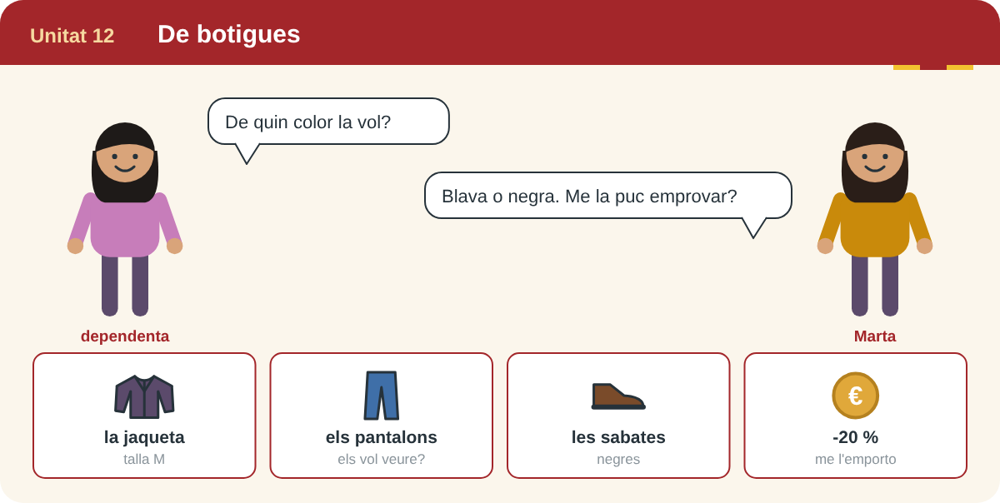
En una botiga de roba del carrer Gran de Gràcia.
Dependenta: Bon dia! Puc ajudar-la?
Marta: Sí, busco una jaqueta per a la feina.
Dependenta: De quin color la vol?
Marta: Blava o negra.
Dependenta: Quina talla fa servir?
Marta: Normalment, la M.
Dependenta: Miri, aquesta és nova. Li agrada?
Marta: Sí, molt. Me la puc emprovar?
Dependenta: És clar, els emprovadors són al fons.
Al cap d'una estona.
Marta: Em va una mica gran. La té en una S?
Dependenta: Sí, aquí la té. I aquests pantalons? Els vol veure?
Marta: No, gràcies, ja en tinc molts. Quant costa la jaqueta?
Dependenta: Seixanta euros. Ara fem un vint per cent de descompte.
Marta: Perfecte, me l'emporto. Si no em va bé, la puc canviar?
Dependenta: Sí, té quinze dies. Guardi el tiquet.
| Català | Castellà |
|---|---|
| la botiga | la tienda |
| el dependent, la dependenta | el dependiente, la dependienta |
| la roba | la ropa |
| la jaqueta / l'abric (m.) | la chaqueta / el abrigo |
| la camisa / la samarreta | la camisa / la camiseta |
| els pantalons / la faldilla | los pantalones / la falda |
| el vestit | el vestido; el traje |
| les sabates | los zapatos |
| la talla | la talla |
| emprovar-se | probarse (ropa) |
| l'emprovador (m.) | el probador |
| anar bé / anar gran / anar petit | quedar bien / grande / pequeño |
| el descompte | el descuento |
| canviar | cambiar |
| el tiquet | el tique |
| emportar-se | llevarse |
| blanc, negre, vermell | blanco, negro, rojo |
| blau, verd, groc | azul, verde, amarillo |
| gris, marró, rosa, lila | gris, marrón, rosa, lila |
| al fons | al fondo |
1. Els pronoms de complement directe
| Davant del verb | Davant de vocal | Darrere del verb | |
|---|---|---|---|
| masc. sing. | el compro | l'emprovo | comprar-lo |
| fem. sing. | la compro | l'emprovo | comprar-la |
| masc. pl. | els compro | els emprovo | comprar-los |
| fem. pl. | les compro | les emprovo | comprar-les |
| neutre | ho compro | ho entenc | comprar-ho |
2. Ho: el pronom neutre
Ho substitueix això, una frase o una idea: No ho sé. Ho entens? Ja ho has dit.
3. Els colors
Concorden: una jaqueta negra, uns pantalons blaus, unes sabates verdes. Fixa't: blanc → blanca, groc → groga.
L'apòstrof amb pronoms. El i la s'apostrofen davant de vocal o h: l'emprovo, l'he comprat. Però la no s'apostrofa davant de i, u àtones: la utilitzo, la imito.
1. Substitueix amb un pronom.
a) Compro la jaqueta. b) Vull els pantalons. c) Emprovo l'abric. d) Busco les sabates. e) No entenc això.
2. Posa el pronom darrere: a) La puc canviar? b) Els vols veure? c) Ho vull saber.
3. Concorda el color: a) unes sabates (negre) b) una camisa (blanc) c) uns pantalons (verd) d) una faldilla (groc)
1. a) La compro. b) Els vull. c) L'emprovo. d) Les busco. e) No ho entenc. 2. a) Puc canviar-la? b) Vols veure'ls? c) Vull saber-ho. 3. a) negres b) blanca c) verds d) groga.
Objectius: explico què em fa mal, entenc els consells del metge. Gramàtica: fer mal, l'imperatiu (tu i vostè), haver de i caldre.
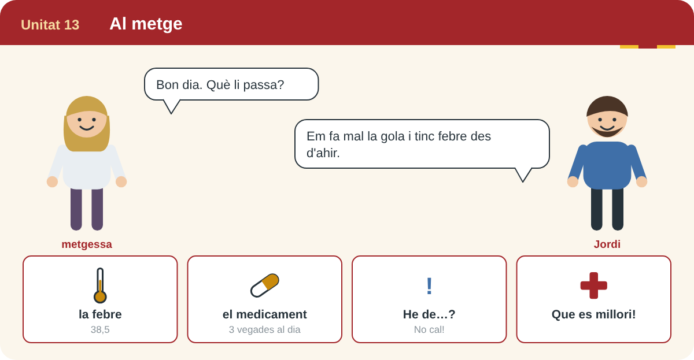
Al CAP (Centre d'Atenció Primària) de Gràcia. En Jordi és a la consulta.
Metgessa: Bon dia. Què li passa?
Jordi: Em fa mal la gola i tinc febre des d'ahir.
Metgessa: Quanta febre té?
Jordi: Ahir a la nit, trenta-vuit i mig.
Metgessa: Segui aquí. Obri la boca i digui «aaa».
Jordi: Aaa…
Metgessa: Té la gola una mica inflamada. És un refredat fort. Ha de beure molta aigua i descansar.
Jordi: He d'anar a la feina?
Metgessa: No, avui i demà es queda a casa. Prengui aquest medicament tres vegades al dia, després de menjar.
Jordi: Cal tornar?
Metgessa: No cal. Però si en tres dies no millora, torni.
Jordi: Moltes gràcies.
Metgessa: De res. Que es millori!
| Català | Castellà |
|---|---|
| el metge / la metgessa | el médico / la médica |
| el CAP | el centro de salud |
| la consulta | la consulta |
| fer mal | doler |
| què li passa? | ¿qué le pasa? |
| el cap | la cabeza |
| la gola | la garganta |
| l'esquena (f.) | la espalda |
| la panxa | la barriga |
| el braç / la mà | el brazo / la mano |
| la cama / el peu | la pierna / el pie |
| el genoll | la rodilla |
| les dents / els ulls | los dientes / los ojos |
| l'orella (f.) | la oreja |
| la febre | la fiebre |
| el refredat / estar constipat | el resfriado / estar resfriado |
| la tos | la tos |
| inflamat, inflamada | inflamado/a |
| el medicament / la pastilla | el medicamento / la pastilla |
| la recepta | la receta |
| tres vegades al dia | tres veces al día |
| descansar | descansar |
| millorar | mejorar |
| que et milloris! / que es millori! | ¡que te mejores! / ¡que se mejore! |
1. Fer mal
Em fa mal el cap. Em fan mal les cames. (com agradar: em, et, li, ens, us, els)
2. L'imperatiu
| Infinitiu | tu | vostè | vosaltres | vostès |
|---|---|---|---|---|
| parlar | parla | parli | parleu | parlin |
| beure | beu | begui | beveu | beguin |
| obrir | obre | obri | obriu | obrin |
| llegir | llegeix | llegeixi | llegiu | llegeixin |
| seure | seu | segui | seieu | seguin |
| fer | fes | faci | feu | facin |
| dir | digues | digui | digueu | diguin |
| venir | vine | vingui | veniu | vinguin |
| prendre | pren | prengui | preneu | prenguin |
| anar | vés | vagi | aneu | vagin |
L'imperatiu negatiu el veurem a la unitat 20.
3. Haver de i caldre
Les grafies tg i tj. Sonen com la j anglesa de jeans: metge, fetge, platja, mitjà. Davant de e, i escrivim tg (metge); davant de a, o, u, tj (platja, mitjà).
1. Fa mal o fan mal?
a) Em el cap. b) Li els peus. c) Ens l'esquena. d) T' les dents?
2. Passa a la forma de vostè.
a) Obre la boca. b) Pren aquesta pastilla. c) Beu aigua. d) Vine demà. e) Digues «aaa».
3. Corregeix: a) Tinc que descansar. b) No és necessari tornar. c) Em fa mal els peus. d) Vaig a dormir a la cama.
1. a) fa mal b) fan mal c) fa mal d) fan mal. 2. a) Obri la boca. b) Prengui aquesta pastilla. c) Begui aigua. d) Vingui demà. e) Digui «aaa». 3. a) He de descansar. b) No cal tornar. c) Em fan mal els peus. d) Vaig a dormir al llit.
Objectius: organitzo un viatge, compro bitllets, comparo llocs. Gramàtica: el futur (anirem, farem), els comparatius (més… que, tan… com, millor).
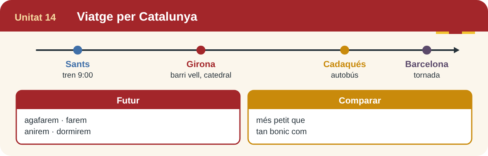
Dijous al vespre. La Marta i la Núria preparen una escapada.
Núria: Dissabte agafarem el tren a Sants a les nou i arribarem a Girona en tres quarts d'hora.
Marta: Tan aviat? I què hi farem?
Núria: Primer passejarem pel barri vell i pujarem les escales de la catedral. Després dinarem al costat del riu Onyar.
Marta: I diumenge?
Núria: Agafarem l'autobús fins a Cadaqués. És més petit que Sitges, però és el poble més bonic de la Costa Brava!
Marta: Hi farà fred? És novembre…
Núria: Farà menys calor que a Màlaga, segur. Porta una jaqueta.
Marta: On dormirem?
Núria: En una pensió a prop de la platja. És més barata que un hotel i tan còmoda com un hotel.
Marta: Perfecte. Compraré els bitllets per internet: anada i tornada?
Núria: Sí, i compra'ls aviat, que seran més barats.
| Català | Castellà |
|---|---|
| l'escapada (f.) | la escapada |
| agafar (el tren) | coger (el tren) |
| el tren / l'estació (f.) | el tren / la estación |
| l'autobús (m.) / la parada | el autobús / la parada |
| el cotxe / l'avió (m.) | el coche / el avión |
| el bitllet d'anada i tornada | el billete de ida y vuelta |
| l'andana (f.) / la via | el andén / la vía |
| perdre el tren | perder el tren |
| arribar / sortir | llegar / salir |
| el barri vell | el casco antiguo |
| la catedral | la catedral |
| les escales | la escalera |
| el riu | el río |
| la platja / la costa | la playa / la costa |
| la pensió / l'hotel (m.) | la pensión / el hotel |
| còmode, còmoda | cómodo/a |
| aviat | pronto |
| per internet | por internet |
1. El futur
Infinitiu + -é, -às, -à, -em, -eu, -an:
| parlar | parlaré, parlaràs, parlarà, parlarem, parlareu, parlaran |
|---|---|
| perdre | perdré, perdràs, perdrà… |
| dormir | dormiré, dormiràs, dormirà… |
Irregulars freqüents: anar → aniré · fer → faré · tenir → tindré · venir → vindré · voler → voldré · poder → podré · saber → sabré · ser → seré · haver → hauré · veure → veuré.
2. Els comparatius
| Exemple | |
|---|---|
| més … que | Cadaqués és més petit que Sitges. |
| menys … que | Fa menys calor que a Màlaga. |
| tan … com | És tan còmoda com un hotel. |
| tant/tanta/tants/tantes … com | No té tants turistes com Sitges. |
Irregulars: bo → millor, dolent → pitjor, gran → més gran, petit → més petit.
3. El superlatiu
el poble més bonic de la Costa Brava · molt bonic = bonicíssim.
Accents del futur. Les formes del futur són agudes i porten accent quan acaben en vocal o en -s: parlaré, parlaràs, parlarà. Parlarem, parlareu, parlaran no en porten.
1. Posa en futur.
a) Jo (agafar) el tren. b) Nosaltres (anar) a Girona. c) Què (fer) tu dissabte? d) (Fer) fred. e) Ells (venir) diumenge.
2. Compara.
a) Barcelona / Girona (gran) b) el tren / l'autobús (ràpid) c) la pensió / l'hotel (car) d) aquest restaurant / aquell (bo)
3. Explica el teu proper viatge (cinc frases en futur).
1. a) agafaré b) anirem c) faràs d) Farà e) vindran. 2. Models: a) Barcelona és més gran que Girona. b) El tren és més ràpid que l'autobús. c) La pensió és menys cara que l'hotel. d) Aquest restaurant és millor que aquell. 3. Resposta lliure.
Objectius: parlo de regals i de llibres, celebro Sant Jordi. Gramàtica: els pronoms de complement indirecte (em, et, li, ens, us, els), les combinacions amb ho (m'ho, li ho).
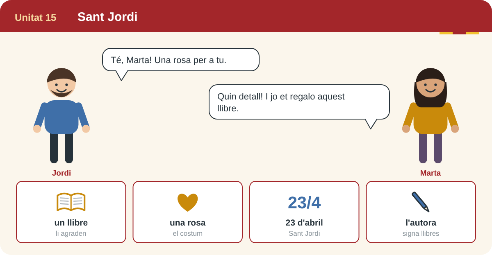
23 d'abril, al passeig de Gràcia. L'editorial té una parada de llibres.
Clienta: Bon dia! Busco un llibre per a la meva mare. Què em recomana?
Marta: Li agraden les novel·les històriques?
Clienta: Li encanten!
Marta: Doncs li recomano aquesta. L'autora la signarà aquí a les dotze.
Clienta: Perfecte. Me l'emboliqueu per regalar, si us plau?
Marta: És clar. Aquí la té, amb un punt de llibre de regal.
A la tarda arriba en Jordi amb una rosa.
Jordi: Té, Marta! Una rosa per a tu. És el costum.
Marta: Quin detall! Moltes gràcies. I a la Núria?
Jordi: A la Núria li he comprat una rosa i un llibre de poesia. Però no li diguis!
Marta: No li ho diré, t'ho prometo. I tu què vols?
Jordi: Un llibre, és clar. Abans, els nois regalaven roses i les noies regalaven llibres. Ara tothom regala de tot!
Marta: Doncs et regalo aquest: és la novel·la més venuda d'avui.
| Català | Castellà |
|---|---|
| Sant Jordi | San Jorge (23 de abril) |
| la rosa | la rosa |
| el regal / regalar | el regalo / regalar |
| recomanar | recomendar |
| encantar | encantar |
| l'autor, l'autora | el autor, la autora |
| signar | firmar |
| embolicar (per regalar) | envolver (para regalo) |
| el punt de llibre | el marcapáginas |
| el costum | la costumbre |
| quin detall! | ¡qué detalle! |
| la poesia | la poesía |
| prometre | prometer |
| el més venut | el más vendido |
| el drac | el dragón |
| la princesa | la princesa |
| la llegenda | la leyenda |
| la senyera | la bandera catalana |
1. Els pronoms de complement indirecte
| Pronom | Exemple | |
|---|---|---|
| a mi | em | Em recomana un llibre. |
| a tu | et | Et regalo una rosa. |
| a ell, ella, vostè | li | Li agraden les novel·les. |
| a nosaltres | ens | Ens ho explica. |
| a vosaltres | us | Us porto un regal. |
| a ells, elles, vostès | els | Els dono les entrades. |
Darrere de l'infinitiu o l'imperatiu: regalar-li, dona'm, digue'ns.
2. Amb ho
m'ho · t'ho · li ho · ens ho · us ho · els ho
No li ho diré. T'ho prometo. Us ho explico.
La j i la g de Jordi. La j i la g davant de e, i sonen [ʒ], com la j francesa: Jordi, gent, jove, pàgina, major. No pronunciïs mai la j catalana com la j castellana.
1. Posa el pronom de complement indirecte.
a) (a la mare) compro un llibre. b) (a mi) regales una rosa? c) (als amics) envio un missatge. d) (a vosaltres) recomano aquesta novel·la.
2. Substitueix amb ho.
a) No diré el secret a la Núria. b) T'explico la llegenda. c) Ens diuen la veritat.
3. Explica què regales per Sant Jordi i a qui.
1. a) Li b) M' c) Els d) Us. 2. a) No li ho diré. b) T'ho explico. c) Ens ho diuen. 3. Resposta lliure.
Objectius: parlo de la feina i dels estudis, explico hàbits i accions recents. Gramàtica: els pronoms en i hi, les perífrasis acabar de, tornar a, soler, començar a, deixar de.
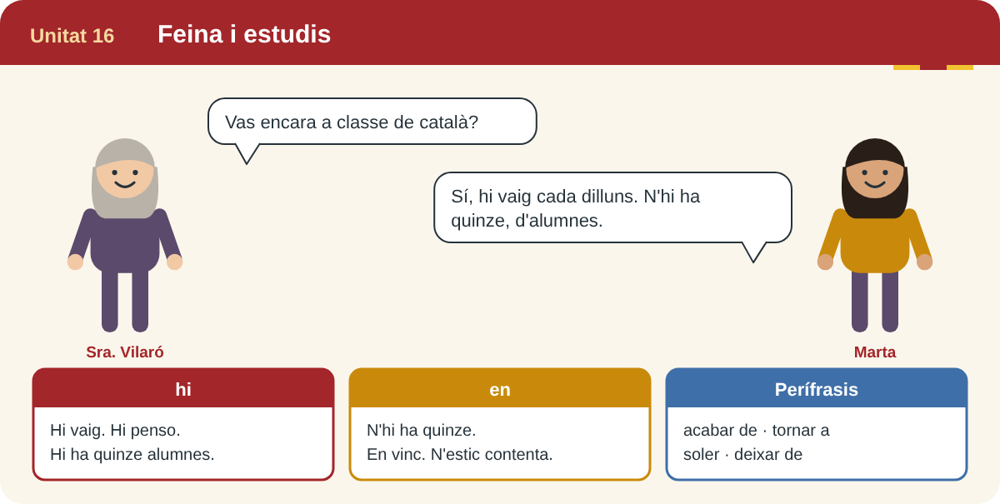
A l'editorial. La senyora Vilaró parla amb la Marta.
Sra. Vilaró: Marta, vas encara a classe de català?
Marta: Sí, hi vaig cada dilluns i dimecres, al Consorci.
Sra. Vilaró: I quants alumnes hi ha?
Marta: N'hi ha quinze, de deu països diferents.
Sra. Vilaró: Molt bé. Escolta, acabo de parlar amb l'autora del llibre de cuina. Necessita una correctora.
Marta: Jo? N'estaria encantada!
Sra. Vilaró: Has pensat en el contracte que et vaig proposar?
Marta: Sí, hi he pensat molt. Vull quedar-me a Barcelona.
Sra. Vilaró: Fantàstic. Ho tornarem a parlar divendres. Ah, i en Pau sol arribar tard: si el veus, digues-li que l'espero.
Marta: Doncs acaba d'arribar ara mateix!
| Català | Castellà |
|---|---|
| la classe | la clase |
| l'alumne, l'alumna | el alumno, la alumna |
| el país (els països) | el país (los países) |
| el corrector, la correctora | el corrector, la correctora |
| el contracte | el contrato |
| proposar | proponer |
| pensar en | pensar en |
| quedar-se | quedarse |
| necessitar | necesitar |
| l'empresa (f.) | la empresa |
| el sou | el sueldo |
| l'horari (m.) | el horario |
| fer vacances | hacer vacaciones |
| la carrera | la carrera (universitaria) |
| aprovar / suspendre | aprobar / suspender |
| l'examen (m.) | el examen |
| acabar de + inf. | acabar de |
| tornar a + inf. | volver a |
| soler + inf. | soler |
| començar a / deixar de | empezar a / dejar de |
| ara mateix | ahora mismo |
1. El pronom hi
| Substitueix | Exemple |
|---|---|
| un lloc (a, en, sobre…) | Vas a classe? — Sí, hi vaig. |
| un complement amb a, en, amb | Has pensat en el contracte? — Sí, hi he pensat. |
| (haver-hi) | Hi ha quinze alumnes. |
2. El pronom en
| Substitueix | Exemple |
|---|---|
| una quantitat o un nom sense article | Quants alumnes hi ha? — N'hi ha quinze. |
| un lloc d'on venim (de) | Vens de l'editorial? — Sí, en vinc. |
| un complement amb de | Parlem del contracte? — Sí, en parlem. · N'estic contenta. |
3. Les perífrasis
| Exemple | |
|---|---|
| acabar de + inf. (acció recent) | Acabo de parlar amb l'autora. |
| tornar a + inf. (repetició) | Ho tornarem a parlar. |
| soler + inf. (costum) | En Pau sol arribar tard. |
| començar a + inf. | He començat a treballar. |
| deixar de + inf. | He deixat de fumar. |
Soler: solc, sols, sol, solem, soleu, solen. També es diu acostumar a: Acostuma a arribar tard.
Les formes d'en i hi. En s'apostrofa davant de vocal: n'hi ha, n'estic segura. Darrere del verb: anar-hi, parlar-ne, vés-hi, agafa'n. Hi sempre s'escriu amb h.
1. Respon amb hi.
a) Vas al gimnàs? (sí) b) Penses en les vacances? (sí, molt) c) Viviu a Gràcia? (sí)
2. Respon amb en.
a) Quants llibres tens? (molts) b) Parleu del viatge? (sí) c) Vens del mercat? (sí) d) Hi ha cafè? (sí, una mica)
3. Completa amb una perífrasi.
a) L'avió aterrar ara mateix. b) Diumenge anar a Girona (una altra vegada). c) La Núria dormir fins a migdia (costum).
1. a) Sí, hi vaig. b) Sí, hi penso molt. c) Sí, hi vivim. 2. a) En tinc molts. b) Sí, en parlem. c) Sí, en vinc. d) Sí, n'hi ha una mica. 3. a) acaba d' b) tornarem a c) sol.
Objectius: expresso desitjos, demano amb cortesia, faig propostes; repasso l'A2. Gramàtica: el condicional (m'agradaria, podries, voldria).
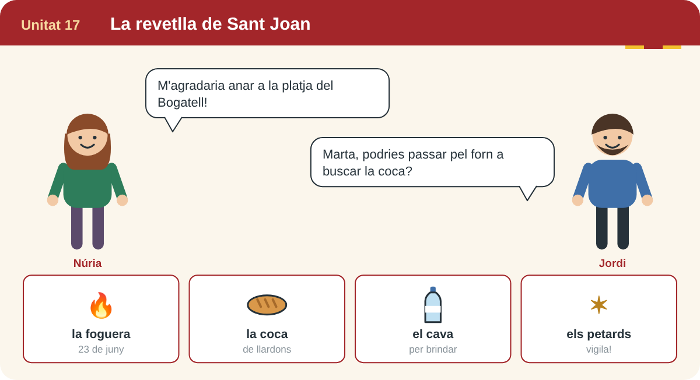
23 de juny, al vespre. Tots tres es preparen per a la revetlla.
Núria: Aquesta nit és la nit més curta de l'any! M'agradaria anar a la platja del Bogatell.
Jordi: I a mi m'agradaria sopar abans a la terrassa. Marta, podries passar pel forn a buscar la coca?
Marta: És clar. Quina coca? N'hi ha moltes!
Jordi: La de llardons, la de fruita confitada… jo en compraria dues.
Marta: I la cava, qui la porta?
Núria: El cava, Marta, és masculí! El portaré jo.
Al forn.
Marta: Bona tarda, senyor Esteve. Voldria dues coques: una de llardons i una de crema.
Esteve: Aquí les tens. Aniràs a la platja?
Marta: Sí, amb els meus companys de pis. Vostè no hi aniria?
Esteve: Jo? Ja soc gran! Jo em quedaria a casa amb la finestra tancada… amb tants petards!
Marta: Doncs bona revetlla!
Esteve: Bona revetlla, maca. Vigila amb els petards!
| Català | Castellà |
|---|---|
| la revetlla | la verbena, la noche de fiesta |
| la nit de Sant Joan | la noche de San Juan |
| la coca | dulce típico plano |
| els llardons | los chicharrones |
| la fruita confitada | la fruta confitada |
| la crema | la crema pastelera |
| el cava | el cava |
| el petard | el petardo |
| la foguera | la hoguera |
| els focs artificials | los fuegos artificiales |
| la terrassa | la terraza |
| curt, curta / llarg, llarga | corto/a / largo/a |
| passar a buscar | pasar a recoger |
| tancat, tancada / obert, oberta | cerrado/a / abierto/a |
| la finestra | la ventana |
| vigilar | tener cuidado, vigilar |
| m'agradaria | me gustaría |
| podries…? | ¿podrías…? |
1. El condicional
Infinitiu + -ia, -ies, -ia, -íem, -íeu, -ien:
parlar · parlaria, parlaries, parlaria, parlaríem, parlaríeu, parlarien
Irregulars: les mateixes arrels que el futur: aniria, faria, tindria, vindria, voldria, podria, sabria, seria, hauria, veuria.
2. Per a què serveix?
| Ús | Exemple |
|---|---|
| desitjos | M'agradaria anar a la platja. |
| peticions amb cortesia | Podries passar pel forn? Voldria dues coques. |
| consells | Jo en compraria dues. |
| hipòtesis | Jo em quedaria a casa. |
3. Repàs de l'A2: els temps del passat
| Temps | Exemple | Quan |
|---|---|---|
| perifràstic | Vaig anar a Girona. | ahir, l'any passat |
| perfet | He anat a Girona. | avui, aquest any, experiència |
| imperfet | Anava a Girona cada estiu. | costums, descripcions |
Accents del condicional. Parlaríem i parlaríeu porten accent (són esdrúixoles), com a l'imperfet perdíem. Les altres formes no en porten: parlaria, parlaries, parlarien.
1. Posa en condicional.
a) (A mi) m'(agradar) viatjar. b) Tu (poder) ajudar-me? c) Nosaltres (anar) a la platja. d) Jo (fer) una festa. e) Vosaltres (voler) venir?
2. Demana amb cortesia: a) Vull un cafè. b) Obre la finestra. c) Em deixes el teu llibre?
3. Repàs. Completa amb el temps adequat.
a) Ahir (sopar, jo) a casa. b) Avui (treballar, nosaltres) molt. c) Quan era petita, (anar, jo) a la platja cada dia. d) Demà (fer, nosaltres) una festa.
1. a) agradaria b) podries c) aniríem d) faria e) voldríeu. 2. a) Voldria un cafè, si us plau. b) Podries obrir la finestra? c) Em podries deixar el teu llibre? 3. a) vaig sopar b) hem treballat c) anava d) farem.
Al final d'aquest nivell sabràs explicar històries amb tots els temps del passat, opinar i donar consells amb el subjuntiu, combinar pronoms, buscar pis, entendre les notícies i escriure cartes formals i informals. A partir d'ara, els apartats Atenció! són en català.
Objectius: explico una història amb ordre i detalls. Gramàtica: el plusquamperfet (havia arribat), els connectors temporals.
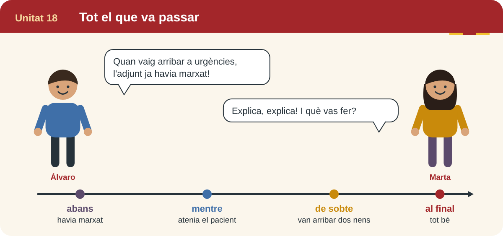
Dissabte. L'Álvaro, un amic de la Marta que fa la residència de medicina a Girona, ha vingut a Barcelona a passar el dia.
Marta: Álvaro! Quina alegria! Com va la residència?
Álvaro: Bé, però dimecres vaig tenir la primera guàrdia sol i va ser una nit de bojos.
Marta: Explica, explica!
Álvaro: Doncs quan vaig arribar a urgències, el metge adjunt ja havia marxat a una altra planta. De sobte va entrar un senyor gran que s'havia caigut a l'escala. Mentre l'atenia, van arribar dos nens amb febre.
Marta: I què vas fer?
Álvaro: Primer vaig mirar el senyor: no s'havia trencat res, per sort. Després vaig atendre els nens. Al final, a les quatre, va tornar l'adjunt i em va dir que ho havia fet molt bé.
Marta: Que bé! I parlaves català amb els pacients?
Álvaro: Ho intentava! Abans de venir, no havia parlat mai català, però el senyor gran em va dir: «Parla, noi, parla, que ja t'entenc!»
| Català | Castellà |
|---|---|
| la residència | la residencia (MIR) |
| la guàrdia | la guardia |
| urgències | urgencias |
| el metge adjunt | el médico adjunto |
| la planta | la planta (de un edificio) |
| caure (caigut) | caer (caído) |
| trencar-se | romperse |
| atendre (atès) | atender (atendido) |
| el pacient, la pacient | el / la paciente |
| intentar | intentar |
| per sort / per desgràcia | por suerte / por desgracia |
| una nit de bojos | una noche de locos |
| primer | primero |
| després / més tard | después / más tarde |
| mentre | mientras |
| de sobte | de repente |
| al final / finalment | al final / finalmente |
| abans de / després de | antes de / después de |
| quina alegria! | ¡qué alegría! |
1. El plusquamperfet
haver (imperfet) + participi:
jo havia · tu havies · ell, ella, vostè havia · nosaltres havíem · vosaltres havíeu · ells, elles, vostès havien
Expressa una acció anterior a una altra del passat: Quan vaig arribar, l'adjunt ja havia marxat.
2. Narrar amb tots els passats
| Temps | Funció | Exemple |
|---|---|---|
| perifràstic | fets que fan avançar la història | Va entrar un senyor. |
| imperfet | descripció, fons, accions en curs | Mentre l'atenia, van arribar dos nens. |
| plusquamperfet | fets anteriors | El senyor s'havia caigut. |
3. Els connectors temporals
primer → després → més tard → al final · de sobte (un fet inesperat) · mentre (simultaneïtat) · abans de / després de + infinitiu: Abans de venir, no havia parlat mai català.
La dièresi. La dièresi (¨) indica que la i o la u no formen diftong: veïna, raïm, països, caïguda. També fa sonar la u després de g i q: pingüí, qüestió, aigüera. Fixa't: caigut no en porta (la u forma diftong), però caïguda sí.
1. Posa en plusquamperfet.
a) Quan vam arribar, la pel·lícula ja (començar) . b) No (estar, jo) mai a Girona. c) Ells ja (sopar) quan vaig trucar.
2. Imperfet, perifràstic o plusquamperfet?
Ahir (ser) un dia estrany. Mentre (esmorzar, jo) , (sonar) el telèfon. Era la Núria: (perdre) les claus la nit abans.
3. Explica una anècdota amb els connectors primer, de sobte, mentre, al final.
1. a) havia començat b) havia estat c) havien sopat. 2. va ser, esmorzava, va sonar, havia perdut. 3. Resposta lliure.
Objectius: dono la meva opinió, hi estic d'acord o no. Gramàtica: el present de subjuntiu, crec que / no crec que.
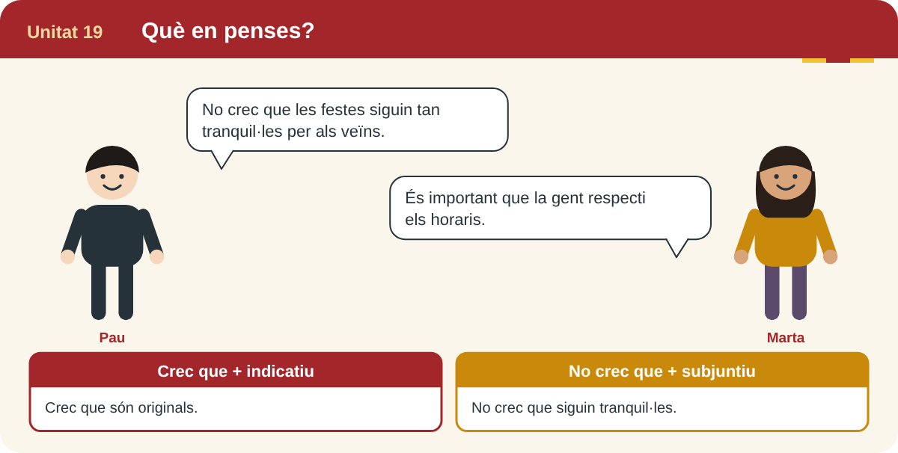
Agost. Són les Festes de Gràcia i els carrers estan guarnits. La Marta i en Pau prenen un cafè a la plaça.
Pau: Què et semblen les festes?
Marta: M'encanten! Crec que són les festes més originals de Barcelona. Els veïns guarneixen els carrers durant mesos!
Pau: Sí, però no crec que siguin tan tranquil·les per als veïns. Hi ha soroll fins a les tres de la matinada.
Marta: És veritat. És important que la gent respecti els horaris.
Pau: I que no vingui tanta gent de fora només a fer festa.
Marta: Home, no hi estic gaire d'acord. Les festes són per a tothom!
Pau: No dic que no vinguin. Dic que és necessari que hi hagi un equilibri.
Marta: Això sí. Potser l'ajuntament hauria de controlar més el soroll.
Pau: Exacte. Bé, i ara, anem a veure quin carrer ha guanyat el premi?
| Català | Castellà |
|---|---|
| què et sembla? | ¿qué te parece? |
| la festa major | las fiestas mayores |
| guarnir (guarneixen) | adornar, engalanar |
| el veí, la veïna | el vecino, la vecina |
| el soroll | el ruido |
| la matinada | la madrugada |
| respectar | respetar |
| estar d'acord (amb) | estar de acuerdo (con) |
| no gaire | no mucho |
| és veritat | es verdad |
| l'equilibri (m.) | el equilibrio |
| l'ajuntament (m.) | el ayuntamiento |
| controlar | controlar |
| guanyar / el premi | ganar / el premio |
| potser | quizás |
| crec que / em sembla que | creo que / me parece que |
| segons la meva opinió | en mi opinión |
| home! / dona! | ¡hombre! / ¡mujer! (interjección) |
1. El present de subjuntiu
| parlar | perdre | dormir | llegir | |
|---|---|---|---|---|
| jo | parli | perdi | dormi | llegeixi |
| tu | parlis | perdis | dormis | llegeixis |
| ell, ella, vostè | parli | perdi | dormi | llegeixi |
| nosaltres | parlem | perdem | dormim | llegim |
| vosaltres | parleu | perdeu | dormiu | llegiu |
| ells, elles, vostès | parlin | perdin | dormin | llegeixin |
Irregulars: ser → sigui · estar → estigui · tenir → tingui · fer → faci · anar → vagi · venir → vingui · poder → pugui · voler → vulgui · saber → sàpiga · dir → digui · veure → vegi · haver-hi → hi hagi.
2. Opinió: indicatiu o subjuntiu?
| Indicatiu | Subjuntiu |
|---|---|
| Crec que són originals. | No crec que siguin tranquil·les. |
| Em sembla que té raó. | No em sembla que tingui raó. |
| És veritat que hi ha soroll. | És important que la gent respecti els horaris. |
Amb és important / necessari / millor que…, sempre subjuntiu.
3. Estar d'acord
Hi estic d'acord. No hi estic gens d'acord. Estic d'acord amb tu.
Les formes en -gui. Molts subjuntius irregulars acaben en -gui: tingui, vingui, pugui, vulgui, digui. La u no sona: és com la gui castellana de guiso.
1. Escriu el present de subjuntiu.
a) (ser, ells) b) (tenir, tu) c) (fer, nosaltres) d) (venir, ella) e) (poder, jo)
2. Indicatiu o subjuntiu?
a) Crec que la festa (ser) divertida. b) No crec que (venir) ningú. c) És important que tothom (respectar) els veïns. d) Em sembla que (tenir, tu) raó.
3. Dona la teva opinió sobre el turisme a la teva ciutat (cinc frases).
1. a) siguin b) tinguis c) fem d) vingui e) pugui. 2. a) és b) vingui c) respecti d) tens. 3. Resposta lliure.
Objectius: dono consells, expresso desitjos, prohibeixo. Gramàtica: el subjuntiu amb consells i desitjos, l'imperatiu negatiu, el tractament de vós.
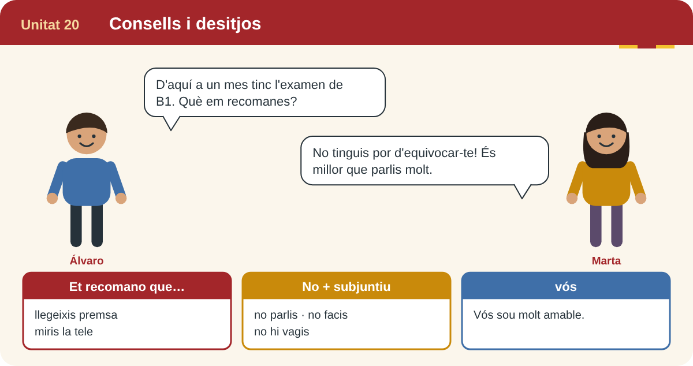
L'Álvaro es presentarà a l'examen de nivell elemental de català. Truca a la Marta.
Álvaro: Marta, d'aquí a un mes tinc l'examen de B1. Què em recomanes?
Marta: Et recomano que llegeixis cada dia una mica de premsa en català i que miris la tele amb subtítols.
Álvaro: I l'expressió oral? Em fa molta vergonya.
Marta: No tinguis por d'equivocar-te! És millor que parlis molt, encara que cometis errors.
Álvaro: I l'escrit?
Marta: No escriguis frases massa llargues. I no oblidis els pronoms en i hi: els examinadors s'hi fixen molt.
Álvaro: D'acord. Una última cosa: al CAP, una senyora molt gran em va dir «Vós sou molt amable». Què vol dir, vós?
Marta: És un tractament de respecte, més antic que vostè. Va amb el verb en segona persona del plural, però amb l'adjectiu en singular.
Álvaro: Que curiós! Bé, desitja'm sort!
Marta: Que vagi molt bé! Ja veuràs que aprovaràs.
| Català | Castellà |
|---|---|
| d'aquí a un mes | dentro de un mes |
| recomanar | recomendar |
| la premsa | la prensa |
| els subtítols | los subtítulos |
| l'expressió oral / escrita | la expresión oral / escrita |
| fer vergonya | dar vergüenza |
| equivocar-se | equivocarse |
| cometre (un error) | cometer (un error) |
| l'error (m.) | el error |
| oblidar | olvidar |
| fixar-se en | fijarse en |
| l'examinador, l'examinadora | el examinador, la examinadora |
| el tractament | el tratamiento |
| amable | amable |
| desitjar | desear |
| la sort | la suerte |
| que vagi bé! | ¡que vaya bien! |
| encara que | aunque |
| massa | demasiado |
1. Consells i desitjos + subjuntiu
| Exemple | |
|---|---|
| et recomano que + subj. | Et recomano que llegeixis premsa. |
| és millor que + subj. | És millor que parlis molt. |
| vull / espero que + subj. | Espero que aprovis. |
| que + subj. (desitjos) | Que vagi bé! Que et milloris! |
Si el subjecte és el mateix, infinitiu: Vull aprovar (jo), però Vull que aprovis (tu).
2. L'imperatiu negatiu
L'imperatiu negatiu es fa amb no + subjuntiu:
| Afirmatiu | Negatiu |
|---|---|
| parla | no parlis |
| escriu | no escriguis |
| oblida | no oblidis |
| tingues | no tinguis |
| vés | no vagis |
| fes | no facis |
Amb pronoms: digues-ho → no ho diguis; fes-ho → no ho facis.
3. El tractament de vós
Vós és un tractament de respecte, sobretot escrit (cartes, administració) i de persones grans. El verb va en 2a persona del plural, l'adjectiu en singular: Vós sou molt amable. Teniu raó, senyora.
Escriure → escrigui. Alguns verbs fan el subjuntiu en -gui: escriure → escrigui, beure → begui, viure → visqui, conèixer → conegui, prendre → prengui. Atenció a visqui: Visca el Barça! és un desig en subjuntiu.
1. Passa a l'imperatiu negatiu.
a) Parla. b) Escriu frases llargues. c) Fes-ho. d) Vés-hi. e) Oblida els pronoms.
2. Completa amb el subjuntiu.
a) Et recomano que (llegir) més. b) És millor que (venir, vosaltres) d'hora. c) Espero que (aprovar, tu) . d) Que (anar) bé!
3. Escriu cinc consells per aprendre català.
1. a) No parlis. b) No escriguis frases llargues. c) No ho facis. d) No hi vagis. e) No oblidis els pronoms. 2. a) llegeixis b) vingueu c) aprovis d) vagi. 3. Resposta lliure.
Objectius: parlo de canvis i de viatges, faig servir dos pronoms junts. Gramàtica: les combinacions de pronoms (l'hi, n'hi, me'n, te la), els verbs pronominals (anar-se'n, adonar-se, emportar-se).
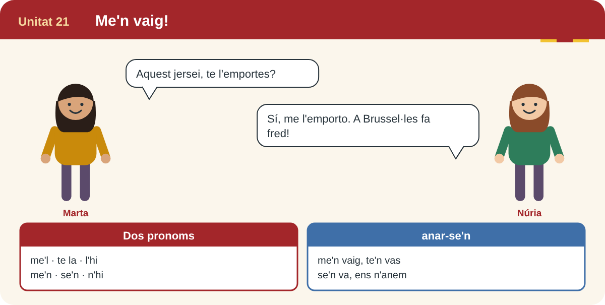
La Núria se'n va tres mesos a Brussel·les per fer un reportatge sobre la Unió Europea. Fa la maleta.
Núria: Me'n vaig demà a les set i encara no he fet la maleta!
Marta: T'ajudo. Aquest jersei, te l'emportes?
Núria: Sí, me l'emporto. A Brussel·les fa fred.
Marta: I el carregador del mòbil?
Núria: Ostres, me n'havia oblidat! Me'l dones?
Marta: Té. I el llibre que et va regalar en Jordi per Sant Jordi?
Núria: També me l'enduc. Per cert, a en Jordi li vols tornar el paraigua?
Marta: Ja l'hi he tornat. M'ho va demanar ahir.
Núria: Perfecte. Ai, ara m'adono que no tinc euros en efectiu…
Marta: Quants te'n calen? Te'n puc deixar cinquanta.
Núria: Gràcies, ets un sol. Te'ls tornaré quan torni, eh!
Marta: No pateixis. Aniràs a l'aeroport amb taxi?
Núria: No, en Jordi m'hi porta en cotxe.
| Català | Castellà |
|---|---|
| anar-se'n (me'n vaig) | irse (me voy) |
| fer la maleta | hacer la maleta |
| emportar-se / endur-se | llevarse |
| el jersei | el jersey |
| el carregador | el cargador |
| oblidar-se de | olvidarse de |
| tornar (una cosa) | devolver (algo) |
| el paraigua | el paraguas |
| demanar | pedir |
| adonar-se de | darse cuenta de |
| en efectiu | en efectivo |
| caldre (et calen?) | hacer falta (¿te hacen falta?) |
| deixar | prestar, dejar |
| ets un sol! | ¡eres un sol! |
| patir | sufrir, preocuparse |
| no pateixis | no te preocupes |
| l'aeroport (m.) | el aeropuerto |
| la Unió Europea | la Unión Europea |
1. Combinacions de dos pronoms
L'ordre és: indirecte + directe o pronom + en / hi.
| el | la | els | les | ho | en | |
|---|---|---|---|---|---|---|
| em | me'l | me la | me'ls | me les | m'ho | me'n |
| et | te'l | te la | te'ls | te les | t'ho | te'n |
| li | l'hi | la hi | els hi | les hi | li ho | li'n |
| ens | ens el | ens la | ens els | ens les | ens ho | ens en |
| us | us el | us la | us els | us les | us ho | us en |
| els | els el | els la | els els | els les | els ho | els en |
Li he tornat el paraigua → L'hi he tornat. · Li he tornat la clau → La hi he tornada (també s'accepta l'hi). · M'he oblidat del carregador → Me n'he oblidat.
2. Verbs pronominals amb en
| Infinitiu | Present |
|---|---|
| anar-se'n (irse) | me'n vaig, te'n vas, se'n va, ens n'anem, us n'aneu, se'n van |
| adonar-se (darse cuenta) | m'adono, t'adones, s'adona… |
| emportar-se (llevarse) | me l'emporto, te l'emportes… |
3. Darrere del verb
Dona-me'l. Emporta-te'l. Vés-te'n! (amb imperatiu i infinitiu)
L'apòstrof i el guionet. Davant del verb: apòstrof (me'n vaig, l'hi dono). Darrere del verb: guionet i apòstrof (dona-me'l, anar-se'n). Quan el verb acaba en vocal: porta'l, agafa'n.
1. Substitueix pels pronoms.
a) Dono el llibre a la Núria. b) Et porto les claus. c) Li explico la història. d) M'he oblidat del paraigua.
2. Conjuga anar-se'n en present.
3. Posa els pronoms darrere: a) Me'l dones? → Dona-! b) Te'n vas? → Vés-! c) Li ho dius → Digues-!
1. a) L'hi dono. b) Te les porto. c) Li ho explico. d) Me n'he oblidat. 2. me'n vaig, te'n vas, se'n va, ens n'anem, us n'aneu, se'n van. 3. a) Dona-me'l! b) Vés-te'n! c) Digues-li-ho!
Objectius: descric persones, identifico qui és qui. Gramàtica: els relatius que, què, qui, on; la descripció física i de caràcter.
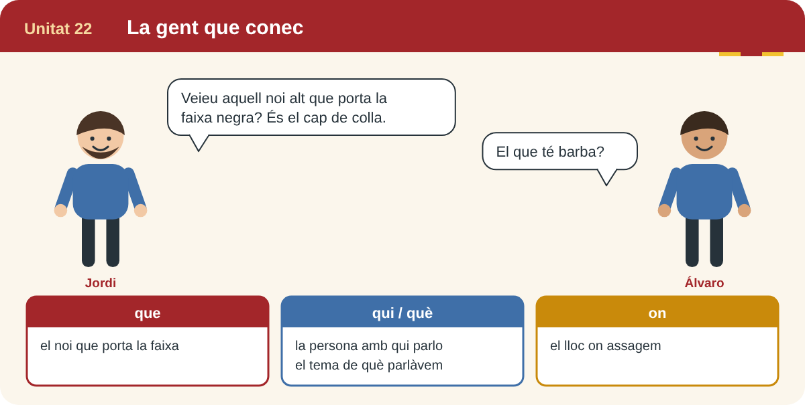
Diumenge, a l'assaig obert dels Castellers de la Vila de Gràcia. En Jordi presenta la colla a l'Álvaro i la Marta.
Jordi: Veieu aquell noi alt que porta la faixa negra? És en Martí, el cap de colla.
Álvaro: El que té barba?
Jordi: Exacte. És la persona amb qui parlo més. I la noia que riu tant és l'Anna, la nostra enxaneta… bé, l'Anna és la mare de l'enxaneta!
Marta: I aquell senyor de cabells blancs?
Jordi: És en Ramon, que fa quaranta anys que és a la colla. És l'home de qui tothom aprèn.
Álvaro: I el lloc on assageu és sempre aquest?
Jordi: No, a l'hivern assagem en un local que ens deixa l'ajuntament. Ah, i aquesta és la faixa que em vas preguntar l'altre dia, Marta.
Marta: La que és tan llarga?
Jordi: La mateixa. Protegeix l'esquena i serveix perquè els altres hi posin el peu quan pugen.
Álvaro: Sou tots molt valents. Jo soc una persona més aviat tímida…
Jordi: Doncs vine a la pinya! És la base del castell, i és on es necessita més gent.
| Català | Castellà |
|---|---|
| l'assaig (m.) | el ensayo |
| la colla | el grupo (de castellers, amigos) |
| el cap de colla | el jefe del grupo casteller |
| la faixa | la faja |
| la pinya | la base del castell |
| la barba / el bigoti | la barba / el bigote |
| els cabells | el pelo (de la cabeza) |
| ros, rossa / moreno, morena | rubio/a / moreno/a |
| arrissat, arrissada / llis, llisa | rizado/a / liso/a |
| prim, prima / gras, grassa | delgado/a / gordo/a |
| riure | reír |
| tímid, tímida | tímido/a |
| valent, valenta | valiente |
| xerraire | hablador/a |
| treballador, treballadora | trabajador/a |
| protegir | proteger |
| més aviat | más bien |
| el mateix, la mateixa | el mismo, la misma |
1. Els relatius
| Relatiu | Ús | Exemple |
|---|---|---|
| que | subjecte o complement directe | el noi que porta la faixa |
| qui | persones, darrere de preposició | la persona amb qui parlo |
| què | coses, darrere de preposició | el tema de què parlàvem |
| on | lloc | el lloc on assagem |
2. Fa + temps + que
Fa quaranta anys que és a la colla = Hace cuarenta años que está en el grupo.
3. Descriure persones
Té els cabells blancs. Porta ulleres. És alt i prim. És més aviat tímida.
Els cabells i el pèl. Els cabells són els del cap; el pèl és el de la resta del cos (i dels animals). Pèl porta accent diacrític (≠ pel, contracció de per + el).
1. Que, qui, què o on?
a) La noia riu és l'Anna. b) El local assagem és petit. c) És l'home de tothom aprèn. d) El llibre de et vaig parlar. e) La faixa porta és negra.
2. Corregeix: a) No entenc lo que dius. b) La noia que parlo amb ella és simpàtica.
3. Descriu una persona que coneixes bé.
1. a) que b) on c) qui d) què e) que. 2. a) No entenc el que dius. b) La noia amb qui parlo és simpàtica. 3. Resposta lliure.
Objectius: entenc anuncis de pisos, pregunto condicions de lloguer. Gramàtica: la passiva pronominal (es lloga, es lloguen) i les frases impersonals (es pot, s'ha de, es diu que).
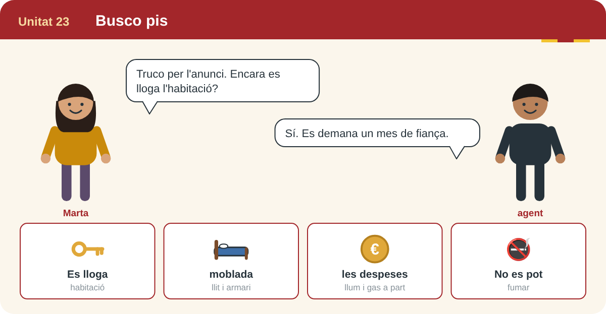
L'Álvaro farà una rotació de tres mesos a l'Hospital Clínic i busca una habitació. La Marta l'ajuda a trucar a una immobiliària.
Agent: Immobiliària Sants, bon dia!
Marta: Bon dia. Truco per l'anunci de l'habitació del carrer de Sants. Encara es lloga?
Agent: Sí, encara és lliure. És una habitació exterior en un pis de tres habitacions, a prop del metro.
Marta: Es pot llogar només per tres mesos?
Agent: Sí, es fan contractes de temporada. Es demana un mes de fiança i un mes per avançat.
Marta: I les despeses, s'han de pagar a part?
Agent: La llum i el gas es paguen a part; l'aigua i internet ja hi són inclosos.
Marta: Està moblada?
Agent: Sí, té llit, armari i escriptori. Ah, i al pis no es pot fumar ni es permeten animals.
Marta: D'acord. Es pot visitar aquesta setmana?
Agent: Dijous a les sis, si li va bé.
Marta: Perfecte. Es diu Álvaro Gil, és qui hi viurà.
| Català | Castellà |
|---|---|
| llogar | alquilar |
| el lloguer | el alquiler |
| l'anunci (m.) | el anuncio |
| la immobiliària | la inmobiliaria |
| l'agent (m. i f.) | el / la agente |
| l'habitació (f.) | la habitación |
| lliure / ocupat, ocupada | libre / ocupado/a |
| exterior / interior | exterior / interior |
| el contracte de temporada | el contrato de temporada |
| la fiança | la fianza |
| per avançat | por adelantado |
| les despeses | los gastos |
| la llum / el gas / l'aigua | la luz / el gas / el agua |
| inclòs, inclosa | incluido/a |
| moblat, moblada | amueblado/a |
| l'armari (m.) / l'escriptori (m.) | el armario / el escritorio |
| el propietari, la propietària | el propietario, la propietaria |
| l'ascensor (m.) | el ascensor |
| la calefacció | la calefacción |
| lluminós, lluminosa | luminoso/a |
1. La passiva pronominal
es + verb en 3a persona, que concorda amb el nom:
| Singular | Plural |
|---|---|
| Es lloga una habitació. | Es lloguen pisos. |
| Es paga la llum a part. | Es paguen les despeses a part. |
| Es ven un cotxe. | Es venen cotxes. |
2. Les frases impersonals
| Exemple | |
|---|---|
| es pot / no es pot + inf. | Es pot visitar? No es pot fumar. |
| s'ha de + inf. | S'ha de pagar per avançat. |
| es diu que, es creu que | Es diu que els lloguers pujaran. |
| hom (molt formal) | Hom diu que… |
3. Es diu amb dos significats
Es diu Álvaro (se llama) · Es diu que pujaran els preus (se dice).
Llogar i lloguen. Els verbs en -gar canvien la g en gu davant de e, i: llogar → lloguen, pagar → pagui. Els verbs en -car fan qu: buscar → busquen. I els verbs en -çar, c: començar → comencen.
1. Passiva pronominal: a) (llogar) pis a Gràcia. b) (vendre) bicicletes. c) (necessitar) cambrer. d) (buscar) habitacions per a estudiants.
2. Transforma amb es pot / no es pot / s'ha de.
a) Està prohibit fumar. b) És obligatori pagar la fiança. c) És possible visitar el pis dijous.
3. Escriu l'anunci del pis on vius.
1. a) Es lloga b) Es venen c) Es necessita d) Es busquen. 2. a) No es pot fumar. b) S'ha de pagar la fiança. c) Es pot visitar el pis dijous. 3. Resposta lliure.
Objectius: explico què diuen altres persones, parlo de les festes de setembre. Gramàtica: l'estil indirecte (diu que…, pregunta si…, diu que vagis).
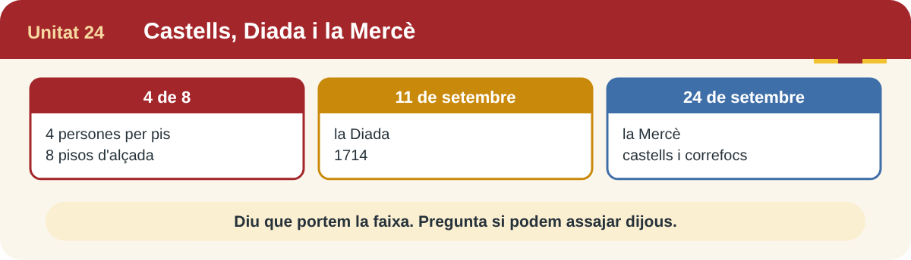
Setembre. En Jordi llegeix un missatge del grup de la colla.
Jordi: Escolteu: en Martí diu que per la Mercè fem un quatre de vuit a la plaça de Sant Jaume!
Marta: Un quatre de vuit? Què vol dir?
Jordi: Quatre persones a cada pis i vuit pisos d'alçada. També pregunta si podem anar a assajar dijous i dissabte.
Álvaro: I què més diu?
Jordi: Diu que portem la camisa i la faixa, i que no arribem tard, que hi haurà molta gent.
Marta: I la Diada? L'onze de setembre també hi actueu?
Jordi: Aquest any no. Per la Diada sortim al carrer amb la família.
Álvaro: Perdona la pregunta, però què es commemora l'onze de setembre?
Jordi: La caiguda de Barcelona el 1714, al final de la Guerra de Successió. Ara és la festa nacional de Catalunya.
Marta: I la Mercè?
Jordi: És la festa major de Barcelona, el 24 de setembre: castells, gegants, correfocs… La meva mare sempre diu que no hi vagi amb roba bona al correfoc!
| Català | Castellà |
|---|---|
| el missatge | el mensaje |
| el grup | el grupo |
| el pis (d'un castell) | el piso, el nivel |
| l'alçada (f.) | la altura |
| actuar | actuar |
| la Diada | la fiesta nacional de Cataluña (11-S) |
| commemorar | conmemorar |
| la caiguda | la caída |
| la Guerra de Successió | la Guerra de Sucesión |
| la festa nacional | la fiesta nacional |
| la Mercè | fiesta mayor de Barcelona |
| els gegants / els capgrossos | los gigantes / los cabezudos |
| el correfoc | el correfuegos |
| els diables | los diablos (del correfoc) |
| la roba bona | la ropa buena |
| escoltar | escuchar |
| què vol dir? | ¿qué significa? |
1. L'estil indirecte (present)
| Estil directe | Estil indirecte |
|---|---|
| «Fem un quatre de vuit.» | Diu que fem un quatre de vuit. |
| «Podeu venir dijous?» | Pregunta si podem anar dijous. |
| «On assagem?» | Pregunta on assagem. |
| «Porteu la faixa!» | Diu que portem la faixa. (imperatiu → subjuntiu) |
| «No hi vagis!» | Diu que no hi vagi. |
2. Canvis de persona i de lloc
venir → anar, aquí → allà, nosaltres → ells: «Veniu aquí» → Diu que hi anem.
3. La notació dels castells
Un quatre de vuit: quatre persones per pis, vuit pisos. Un tres de nou amb folre: tres per pis, nou pisos, amb una segona pinya a sobre de la primera. Carregar és coronar-lo; descarregar, desmuntar-lo sense caure.
Les dates. Escrivim l'11 de setembre o l'onze de setembre (apostrofat, perquè onze comença per vocal); el 24 de setembre. Els mesos i els dies van en minúscula: setembre, dilluns. Les festes, en majúscula: la Diada, la Mercè, Sant Jordi.
1. Passa a l'estil indirecte (Diu que… / Pregunta si…).
a) «Assagem dijous.» b) «Vindràs a la Mercè?» c) «Porteu la camisa!» d) «On és la plaça?» e) «No arribis tard!»
2. Explica què és un cinc de vuit.
3. Explica una festa de la teva ciutat.
1. a) Diu que assagem dijous. b) Pregunta si vindré a la Mercè. c) Diu que portem la camisa. d) Pregunta on és la plaça. e) Diu que no arribi tard. 2. Un castell de cinc persones per pis i vuit pisos d'alçada. 3. Resposta lliure.
Objectius: parlo del temps, faig plans amb condicions. Gramàtica: les oracions condicionals reals (si + present), en cas que + subjuntiu.
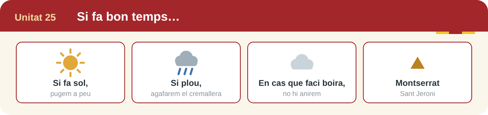
Divendres. La Marta, l'Álvaro i en Pau planegen una excursió a Montserrat.
Pau: Si fa bon temps, demà pugem a Montserrat a peu des de Monistrol.
Álvaro: I si plou?
Pau: Si plou, agafarem el cremallera fins al monestir.
Marta: Què diu la previsió?
Pau: Que al matí farà sol, però a la tarda pot haver-hi tempesta a la muntanya.
Álvaro: Doncs si sortim d'hora, tornarem abans de la pluja.
Marta: Jo vull veure la Moreneta i sentir l'Escolania.
Pau: L'Escolania canta els dies feiners al migdia. Demà és dissabte: no crec que la sentim.
Marta: Llàstima. I el cim de Sant Jeroni?
Pau: Si tenim forces, hi pugem: fa més de mil dos-cents metres. En cas que faci boira, no hi anirem.
Álvaro: I si us canseu, us espero al bar del monestir!
| Català | Castellà |
|---|---|
| el temps | el tiempo (meteorológico y cronológico) |
| fer bon temps / mal temps | hacer buen / mal tiempo |
| fer sol / fer vent | hacer sol / hacer viento |
| ploure (plou) | llover (llueve) |
| nevar (neva) | nevar (nieva) |
| la pluja / la neu | la lluvia / la nieve |
| el núvol / ennuvolat | la nube / nublado |
| la tempesta | la tormenta |
| el llamp / el tro | el rayo / el trueno |
| la previsió | la previsión, el pronóstico |
| l'excursió (f.) | la excursión |
| a peu | a pie |
| el cremallera | el tren cremallera |
| el monestir | el monasterio |
| la Moreneta | la Virgen de Montserrat |
| l'Escolania (f.) | el coro de niños de Montserrat |
| el cim | la cima |
| tenir forces | tener fuerzas |
| cansar-se | cansarse |
| llàstima! | ¡qué pena! |
1. Condicionals reals
si + present → present, futur o imperatiu:
| Condició | Conseqüència |
|---|---|
| Si fa bon temps, | pugem a peu. |
| Si plou, | agafarem el cremallera. |
| Si et canses, | avisa'm. |
Després de si no posem mai futur: ✗ si plourà → ✓ si plou.
2. En cas que + subjuntiu
En cas que faci boira, no hi anirem. (= si fa boira, però més formal).
3. Si no i sinó
Temps. Temps serveix per al tiempo meteorològic i el cronològic: Quin temps fa? No tinc temps. La p no es pronuncia: tems.
1. Completa les condicionals.
a) Si (fer) sol, anirem a la platja. b) Si (ploure) , ens quedarem a casa. c) Si (tenir, tu) temps, truca'm. d) Si no (arribar, ells) a temps, perdran el tren.
2. Si no o sinó?
a) No vull te, cafè. b) fas res, no aprendràs. c) No és el Pau, en Jordi.
3. Explica què faràs aquest cap de setmana segons el temps.
1. a) fa b) plou c) tens d) arriben. 2. a) sinó b) Si no c) sinó. 3. Resposta lliure.
Objectius: entenc una notícia de ràdio, en faig un resum, faig hipòtesis. Gramàtica: els connectors (a més, en canvi, per tant, ja que, és a dir), deure + infinitiu (probabilitat).
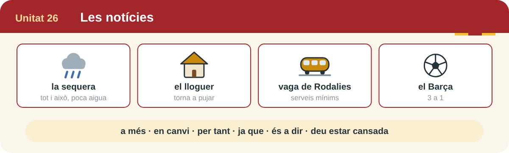
La Núria ha tornat de Brussel·les i torna a presentar el butlletí del matí. A la cuina, la Marta i en Jordi l'escolten.
«Bon dia, són les vuit. Comencem amb el temps: després de mesos de sequera, aquesta nit ha plogut a gran part de Catalunya. Tot i això, els embassaments continuen per sota de la meitat de la seva capacitat i, per tant, les restriccions d'aigua es mantenen.
En l'àmbit econòmic, el preu del lloguer a Barcelona ha tornat a pujar. Els joves, a més, tenen cada vegada més dificultats per emancipar-se. L'ajuntament, en canvi, assegura que les noves mesures donaran resultats aviat.
Pel que fa a la mobilitat, avui hi ha vaga de Rodalies, és a dir, dels trens de proximitat. Ja que els serveis mínims són del cinquanta per cent, es recomana agafar el metro o l'autobús.
I acabem amb esports: el Barça va guanyar ahir a la nit per tres gols a un.»
Jordi: La Núria deu estar cansada: ha tornat a les dues de la nit i ja és a la ràdio.
Marta: Deu haver dormit quatre hores!
| Català | Castellà |
|---|---|
| el butlletí (de notícies) | el boletín (de noticias) |
| la sequera | la sequía |
| l'embassament (m.) | el embalse |
| la capacitat | la capacidad |
| la restricció | la restricción |
| mantenir-se | mantenerse |
| l'àmbit (m.) | el ámbito |
| emancipar-se | independizarse |
| la mesura | la medida |
| la mobilitat | la movilidad |
| la vaga | la huelga |
| els serveis mínims | los servicios mínimos |
| Rodalies | los trenes de cercanías |
| el gol / guanyar / perdre / empatar | el gol / ganar / perder / empatar |
| a més | además |
| en canvi | en cambio |
| per tant | por lo tanto |
| tot i això | aun así |
| ja que | ya que |
| és a dir | es decir |
| pel que fa a | en cuanto a |
1. Els connectors
| Funció | Connectors |
|---|---|
| afegir | a més, també, i |
| oposar | però, en canvi, tot i això, no obstant això |
| conseqüència | per tant, així doncs, per això |
| causa | perquè, ja que, com que |
| explicar | és a dir, o sigui |
| canviar de tema | pel que fa a, quant a |
Com que va a principi de frase: Com que plou, no sortim.
2. Deure + infinitiu: probabilitat
| Present | Passat |
|---|---|
| Deu estar cansada. (debe de estar) | Deu haver dormit poc. (debe de haber dormido) |
Deure: dec, deus, deu, devem, deveu, deuen. Per a l'obligació, millor haver de: He d'anar a treballar.
Les sigles i els números. Els percentatges s'escriuen el 50 % (amb espai) o el cinquanta per cent. Els milers porten punt: 1.200; els decimals, coma: 3,5.
1. Tria el connector: tot i això, en canvi, ja que, a més.
a) Ha plogut; , les restriccions continuen. b) El pis és car; , és molt petit. c) No vindré, estic malalta. d) A Lleida fa fred; a Barcelona, , fa bo.
2. Expressa probabilitat amb deure.
a) Probablement són les deu. b) Probablement ha sortit. c) Probablement està dormint.
3. Escriu una notícia curta sobre la teva ciutat amb tres connectors.
1. a) tot i això b) a més c) ja que d) en canvi. 2. a) Deuen ser les deu. b) Deu haver sortit. c) Deu estar dormint. 3. Resposta lliure.
Objectius: parlo de la cuina catalana, entenc i explico una recepta. Gramàtica: les instruccions (imperatiu i infinitiu), per i per a.
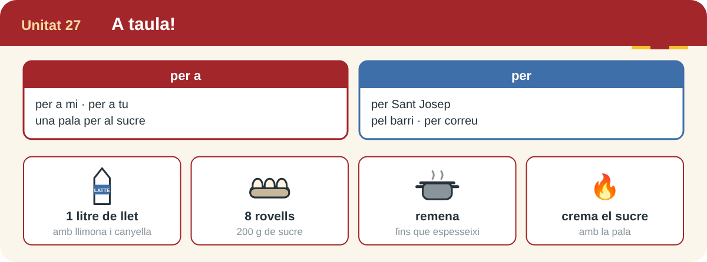
19 de març, Sant Josep. La senyora Vilaró ha convidat l'equip de l'editorial a casa seva.
Sra. Vilaró: Avui és Sant Josep, i per Sant Josep es fa crema catalana. Marta, m'ajudes?
Marta: I tant! Què he de fer?
Sra. Vilaró: Primer, posa a bullir un litre de llet amb la pell d'una llimona i una branca de canyella.
Marta: Ja està. I ara?
Sra. Vilaró: En aquest bol, barreja vuit rovells d'ou amb dos-cents grams de sucre i dues cullerades de midó.
Marta: Tiro la llet calenta a sobre?
Sra. Vilaró: Poc a poc, i remena sense parar perquè no es facin grumolls. Després ho tornes al foc fins que s'espesseixi.
Marta: Ja és espessa!
Sra. Vilaró: Molt bé. Reparteix-la a les cassoletes i deixa-la refredar. Abans de servir-la, hi escampem sucre i el cremem amb aquesta pala de ferro.
Pau: Per a mi, la part de dalt cremada és el millor!
Sra. Vilaró: Doncs per això la fem: per a llepar-se'n els dits!
| Català | Castellà |
|---|---|
| la recepta | la receta |
| bullir | hervir |
| la pell (de llimona) | la piel (de limón) |
| la llimona | el limón |
| la canyella | la canela |
| barrejar | mezclar |
| el rovell / la clara | la yema / la clara |
| el sucre / la sal | el azúcar / la sal |
| el midó | la maicena, el almidón |
| la cullerada | la cucharada |
| remenar | remover |
| el grumoll | el grumo |
| espessir-se | espesarse |
| refredar | enfriar |
| la cassoleta | la cazuelita |
| escampar | esparcir |
| cremar | quemar |
| tallar / pelar | cortar / pelar |
| fregir / coure / rostir | freír / cocer / asar |
| l'oli (m.) | el aceite |
| i tant! | ¡claro que sí! |
| llepar-se'n els dits | chuparse los dedos |
1. Les instruccions
| Imperatiu (oral, conversa) | Infinitiu (receptes escrites, cartells) |
|---|---|
| Posa a bullir la llet. | Posar a bullir la llet. |
| Barreja els rovells. | Barrejar els rovells. |
| Remena sense parar. | Remenar sense parar. |
2. Per i per a
| per a | per |
|---|---|
| destinatari: un pastís per a la Marta | causa: Ho fem per Sant Josep. Ho fa per amor. |
| finalitat amb nom: una pala per al sucre | lloc de pas: Passeggem pel barri. |
| opinió: Per a mi, és el millor. | mitjà: T'ho envio per correu. |
| termini: Ho tindré per a dilluns. | temps aproximat: Per Nadal, cada ovella al seu corral. |
Davant d'un infinitiu, amb valor de finalitat, la normativa actual admet per i per a: Ho fem per (a) menjar-ho.
3. Els quantitatius
un litre de llet, dos-cents grams de sucre, dues cullerades de midó, una mica de sal, un raig d'oli.
La ç. Escrivim ç davant de a, o, u i a final de paraula: caça, alçada, començo, braç. Davant de e, i, escrivim c: comencem, bracet.
1. Passa la recepta a infinitiu: a) Talla la ceba. b) Fregeix-la amb oli. c) Afegeix la sal. d) Remena-ho.
2. Per o per a?
a) Aquest regal és tu. b) Passem la plaça. c) mi, la crema és el millor. d) Ho fem Sant Josep. e) Ho necessito demà.
3. Explica una recepta del teu país.
1. a) Tallar la ceba. b) Fregir-la amb oli. c) Afegir la sal. d) Remenar-ho. 2. a) per a b) per c) Per a d) per e) per a. 3. Resposta lliure.
Objectius: escric un correu formal i un d'informal, repasso el nivell B1. Gramàtica: les fórmules de les cartes, el registre formal i informal.
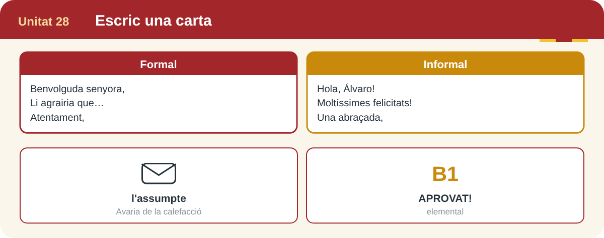
La calefacció de l'habitació de l'Álvaro no funciona. La Marta l'ajuda a escriure a la immobiliària.
Assumpte: Avaria de la calefacció – carrer de Sants, 3r 1a
Benvolguda senyora,
Em dirigeixo a vostè com a llogater de l'habitació del carrer de Sants, 3r 1a, des del mes de gener.
Li escric per comunicar-li que la calefacció de l'habitació no funciona des de fa una setmana. Com que ara fa molt fred, li agrairia que enviés un tècnic tan aviat com sigui possible.
Resto a la seva disposició per acordar el dia i l'hora de la visita.
Atentament,
Álvaro Gil
I una setmana després, la Marta escriu a l'Álvaro per felicitar-lo.
Assumpte: APROVAT!!!
Hola, Álvaro!
M'acaba de dir en Jordi que has aprovat l'elemental! Moltíssimes felicitats! Ja et vaig dir que ho aconseguiries.
Per celebrar-ho, dissabte fem un sopar a casa. Vindràs, oi? Porta postres, que la Núria diu que ja en té prou de crema catalana…
Per cert, t'han arreglat la calefacció?
Una abraçada molt forta,
Marta
| Català | Castellà |
|---|---|
| l'assumpte (m.) | el asunto |
| benvolgut, benvolguda | estimado/a |
| dirigir-se a | dirigirse a |
| el llogater, la llogatera | el inquilino, la inquilina |
| comunicar | comunicar |
| l'avaria (f.) | la avería |
| agrair (li agrairia) | agradecer (le agradecería) |
| el tècnic, la tècnica | el técnico, la técnica |
| tan aviat com sigui possible | lo antes posible |
| restar a la seva disposició | quedar a su disposición |
| acordar | acordar |
| atentament / cordialment | atentamente / cordialmente |
| felicitar / felicitats! | felicitar / ¡felicidades! |
| aconseguir | conseguir |
| arreglar | arreglar |
| una abraçada / petons | un abrazo / besos |
| per cert | por cierto |
| tenir-ne prou | estar harto/a |
1. Les fórmules de les cartes
| Formal | Informal | |
|---|---|---|
| salutació | Benvolgut senyor / Benvolguda senyora, Distingit senyor, | Hola, Álvaro! Estimada Núria, |
| inici | Em dirigeixo a vostè per… Li escric per… | T'escric per… Com estàs? |
| petició | Li agrairia que… Us agrairíem que… | Em faries un favor? Pots…? |
| comiat | Atentament, Cordialment, | Una abraçada, Petons, Fins aviat! |
2. Li agrairia que + imperfet de subjuntiu
En una carta formal trobaràs li agrairia que enviés: és l'imperfet de subjuntiu, que estudiarem a la unitat 29. De moment, aprèn-la com a fórmula.
3. Repàs del B1
| Tema | Exemple |
|---|---|
| plusquamperfet | L'adjunt ja havia marxat. |
| subjuntiu (opinió negativa) | No crec que sigui tranquil. |
| imperatiu negatiu | No tinguis por. |
| dos pronoms | L'hi he tornat. Me'n vaig. |
| relatius | la persona amb qui parlo |
| passiva pronominal | Es lloguen pisos. |
| estil indirecte | Diu que portem la faixa. |
| condicional real | Si plou, agafarem el cremallera. |
| probabilitat | Deu estar cansada. |
Les abreviatures dels pisos. 3r (tercer), 1a (primera), 2n (segon), 4t (quart). En una adreça: carrer de Sants, 45, 3r 1a, 08014 Barcelona.
1. Formal o informal? a) Una abraçada. b) Atentament. c) Benvolgut senyor. d) Fins aviat! e) Li agrairia que…
2. Escriu un correu formal a l'ajuntament per queixar-te del soroll del teu carrer (100 paraules).
3. Escriu un correu informal a un amic per convidar-lo a una festa (80 paraules).
1. a) informal b) formal c) formal d) informal e) formal. 2. i 3. Resposta lliure.
Al final d'aquest nivell sabràs expressar hipòtesis sobre el present i el passat, reproduir el que han dit altres persones, fer servir els pronoms amb precisió, escollir bé les preposicions, crear paraules noves, entendre la diversitat del català, escriure textos administratius, llegir els clàssics i argumentar en un debat.
Objectius: parlo de la feina i de les condicions laborals, explico què em van demanar. Gramàtica: l'imperfet de subjuntiu (parlés, fos, tingués), la correlació de temps.
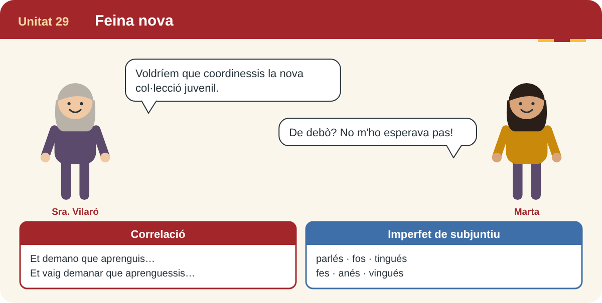
Divendres a la tarda, a l'editorial. La senyora Vilaró crida la Marta al despatx.
Sra. Vilaró: Marta, seu, si us plau. Volia que parléssim del teu futur a la casa.
Marta: Digui'm.
Sra. Vilaró: Quan vas començar les pràctiques, et vaig demanar que aprenguessis el català com més aviat millor i que coneguessis tots els autors. Ho has fet de sobres.
Marta: Gràcies. Ha estat molt intens.
Sra. Vilaró: Per això t'oferim un contracte indefinit com a editora júnior. Voldríem que coordinessis la nova col·lecció de novel·la juvenil.
Marta: De debò? No m'ho esperava pas!
Sra. Vilaró: Tindràs un sou més alt, horari flexible i un dia de teletreball. Només et demanaria que fossis a l'editorial els dilluns, per a la reunió d'equip.
Marta: És clar. Si li sembla bé, ho voldria comentar amb la meva família abans de signar.
Sra. Vilaró: Naturalment. Si fos tu, però, no m'ho pensaria gaire!
| Català | Castellà |
|---|---|
| el despatx | el despacho |
| les pràctiques | las prácticas |
| com més aviat millor | cuanto antes |
| de sobres | de sobra |
| intens, intensa | intenso/a |
| el contracte indefinit / temporal | el contrato indefinido / temporal |
| coordinar | coordinar |
| la col·lecció | la colección |
| juvenil | juvenil |
| de debò? | ¿de verdad? |
| el sou | el sueldo |
| l'horari flexible (m.) | el horario flexible |
| el teletreball | el teletrabajo |
| la reunió d'equip | la reunión de equipo |
| signar | firmar |
| l'entrevista de feina (f.) | la entrevista de trabajo |
| el currículum | el currículum |
| la plantilla | la plantilla (de una empresa) |
| acomiadar / l'acomiadament | despedir / el despido |
| l'atur (m.) / estar a l'atur | el paro / estar en el paro |
1. L'imperfet de subjuntiu
| parlar | perdre | dormir / llegir | |
|---|---|---|---|
| jo | parlés | perdés | dormís |
| tu | parlessis | perdessis | dormissis |
| ell, ella, vostè | parlés | perdés | dormís |
| nosaltres | parléssim | perdéssim | dormíssim |
| vosaltres | parléssiu | perdéssiu | dormíssiu |
| ells, elles, vostès | parlessin | perdessin | dormissin |
Irregulars: ser → fos · estar → estigués · tenir → tingués · fer → fes · anar → anés · poder → pogués · voler → volgués · saber → sabés · venir → vingués · dir → digués · veure → veiés · aprendre → aprengués · conèixer → conegués.
2. La correlació de temps
| Verb principal | Subordinada |
|---|---|
| present / futur: Et demano que… | present de subjuntiu: …aprenguis català. |
| passat / condicional: Et vaig demanar que… / Voldria que… | imperfet de subjuntiu: …aprenguessis català. |
3. Si fos tu…
L'imperfet de subjuntiu també apareix en les hipòtesis: Si fos tu, no m'ho pensaria. Ho estudiarem a la unitat 30.
Els accents de l'imperfet de subjuntiu. Parlés, parléssim, dormís porten accent; parlessis, parlessin no. Fixa't que fos no en porta mai.
1. Escriu l'imperfet de subjuntiu.
a) (ser, jo) b) (tenir, tu) c) (fer, ella) d) (anar, nosaltres) e) (poder, ells) f) (venir, vosaltres)
2. Correlació: completa.
a) Em demanen que (arribar) d'hora. b) Em van demanar que (arribar) d'hora. c) Voldria que (venir, tu) a la reunió. d) Vull que (venir, tu) a la reunió.
3. Explica què et van demanar a la teva primera feina.
1. a) fos b) tinguessis c) fes d) anéssim e) poguessin f) vinguéssiu. 2. a) arribi b) arribés c) vinguessis d) vinguis. 3. Resposta lliure.
Objectius: expresso hipòtesis sobre el present i el passat, lamento el que va passar. Gramàtica: les condicionals irreals (si tingués…, si hagués tingut…), el condicional perfet.
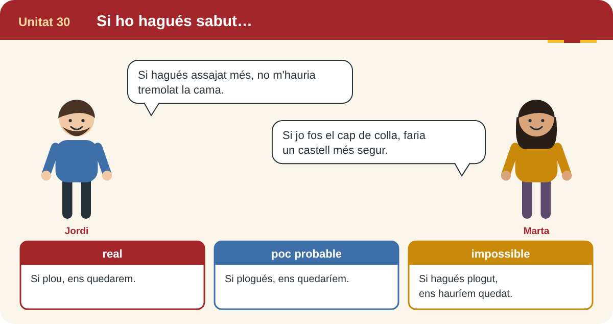
Dilluns després de la Mercè. El quatre de vuit dels Castellers de la Vila de Gràcia va fer llenya. En Jordi té el braç embenat.
Marta: Com et trobes?
Jordi: Bé, només és un cop. Però estic emprenyat amb mi mateix.
Marta: Per què? No va ser culpa teva.
Jordi: Si hagués assajat més aquesta setmana, no m'hauria tremolat la cama al terç.
Núria: I si no hagués plogut a la tarda, la plaça no hauria estat tan relliscosa.
Marta: Si jo fos el cap de colla, faria un castell més segur la propera vegada.
Jordi: Ja, però si féssim sempre castells fàcils, no avançaríem mai. Els castellers diem que la llenya també forma part del castell.
Marta: Doncs si ho hagués sabut, no hauria mirat!
Jordi: Si haguessis estat a la pinya, ho hauries vist encara més de prop. Vine a assajar dijous!
| Català | Castellà |
|---|---|
| fer llenya | caerse un castell |
| el cop | el golpe |
| embenat, embenada | vendado/a |
| trobar-se (bé, malament) | encontrarse (bien, mal) |
| emprenyat, emprenyada | enfadado/a (coloquial) |
| la culpa | la culpa |
| tremolar | temblar |
| el terç | el tercer piso de un castell |
| relliscós, relliscosa | resbaladizo/a |
| segur, segura | seguro/a |
| avançar | avanzar |
| de prop | de cerca |
| la propera vegada | la próxima vez |
| lamentar | lamentar |
| penedir-se | arrepentirse |
| si ho hagués sabut! | ¡si lo hubiera sabido! |
1. Hipòtesi sobre el present o el futur (poc probable)
si + imperfet de subjuntiu → condicional:
Si fos el cap de colla, faria un castell més segur. · Si féssim castells fàcils, no avançaríem.
2. Hipòtesi sobre el passat (impossible)
si + plusquamperfet de subjuntiu → condicional perfet:
| Plusquamperfet de subjuntiu | Condicional perfet |
|---|---|
| hagués, haguessis, hagués, haguéssim, haguéssiu, haguessin + participi | hauria, hauries, hauria, hauríem, hauríeu, haurien + participi |
Si hagués assajat més, no m'hauria tremolat la cama.
A la conseqüència, també es pot fer servir el plusquamperfet de subjuntiu: Si ho hagués sabut, no hagués mirat. (La normativa ho admet; hauria mirat és més habitual a l'escrit formal.)
3. Els tres tipus de condicionals
| Tipus | Exemple |
|---|---|
| real | Si plou, ens quedarem a casa. |
| poc probable | Si plogués, ens quedaríem a casa. |
| impossible (passat) | Si hagués plogut, ens hauríem quedat a casa. |
Hagués i hauria. No els confonguis en l'escriptura: hagués (subjuntiu, amb gu) i hauria (condicional, amb u). A la si condicional, mai condicional: ✗ si hauria sabut → ✓ si hagués sabut.
1. Hipòtesi poc probable.
a) Si (tenir, jo) diners, (viatjar) més. b) Si (viure, tu) a Girona, (anar) a la feina amb tren.
2. Hipòtesi impossible.
a) Si (estudiar, jo) més, (aprovar) . b) Si no (ploure) , la plaça no (ser) relliscosa.
3. Escriu tres coses que hauries fet diferent a la teva vida.
1. a) tingués, viatjaria b) visquessis, aniries. 2. a) hagués estudiat, hauria aprovat b) hagués plogut, hauria estat. 3. Resposta lliure.
Objectius: explico què va dir una altra persona en una entrevista o en una reunió. Gramàtica: l'estil indirecte en passat (canvis de temps, de persones i d'expressions de temps).
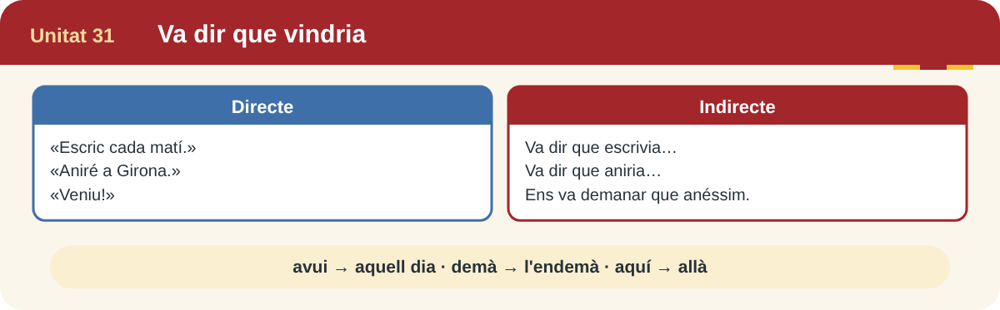
Ahir la Núria va entrevistar a la ràdio la Laura Prat, una jove escriptora que publicarà la seva primera novel·la amb Edicions del Fanal. Avui, a l'editorial, la Marta n'explica la conversa a en Pau.
L'entrevista (ahir):
Núria: Quan vas començar a escriure?
Laura: Vaig començar als quinze anys. Ara escric cada matí a la biblioteca.
Núria: De què parla la novel·la?
Laura: Parla de tres germanes que tornen al poble de la seva àvia. L'he escrita pensant en la meva família.
Núria: Faràs una gira de presentacions?
Laura: Sí, la setmana que ve aniré a Girona i a Lleida. Veniu a la presentació de Barcelona!
La Marta (avui):
«La Núria li va preguntar quan havia començat a escriure. La Laura li va dir que havia començat als quinze anys i que ara escrivia cada matí a la biblioteca. Després li va preguntar de què parlava la novel·la, i ella va respondre que parlava de tres germanes que tornaven al poble de la seva àvia, i que l'havia escrita pensant en la seva família. Al final, la Núria li va preguntar si faria una gira, i la Laura va explicar que la setmana següent aniria a Girona i a Lleida, i ens va demanar que anéssim a la presentació de Barcelona.»
| Català | Castellà |
|---|---|
| entrevistar | entrevistar |
| l'escriptor, l'escriptora | el escritor, la escritora |
| publicar | publicar |
| la biblioteca | la biblioteca |
| la gira | la gira |
| la presentació | la presentación |
| respondre / contestar | responder / contestar |
| explicar | explicar, contar |
| afirmar / assegurar | afirmar / asegurar |
| negar | negar |
| comentar | comentar |
| proposar | proponer |
| aconsellar | aconsejar |
| l'endemà | el día siguiente |
| el dia abans | el día anterior |
| aquell dia / aquella setmana | ese día / esa semana |
| la setmana següent | la semana siguiente |
1. Els canvis de temps (verb introductor en passat)
| Estil directe | Estil indirecte |
|---|---|
| present: «Escric cada matí.» | imperfet: Va dir que escrivia cada matí. |
| perifràstic / perfet: «Vaig començar / He escrit…» | plusquamperfet: Va dir que havia començat / havia escrit. |
| futur: «Aniré a Girona.» | condicional: Va dir que aniria a Girona. |
| imperatiu: «Veniu!» | imperfet de subjuntiu: Ens va demanar que anéssim. |
| imperfet: «Era tímida.» | imperfet (no canvia): Va dir que era tímida. |
2. Els canvis d'expressions
| Directe | Indirecte |
|---|---|
| avui / ahir / demà | aquell dia / el dia abans / l'endemà |
| la setmana que ve | la setmana següent |
| aquí / venir | allà / anar |
| aquest | aquell |
3. Les preguntes
Li va preguntar si faria una gira. · Li va preguntar quan havia començat.
El participi amb pronom. Amb els pronoms la, les davant del verb, el participi pot concordar: La novel·la, l'he escrita (o l'he escrit). En textos formals és més habitual la concordança amb la i les.
1. Passa a l'estil indirecte en passat (Va dir que…).
a) «Treballo a Lleida.» b) «He acabat la novel·la.» c) «Demà aniré a Girona.» d) «Truca'm!» e) «Vas venir ahir?»
2. Canvia les expressions: a) avui b) demà c) ahir d) aquí e) la setmana que ve
3. Explica una conversa que vas tenir ahir.
1. a) Va dir que treballava a Lleida. b) Va dir que havia acabat la novel·la. c) Va dir que l'endemà aniria a Girona. d) Em va demanar que la truqués. e) Em va preguntar si hi havia anat el dia abans. 2. a) aquell dia b) l'endemà c) el dia abans d) allà e) la setmana següent. 3. Resposta lliure.
Objectius: parlo de decisions i dubtes, faig servir els pronoms amb precisió. Gramàtica: ho i en com a atribut, hi i en amb verbs de règim, les combinacions de tres pronoms.
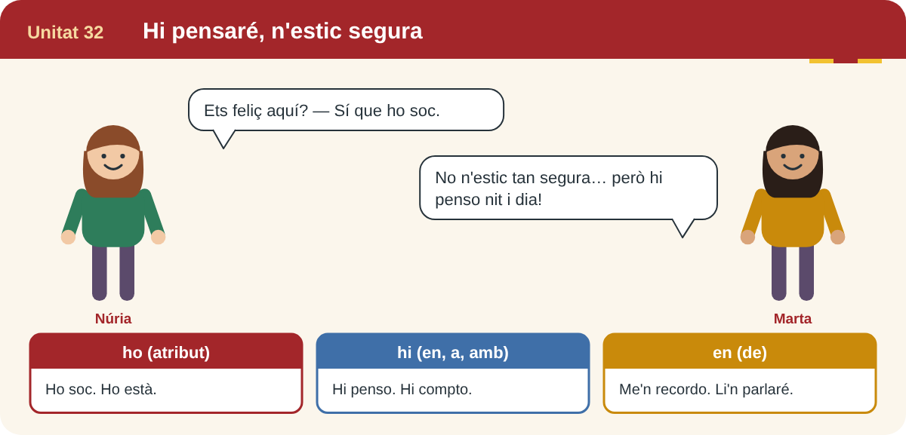
La Marta ha d'acceptar o no el contracte. Truca a l'àvia Rosario i després en parla amb la Núria.
Núria: I què t'ha dit la teva àvia?
Marta: Que si soc feliç aquí, que no m'ho pensi gaire.
Núria: I ho ets, de feliç?
Marta: Sí que ho soc. Però trobo a faltar Màlaga, i la família.
Núria: És normal. Jo, de Lleida, també me'n recordo cada dia. Ara, ets bona editora i ho saps.
Marta: No n'estic tan segura…
Núria: Doncs jo sí que n'estic, de segura. Hi has pensat bé?
Marta: Hi penso nit i dia! I compto amb vosaltres, és clar.
Núria: Hi pots comptar. I en Jordi, ja li ho has dit?
Marta: Encara no li n'he parlat. Ara li'n parlaré.
Núria: Escolta, quan vagis a Màlaga per Nadal, porta'ns-en uns quants, d'aquells dolços de la teva àvia!
| Català | Castellà |
|---|---|
| acceptar | aceptar |
| pensar-s'ho | pensárselo |
| feliç | feliz |
| trobar a faltar | echar de menos |
| recordar-se de | acordarse de |
| estar segur, segura (de) | estar seguro/a (de) |
| pensar en | pensar en |
| comptar amb | contar con |
| parlar de | hablar de |
| nit i dia | noche y día |
| decidir-se | decidirse |
| dubtar | dudar |
| el dubte | la duda |
| arriscar-se | arriesgarse |
| valer la pena | valer la pena |
| uns quants, unes quantes | unos cuantos, unas cuantas |
| els dolços | los dulces |
1. Ho i en com a atribut
Amb ser, estar, semblar, l'atribut se substitueix per ho:
Ets feliç? — Sí que ho soc. · Està cansada? — Ho està. · Sembla fàcil, però no ho és.
Si l'atribut és indeterminat, també en: És metge? — N'és, de metge (col·loquial i expressiu).
2. Hi i en amb verbs de règim
| Preposició | Pronom | Exemple |
|---|---|---|
| en, a, amb | hi | pensar en → Hi penso. · comptar amb → Hi pots comptar. |
| de | en | recordar-se de → Me'n recordo. · estar segur de → N'estic segura. · parlar de → Li'n parlaré. |
3. Tres pronoms
| Combinació | Exemple |
|---|---|
| li + en → li'n | Li'n parlaré. |
| ens + en → ens en | Porta-ns-en! |
| se + li + en | Se li'n va anar el cap. (se le fue la cabeza) |
| en + hi → n'hi | N'hi ha molts. |
4. La dislocació
Per destacar un element, el pronom el reprèn: De segura, jo sí que n'estic. A Màlaga, hi penso cada dia.
Les formes plenes, reforçades i elidides. Davant del verb: me'n recordo, n'estic; darrere del verb: recordar-se'n, porta'ns-en. La forma 'ns apareix darrere de vocal: porta'ns; darrere de consonant: portar-nos.
1. Substitueix l'atribut: a) És simpàtica? — Sí que és. b) Estàs cansat? — No estic. c) Semblen nous? — Sí que semblen.
2. Hi o en?
a) Penses en el viatge? — Sí, penso. b) Te'n recordes de l'àvia? — Sí, me recordo. c) Parlem del contracte? — Sí, parlem. d) Puc comptar amb tu? — Sí, pots comptar.
3. Tradueix: a) Se lo hablaré (a él, del tema). b) Tráenos unos cuantos. c) Hay muchos.
1. a) ho b) ho c) ho. 2. a) hi b) 'n c) en d) hi. 3. a) Li'n parlaré. b) Porta'ns-en uns quants. c) N'hi ha molts.
Objectius: escric amb precisió, corregeixo errors de preposicions. Gramàtica: a i en de lloc i de temps, les preposicions davant de que, per i per a (repàs).
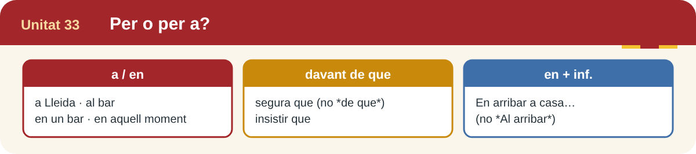
La Marta corregeix el manuscrit de la Laura Prat. Hi troba alguns errors de preposicions i li envia aquestes notes.
«Laura, aquí tens les meves correccions:
En general, la novel·la és magnífica. Ens veiem dimecres!»
| Català | Castellà |
|---|---|
| el manuscrit | el manuscrito |
| corregir / la correcció | corregir / la corrección |
| convençut, convençuda | convencido/a |
| insistir | insistir |
| la destinatària / el destinatari | la destinataria / el destinatario |
| magnífic, magnífica | magnífico/a |
| en arribar | al llegar |
| a la tarda / al vespre | por la tarde / al anochecer |
| a l'estiu / a l'hivern | en verano / en invierno |
| en aquell moment | en aquel momento |
| d'aquí a | dentro de |
| des de / fins a | desde / hasta |
| cap a | hacia |
| amb / sense | con / sin |
| segons | según |
| malgrat | a pesar de |
1. A o en de lloc
| a | en |
|---|---|
| davant de topònims i article definit: a Lleida, a la biblioteca, al bar | davant d'un, una, algun, aquest, aquell, cada: en un bar, en aquest poble |
| (amb aquest i aquell també s'admet a) |
2. En + infinitiu
En arribar a casa, va trucar. = Al llegar a casa. ✗ Al arribar.
3. Les preposicions davant de que
| Preposició | Registre formal (GIEC) | Informal |
|---|---|---|
| a, de + que | cau: Estic segura que ve. Em vaig adonar que plovia. | |
| en, amb + que | canvi: Insisteix que vinguin (preferible) o es manté: Insisteix en que vinguin. | caiguda: Insisteix que vinguin. |
4. Repàs per / per a
per a = destinatari, finalitat amb nom, opinió (per a mi), termini. per = causa, mitjà, lloc de pas, temps aproximat. Davant d'infinitiu de finalitat: per o per a.
El castellanisme de que. En català no hi ha de que davant d'una oració: ✗ estic segura de que → ✓ estic segura que. Però sí davant d'un nom: estic segura de la seva resposta.
1. A o en?
a) Visc Barcelona. b) Ens trobem un cafè. c) És la biblioteca. d) aquell moment, va trucar.
2. Corregeix: a) Estic segur de que vindrà. b) Al sortir, tanca la porta. c) Pensa molt amb tu. d) Es van conèixer a una festa.
3. Per o per a? a) Ho faig tu (causa). b) Aquest regal és tu. c) Vam passar Girona. d) mi, és el millor llibre.
1. a) a b) en c) a d) En. 2. a) Estic segur que vindrà. b) En sortir, tanca la porta. c) Pensa molt en tu. d) Es van conèixer en una festa. 3. a) per b) per a c) per d) Per a.
Objectius: entenc com es formen les paraules, faig servir el vocabulari de la tecnologia. Gramàtica: la derivació (prefixos i sufixos), la composició, el guionet.
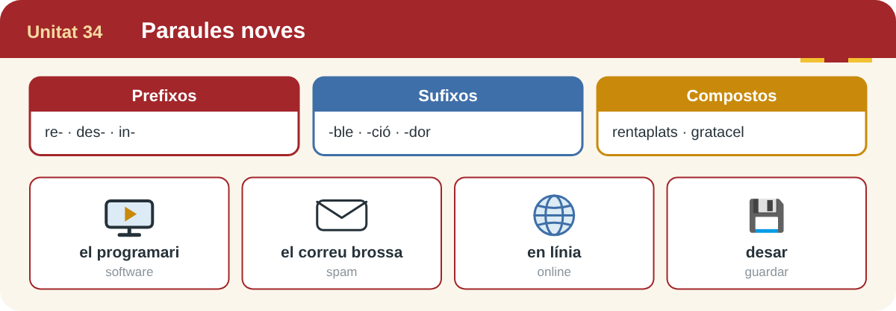
En Jordi treballa en una empresa d'informàtica. Ha d'escriure en català el manual d'una aplicació i dubta de moltes paraules. La Marta li recomana el Termcat.
«El Termcat és el centre de terminologia de la llengua catalana. S'encarrega de proposar i fixar els termes dels llenguatges d'especialitat, sobretot dels àmbits nous, com la informàtica o la medicina. Gràcies a ell, el català té paraules pròpies per a molts conceptes que arriben de l'anglès: maquinari (hardware), programari (software), correu brossa (spam), en línia (online) o descarregar (download).
Moltes de les paraules noves es creen amb els mecanismes de sempre. Amb prefixos: reinstal·lar, desconnectar, invisible. Amb sufixos: descarregable, actualització, navegador. O per composició, ajuntant dues paraules: parabrises, rentaplats, guardaroba.
Abans d'inventar-se una paraula o de fer servir directament l'anglès, val la pena consultar el Cercaterm, el cercador del Termcat, o l'Optimot.»
| Català | Castellà |
|---|---|
| el terme / la terminologia | el término / la terminología |
| el llenguatge d'especialitat | el lenguaje de especialidad |
| el maquinari / el programari | el hardware / el software |
| l'aplicació (f.) | la aplicación |
| el navegador | el navegador |
| el correu brossa | el spam, correo basura |
| en línia | en línea, online |
| descarregar | descargar |
| actualitzar / l'actualització | actualizar / la actualización |
| la contrasenya | la contraseña |
| l'usuari, l'usuària | el usuario, la usuaria |
| la xarxa / les xarxes socials | la red / las redes sociales |
| el núvol | la nube |
| desar | guardar (un archivo) |
| esborrar | borrar |
| la pantalla / el teclat | la pantalla / el teclado |
| el ratolí | el ratón |
| el rentaplats | el lavavajillas |
| el gratacel | el rascacielos |
1. La derivació
| Prefix | Significat | Exemple |
|---|---|---|
| re- | de nou | reinstal·lar, refer |
| des- | contrari | desconnectar, desfer |
| in-, im-, i- | negació | invisible, impossible, il·legal |
| pre-, post- | abans, després | precuinat, postguerra |
| ex- | que ja no és | exdirector, expresident |
| Sufix | Significat | Exemple |
|---|---|---|
| -ble | que es pot | descarregable, llegible |
| -ció, -ment | acció | actualització, funcionament |
| -dor, -dora | qui fa o instrument | navegador, cercador |
| -eria | botiga, conjunt | llibreria, ferreteria |
| -ista | professió, partidari | periodista, dentista |
2. La composició
verb + nom: rentaplats, parabrises, guardaroba, gratacel, llevaneu. Normalment s'escriuen junts.
3. El guionet
S'escriu guionet en els compostos amb un punt cardinal (nord-americà, sud-est), en les formes repetides (xiu-xiu, ziga-zaga), quan el primer element acaba en vocal i el segon comença amb r, s, x (penja-robes), i amb no davant de nom (la no-violència). Els prefixos s'escriuen junts: exdirector, però ex primer ministre.
Les dobles consonants dels prefixos. in- + necessari = innecessari; in- + material = immaterial; in- + legal = il·legal. Fixa't en la l·l.
1. Forma el contrari amb un prefix: a) connectar b) possible c) legal d) fer e) necessari
2. Forma un nom amb un sufix: a) actualitzar b) navegar c) funcionar d) llibre
3. Tradueix al català: a) software b) spam c) online d) contraseña e) guardar el archivo
1. a) desconnectar b) impossible c) il·legal d) desfer e) innecessari. 2. a) actualització b) navegador c) funcionament d) llibreria. 3. a) programari b) correu brossa c) en línia d) contrasenya e) desar el fitxer.
Objectius: conec els territoris i els dialectes del català, entenc dades sobre l'ús de la llengua. Gramàtica: les principals diferències dialectals, la llengua estàndard.
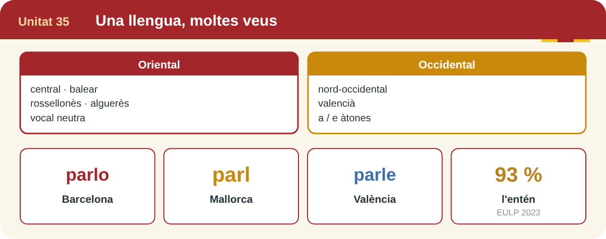
La Núria prepara un programa de ràdio sobre la diversitat del català. Aquest és el guió.
«El català es parla en territoris de quatre estats: Andorra, on és l'única llengua oficial; Espanya (Catalunya, les Illes Balears, el País Valencià, la Franja d'Aragó i el Carxe, a Múrcia); França (la Catalunya del Nord), i Itàlia (la ciutat de l'Alguer, a Sardenya).
Els lingüistes divideixen els dialectes en dos grans blocs. El bloc oriental inclou el català central, el balear, el rossellonès i l'alguerès. El bloc occidental, el nord-occidental —el de Lleida, la meva ciutat— i el valencià. La diferència més clara és la pronunciació de les vocals àtones: a Barcelona, casa i pare acaben amb una vocal neutra; a Lleida i a València, distingim la a i la e.
Hi ha altres diferències, sobretot en el lèxic i en la morfologia: el noi de Barcelona és el xiquet de València; a Mallorca diuen sa casa i es cotxe, amb l'article salat, i la primera persona del present és parl (a Barcelona, parlo; a València, parle). Totes aquestes formes són català, i l'estàndard les acull.
Segons l'Enquesta d'usos lingüístics del 2023, a Catalunya el 93 % de la població entén el català i el 80 % el sap parlar. En canvi, només un terç el fa servir com a llengua habitual. Per això les campanyes demanen als catalanoparlants que no canviïn de llengua quan parlen amb algú que l'està aprenent.»
| Català | Castellà |
|---|---|
| el guió | el guion |
| el territori | el territorio |
| l'estat (m.) | el estado |
| la llengua oficial | la lengua oficial |
| el dialecte / la variant | el dialecto / la variante |
| el bloc | el bloque |
| oriental / occidental | oriental / occidental |
| el lèxic | el léxico |
| l'article salat (m.) | el artículo es, sa de Baleares |
| l'estàndard (m.) | el estándar |
| acollir | acoger |
| l'enquesta (f.) | la encuesta |
| la població | la población |
| un terç / la meitat / un quart | un tercio / la mitad / un cuarto |
| el catalanoparlant | el catalanohablante |
| canviar de llengua | cambiar de lengua |
| la campanya | la campaña |
| el xiquet (val.) | el niño (el noi, el nen) |
1. Algunes diferències dialectals
| Central (Barcelona) | Balear (Mallorca) | Valencià | Nord-occidental (Lleida) | |
|---|---|---|---|---|
| vocals àtones | casa [ə] | [ə] | [a] / [e] | [a] / [e] |
| article | el, la | es, sa | el, la | el, lo (oral), la |
| present 1a pers. | parlo | parl | parle | parlo |
| demostratiu | aquest | aquest | este | aquest |
| salir | sortir | sortir | eixir | eixir / sortir |
| niño | nen, noi | al·lot | xiquet | xic |
2. L'estàndard
L'estàndard és la varietat comuna per als mitjans, l'administració i l'escola. No és el dialecte d'un lloc: inclou formes de tots els dialectes. Aquest llibre ensenya el català central, però totes les variants són igual de correctes en el seu territori.
3. Les fraccions i els percentatges
la meitat, un terç, un quart, dos terços · el 93 % (el noranta-tres per cent).
Una ortografia per a pronúncies diferents. La mateixa paraula escrita, pare, sona párə a Barcelona i páre a Lleida o a València. L'ortografia és comuna per a tots els dialectes: per això no sempre coincideix amb la pronúncia central.
1. Oriental o occidental? a) Barcelona b) València c) Mallorca d) Lleida e) l'Alguer
2. Quina és la forma central? a) parle b) sa casa c) xiquet d) eixir e) este
3. Explica les variants de la teva llengua (cinc frases).
1. a) oriental b) occidental c) oriental d) occidental e) oriental. 2. a) parlo b) la casa c) nen / noi d) sortir e) aquest. 3. Resposta lliure.
Objectius: entenc i escric textos administratius: sol·licituds, avisos, correus formals. Gramàtica: l'estructura de la sol·licitud, les fórmules administratives, el tractament de vós.
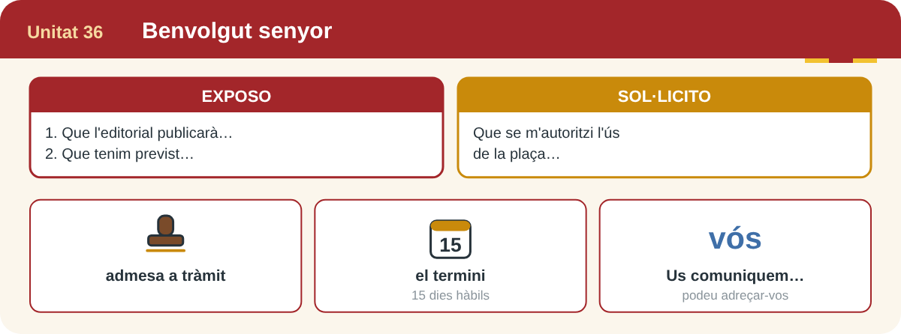
Edicions del Fanal vol presentar la novel·la de la Laura Prat a la plaça de la Virreina. La Marta redacta la sol·licitud per a l'Ajuntament de Barcelona.
SOL·LICITUD D'ÚS D'ESPAI PÚBLIC
Dades de la persona sol·licitant
Nom i cognoms: Marta Ruiz García
DNI: 12345678-Z
Adreça: c. de Verdi, 27, 3r 2a, 08012 Barcelona
En representació de: Edicions del Fanal, SL
EXPOSO
SOL·LICITO
Que se m'autoritzi l'ús d'una part de la plaça de la Virreina per a l'acte esmentat.
Barcelona, 15 de febrer de 2027
[Signatura]
Resposta de l'Ajuntament:
Benvolguda senyora,
Us comuniquem que la vostra sol·licitud ha estat admesa a tràmit. En el termini de quinze dies hàbils rebreu la resolució corresponent. Per a qualsevol aclariment, podeu adreçar-vos a l'Oficina d'Atenció Ciutadana del Districte de Gràcia.
Atentament,
| Català | Castellà |
|---|---|
| la sol·licitud | la solicitud, la instancia |
| el / la sol·licitant | el / la solicitante |
| les dades personals | los datos personales |
| l'adreça (f.) | la dirección |
| en representació de | en representación de |
| exposar / exposo | exponer / expongo |
| sol·licitar / sol·licito | solicitar / solicito |
| tenir previst | tener previsto |
| l'acte (m.) | el acto |
| requerir | requerir |
| autoritzar | autorizar |
| esmentat, esmentada | mencionado/a |
| admetre a tràmit | admitir a trámite |
| el termini | el plazo |
| els dies hàbils | los días hábiles |
| la resolució | la resolución |
| l'aclariment (m.) | la aclaración |
| adreçar-se a | dirigirse a |
| l'Oficina d'Atenció Ciutadana | la oficina de atención ciudadana |
| empadronar-se / el padró | empadronarse / el padrón |
1. L'estructura de la sol·licitud
| Part | Contingut |
|---|---|
| dades | qui ho demana i en nom de qui |
| EXPOSO | els fets, en paràgrafs numerats que comencen per Que… |
| SOL·LICITO | la petició concreta, amb Que… + subjuntiu |
| lloc, data i signatura | Barcelona, 15 de febrer de 2027 |
2. Les fórmules administratives
Us comuniquem que… · Ha estat admesa a tràmit · En el termini de… · Per a qualsevol aclariment… · Resto a la vostra disposició · D'acord amb l'article…
3. El tractament de vós en l'administració
L'administració catalana fa servir sovint vós, amb el verb en 2a persona del plural: Us comuniquem que la vostra sol·licitud… · Podeu adreçar-vos…
4. Les abreviatures
c. (carrer) · pl. (plaça) · núm. (número) · Sr., Sra. · tel. · h (hores, sense punt) · SL (societat limitada).
La data. S'escriu: Barcelona, 15 de febrer de 2027 (sense punt al número de l'any). Els mesos, en minúscula. Davant de vocal: 15 d'abril, 1 d'octubre.
1. Ordena les parts d'una sol·licitud: SOL·LICITO, dades, signatura, EXPOSO, data.
2. Passa a registre formal: a) Et diem que t'hem acceptat la petició. b) Si tens dubtes, vine a l'oficina. c) Gràcies, adeu.
3. Escriu una sol·licitud per demanar un certificat d'empadronament.
1. dades, EXPOSO, SOL·LICITO, data, signatura. 2. a) Us comuniquem que la vostra sol·licitud ha estat acceptada. b) Per a qualsevol aclariment, podeu adreçar-vos a l'oficina. c) Atentament. 3. Resposta lliure.
Objectius: conec els grans clàssics de la literatura catalana, llegeixo textos antics. Gramàtica: les formes medievals més freqüents, la Renaixença.
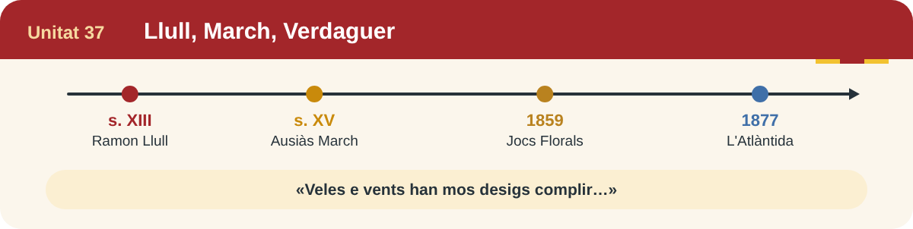
La Marta prepara una guia de lectura per a la col·lecció juvenil: «Tres clàssics en deu minuts».
Ramon Llull (Mallorca, c. 1232 – c. 1316). Filòsof, místic i viatger, va escriure en llatí, en àrab i, sobretot, en català, quan la majoria de savis d'Europa només escrivien en llatí. Per això se'l considera el pare de la prosa literària catalana. Obres: Llibre de meravelles (amb el Llibre de les bèsties), Blanquerna i el Llibre d'amic e amat, una col·lecció de petits textos sobre l'amor entre l'home i Déu.
Ausiàs March (València, c. 1400 – 1459). Va ser el primer gran poeta que va abandonar el provençal, la llengua dels trobadors, per escriure poesia en català. Els seus versos parlen de l'amor, de la mort i de la lluita interior. Així comença un dels seus poemes més coneguts:
Veles e vents han mos desigs complir,
faent camins dubtosos per la mar.
Jacint Verdaguer (Folgueroles, 1845 – Vallvidrera, 1902). Va ser el gran poeta de la Renaixença, el moviment del segle XIX que va recuperar el català com a llengua literària. El 1877 va guanyar els Jocs Florals amb el poema èpic L'Atlàntida, i el 1886 va publicar Canigó. També és l'autor del Virolai, l'himne de la Mare de Déu de Montserrat:
Rosa d'abril, Morena de la serra,
de Montserrat estel,
il·lumineu la catalana terra,
guiau-nos cap al Cel.
| Català | Castellà |
|---|---|
| el filòsof / el místic | el filósofo / el místico |
| el savi, la sàvia | el sabio, la sabia |
| la prosa / el vers | la prosa / el verso |
| la meravella | la maravilla |
| la bèstia | la bestia, el animal |
| el trobador | el trovador |
| el provençal | el provenzal |
| la lluita | la lucha |
| la vela | la vela (de barco) |
| dubtós, dubtosa | dudoso/a, incierto/a |
| la Renaixença | el renacimiento cultural catalán del s. XIX |
| els Jocs Florals | los Juegos Florales |
| el poema èpic | el poema épico |
| l'himne (m.) | el himno |
| l'estel (m.) | la estrella (poético) |
| il·luminar | iluminar |
| guiar | guiar |
1. Les formes medievals
Els textos antics es llegeixen sense gaires problemes, però tenen formes que han canviat:
| Medieval | Actual | |
|---|---|---|
| e | i | Veles e vents → veles i vents |
| mos (desigs) | els meus | mos desigs → els meus desitjos |
| han … complir | han de complir | obligació |
| faent | fent | gerundi |
| amat | estimat | Llibre d'amic e amat |
2. L'imperatiu de vós
Al Virolai, Verdaguer parla a la Mare de Déu de vós: il·lumineu, guiau-nos. És el tractament de respecte tradicional.
3. Els segles
Els segles s'escriuen en xifres romanes: el segle XIII, el segle XIX. Es llegeixen: el segle tretze, el segle dinou.
Les edicions dels clàssics. Les obres medievals es publiquen sovint amb l'ortografia original o adaptada. Les citacions d'aquesta unitat reprodueixen la forma més habitual dels versos, que són de domini públic.
1. Relaciona: a) Llull b) March c) Verdaguer — 1) Canigó 2) Blanquerna 3) Veles e vents
2. Passa al català actual: a) Veles e vents b) mos desigs c) faent camins
3. Quin és el clàssic més important de la teva llengua? Presenta'l en cinc frases.
1. a-2, b-3, c-1. 2. a) Veles i vents b) els meus desitjos c) fent camins. 3. Resposta lliure.
Objectius: argumento a favor i en contra, intervinc en un debat, evito castellanismes. Gramàtica: els connectors argumentatius, l'estructura d'una argumentació, els castellanismes més freqüents.
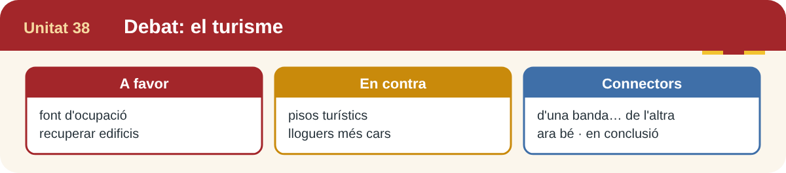
La Núria modera un debat a la ràdio: «El turisme a Barcelona: oportunitat o problema?». Hi participen una representant del sector hoteler i un portaveu d'una associació de veïns.
Núria: Bona tarda. Comencem amb la representant del sector. Senyora Riera?
Sra. Riera: En primer lloc, el turisme és una de les principals fonts d'ocupació de la ciutat: milers de famílies en depenen. A més a més, ha permès recuperar molts edificis històrics. Per tant, cal gestionar-lo, no combatre'l.
Núria: Senyor Puigdomènech?
Sr. Puigdomènech: D'una banda, és cert que el turisme crea feina. De l'altra, però, els pisos turístics han fet pujar els lloguers i molts veïns han hagut de marxar del barri. No obstant això, no estem en contra dels turistes, sinó d'un model que no pensa en qui hi viu.
Sra. Riera: Ara bé, la taxa turística ja finança millores als barris.
Sr. Puigdomènech: Malgrat que sigui així, els diners no arriben on cal.
Núria: En conclusió, sembla que tots dos coincidiu en una cosa: el turisme s'ha de regular. Gràcies a tots dos!
| Català | Castellà |
|---|---|
| el debat / debatre | el debate / debatir |
| moderar | moderar |
| el sector hoteler | el sector hotelero |
| el / la portaveu | el / la portavoz |
| l'associació de veïns (f.) | la asociación de vecinos |
| la font d'ocupació | la fuente de empleo |
| dependre de | depender de |
| gestionar | gestionar |
| combatre | combatir |
| el pis turístic | el piso turístico |
| la taxa turística | la tasa turística |
| finançar | financiar |
| regular | regular |
| el model | el modelo |
| coincidir | coincidir |
| a favor / en contra | a favor / en contra |
| en primer lloc | en primer lugar |
| d'una banda… de l'altra | por un lado… por otro |
| ara bé | ahora bien |
| no obstant això | no obstante |
| malgrat que | a pesar de que |
| en conclusió | en conclusión |
1. Els connectors argumentatius
| Funció | Connectors |
|---|---|
| ordenar | en primer lloc, en segon lloc, finalment |
| afegir | a més a més, també, així mateix |
| contrastar | d'una banda… de l'altra; en canvi |
| objectar | ara bé, no obstant això, malgrat això |
| concedir | malgrat que, tot i que + verb |
| concloure | en conclusió, en definitiva, per tant |
2. L'estructura de l'argumentació
tesi → arguments (amb exemples i dades) → contraarguments → conclusió
3. Els castellanismes més freqüents
| ✗ Castellanisme | ✓ Català |
|---|---|
| tenir que | haver de |
| bueno, vale | bé, d'acord |
| pues, entonces | doncs, llavors / aleshores |
| o sigui (formal) | és a dir |
| lo que | el que, allò que |
| donar-se compte | adonar-se |
| en base a | a partir de, segons |
| tenir que veure | tenir a veure |
| despedir | acomiadar |
| disfrutar | gaudir |
| aconteixement | esdeveniment |
| desde | des de |
Des de / fins a. S'escriuen separats: des de l'any passat, des d'ara, fins a les deu. La forma ✗ desde no existeix en català.
1. Corregeix els castellanismes: a) Tinc que marxar. b) Bueno, vale. c) Lo que dius és interessant. d) No em vaig donar compte. e) Vam disfrutar molt.
2. Completa amb un connector: a) , el turisme crea feina; , encareix els pisos. b) És car; , val la pena. c) que plogui, sortirem.
3. Escriu un text argumentatiu (150 paraules): «Cal limitar els pisos turístics?»
1. a) He de marxar. b) Bé, d'acord. c) El que dius és interessant. d) No me'n vaig adonar. e) Vam gaudir molt. 2. a) D'una banda, de l'altra b) ara bé / no obstant això c) Malgrat (o Tot i) 3. Resposta lliure.
Al final d'aquest nivell sabràs escriure textos llargs i ben cohesionats, fer servir les estructures concessives i els relatius més complexos, entendre i usar la fraseologia, comentar textos literaris, fer síntesis i parlar en públic amb una pronúncia acurada. En aquest nivell, la Gramàtica passa a dir-se Llengua, i la Pronúncia i ortografia es converteix en Estil i registre.
Objectius: entenc i escric textos sobre el medi ambient, expresso concessió i causa amb precisió. Llengua: les concessives (tot i que, malgrat que, encara que, per més que), les causals (atès que, ja que, com que), el gerundi i el participi absoluts.
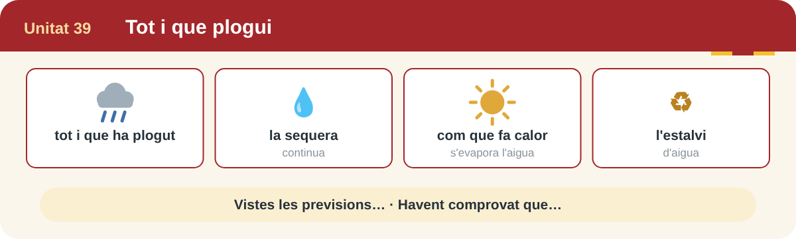
Article d'opinió de la Núria Soler a la web de la ràdio.
L'aigua que no cau
Tot i que aquesta tardor ha plogut més que en els darrers anys, Catalunya encara no ha sortit de la sequera. Malgrat les pluges, els embassaments de les conques internes continuen lluny de la seva capacitat, i els experts adverteixen que una tempesta no compensa anys de dèficit.
Atès que el clima mediterrani sempre ha tingut períodes secs, hi ha qui creu que no cal alarmar-se. Per més que ho repeteixin, però, les dades indiquen que les sequeres són cada vegada més llargues i més freqüents. Com que les temperatures també pugen, s'evapora més aigua i els boscos són més vulnerables als incendis.
Vistes les previsions, les administracions han començat a invertir en dessalinitzadores i en la regeneració d'aigua. Havent comprovat que el consum domèstic pot baixar molt amb petits canvis, també han impulsat campanyes d'estalvi.
Encara que plogui demà, doncs, el problema continuarà. Ja no es tracta de mirar el cel, sinó de canviar la nostra relació amb l'aigua.
| Català | Castellà |
|---|---|
| la sequera | la sequía |
| la conca | la cuenca |
| advertir | advertir |
| compensar | compensar |
| el dèficit | el déficit |
| alarmar-se | alarmarse |
| les dades | los datos |
| evaporar-se | evaporarse |
| vulnerable | vulnerable |
| l'incendi forestal (m.) | el incendio forestal |
| invertir | invertir |
| la dessalinitzadora | la desaladora |
| la regeneració d'aigua | la regeneración de agua |
| impulsar | impulsar |
| l'estalvi (m.) / estalviar | el ahorro / ahorrar |
| el consum | el consumo |
| darrer, darrera | último/a |
| hi ha qui… | hay quien… |
| es tracta de | se trata de |
1. Les concessives
| Connector | Mode | Exemple |
|---|---|---|
| tot i que | indicatiu (fet real) o subjuntiu (hipòtesi) | Tot i que ha plogut, encara hi ha sequera. |
| malgrat que | indicatiu o subjuntiu | Malgrat que plogui, el problema continuarà. |
| encara que | indicatiu o subjuntiu | Encara que plogui demà… |
| per més que / per molt que | subjuntiu | Per més que ho repeteixin… |
| malgrat / tot i + nom o infinitiu | — | Malgrat les pluges… Tot i haver plogut… |
2. Les causals
| Connector | Posició | Registre |
|---|---|---|
| perquè | després de la principal | general |
| com que | sempre al principi | general |
| ja que, atès que, vist que | principi o mig | formal |
| per tal com | després | molt formal |
3. Les construccions absolutes
Variar els connectors. En un text formal, evita repetir però i perquè. Alterna-hi no obstant això, tanmateix, ara bé (oposició) i atès que, ja que, en la mesura que (causa). Tanmateix és molt formal i va entre comes: El problema, tanmateix, continua.
1. Uneix les frases amb el connector indicat.
a) Ha plogut. Els embassaments són buits. (tot i que) b) Les temperatures pugen. Hi ha més incendis. (com que) c) Estalviem aigua. No n'hi haurà prou. (per més que)
2. Transforma amb una construcció absoluta: a) Quan es va acabar la reunió, vam marxar. b) Després de dinar, vam fer la migdiada.
3. Escriu un article d'opinió (200 paraules) sobre un problema ambiental de la teva ciutat.
1. a) Tot i que ha plogut, els embassaments són buits. b) Com que les temperatures pugen, hi ha més incendis. c) Per més que estalviem aigua, no n'hi haurà prou. 2. a) Acabada la reunió, vam marxar. b) Havent dinat, vam fer la migdiada. 3. Resposta lliure.
Objectius: escric descripcions d'edificis i d'obres d'art, connecto idees amb relatius complexos. Llengua: els relatius el qual, la qual, els quals, les quals, la qual cosa, on i què amb preposició.
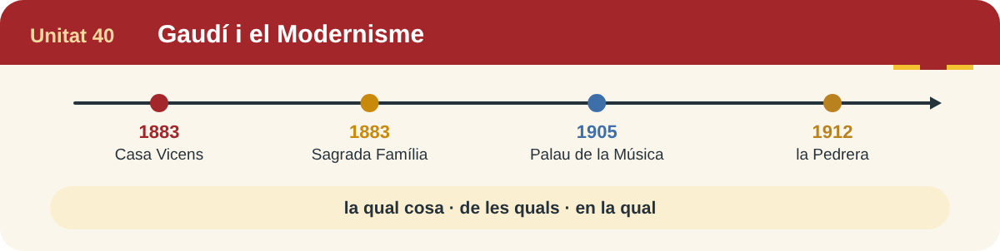
La Marta escriu les fitxes d'una guia del Modernisme per a la col·lecció juvenil.
Casa Vicens (Gràcia, 1883–1885). És la primera casa que va construir Antoni Gaudí, la qual cosa la converteix en una peça clau per entendre la seva evolució. Els rajols de colors, entre els quals destaquen els decorats amb clavells de moro, mostren la influència de l'art àrab, de què Gaudí estava enamorat.
La Sagrada Família. Les obres del temple, de les quals Gaudí es va fer càrrec el 1883, encara no han acabat. Gaudí hi va treballar fins a la seva mort, el 1926, i va deixar maquetes a partir de les quals els arquitectes han continuat el projecte.
La Pedrera (Casa Milà, 1906–1912). És un edifici de façana ondulada, sense parets de càrrega a l'interior, gràcies a la qual cosa els pisos es podien distribuir lliurement. Al terrat, les famoses xemeneies semblen guerrers de pedra que vigilen la ciutat.
El Palau de la Música Catalana (1905–1908). Obra de Lluís Domènech i Montaner, és la sala de concerts en la qual el Modernisme assoleix la seva màxima expressió: vitralls, mosaics i escultures s'hi barregen amb una llum natural que entra per tot arreu.
| Català | Castellà |
|---|---|
| el Modernisme | el modernismo catalán |
| la fitxa | la ficha |
| la peça clau | la pieza clave |
| el rajol | el azulejo |
| el clavell | el clavel |
| destacar | destacar |
| fer-se càrrec de | hacerse cargo de |
| la maqueta | la maqueta |
| la façana | la fachada |
| ondulat, ondulada | ondulado/a |
| la paret de càrrega | el muro de carga |
| distribuir | distribuir |
| el terrat | la azotea |
| la xemeneia | la chimenea |
| assolir | alcanzar, lograr |
| el vitrall | la vidriera |
| el mosaic | el mosaico |
| per tot arreu | por todas partes |
1. El qual, la qual, els quals, les quals
Concorden amb l'antecedent i s'usen sobretot darrere de preposició i en registre formal:
les obres, de les quals Gaudí es va fer càrrec · els rajols, entre els quals destaquen… · la sala en la qual el Modernisme assoleix…
2. Relatius darrere de preposició: tres opcions
| Antecedent | Opcions |
|---|---|
| cosa | la sala en què / en la qual / on |
| persona | l'arquitecte amb qui / amb el qual |
| idea (tota una frase) | la qual cosa, cosa que |
3. La qual cosa
Recull una idea anterior: És la primera obra de Gaudí, la qual cosa la fa molt important. Equival al castellà lo cual. ✗ lo qual.
Relatius i registre. A l'oral, la gent diu sovint ✗ la sala que hi fan concerts (relatiu «popular»). En l'estàndard: la sala on fan concerts o la sala en què fan concerts. Evita també l'abús d'el qual quan n'hi ha prou amb que: ✗ el llibre el qual vaig llegir → ✓ el llibre que vaig llegir.
1. Completa amb el qual, la qual, els quals, les quals + preposició.
a) La casa (en) va viure és a Gràcia. b) Els arquitectes (amb) va treballar. c) Les maquetes (a partir de) continuen l'obra.
2. Corregeix: a) El carrer que hi visc és sorollós. b) Va arribar tard, lo qual em va molestar. c) La noia la qual vaig conèixer és arquitecta.
3. Escriu la fitxa d'un edifici de la teva ciutat (120 paraules) amb tres relatius.
1. a) en la qual b) amb els quals c) a partir de les quals. 2. a) El carrer on visc és sorollós. b) Va arribar tard, la qual cosa em va molestar. c) La noia que vaig conèixer és arquitecta. 3. Resposta lliure.
Objectius: entenc i faig servir frases fetes, dites i refranys; evito els falsos amics. Llengua: la fraseologia catalana, els falsos amics català-castellà.
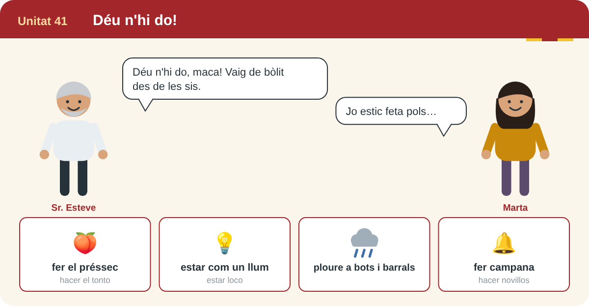
Al forn del senyor Esteve, un dissabte al matí. Hi ha cua.
Marta: Bon dia, senyor Esteve! Quanta gent, avui!
Esteve: Déu n'hi do, maca! Vaig de bòlit des de les sis. I la meva dona, que està de mala lluna perquè l'ajudant ha fet campana…
Marta: Vol que l'ajudi? Avui tinc temps.
Esteve: Ets un sol! Però no cal, qui dia passa any empeny. Com va la feina?
Marta: Bé, tot i que els darrers dies estic feta pols. Hem de tancar la col·lecció abans de la Setmana del Llibre.
Esteve: De mica en mica s'omple la pica. I en Jordi? Encara fa el préssec amb els castells?
Marta: Més que mai! Diu que aquest any carregaran un tres de nou.
Esteve: Aquest noi està com un llum! Bé, què et poso?
Marta: Una barra de pa i quatre croissants.
Esteve: Té. I aquests panellets, de regal. No en facis un gra massa, eh!
Marta: Gràcies! Quin caràcter que té, vostè!
Esteve: Qui no plora no mama, filla!
| Expressió | Significat |
|---|---|
| Déu n'hi do! | ¡madre mía!, ¡no está nada mal! |
| anar de bòlit | ir de cabeza, muy atareado |
| estar de mala lluna | estar de mal humor |
| fer campana | faltar (a clase o al trabajo) sin permiso |
| ser un sol | ser un encanto |
| estar fet pols | estar agotado |
| fer el préssec | hacer el tonto |
| estar com un llum | estar como una cabra |
| fer-ne un gra massa | pasarse, exagerar |
| ploure a bots i barrals | llover a cántaros |
| tenir mala llet | tener mala leche |
| tocar el dos | largarse |
| no tenir ni cinc | no tener ni un duro |
| posar-se les botes | ponerse las botas |
| qui dia passa any empeny | ir tirando |
| de mica en mica s'omple la pica | poco a poco se llega lejos |
| qui no plora no mama | quien no llora no mama |
| cada terra fa sa guerra | cada lugar tiene sus costumbres |
| ser més llarg que un dia sense pa | ser larguísimo, interminable |
| els panellets | dulces de Todos los Santos |
1. Les frases fetes
Són combinacions fixes amb un significat que no és la suma de les paraules. No es poden traduir literalment: Fa el préssec no té res a veure amb els préssecs.
2. Els falsos amics
| Català | Vol dir | No vol dir |
|---|---|---|
| acostar-se | acercarse | acostarse (= anar a dormir) |
| apressar | capturar | apresurar (= afanyar-se) |
| bordar | ladrar | bordar (= brodar) |
| bolet | seta | boleto |
| brut, bruta | sucio/a | bruto/a |
| cama | pierna | cama (= llit) |
| descuidar-se | olvidarse | descuidarse (= badar) |
| espatlla | hombro | espalda (= esquena) |
| lliurar | entregar | librar(se) (= deslliurar-se) |
| manxa | fuelle | mancha (= taca) |
| pegar | golpear | pegar (= enganxar) |
| rentar | lavar | rentar (= rendir, donar rendiment) |
| tasca | tarea | tasca (= taverna) |
3. Els refranys
Els refranys són sentències populars, sovint amb rima: Cada terra fa sa guerra. De mica en mica s'omple la pica. Fixa't en sa (forma antiga de la seva), que es manté als refranys.
Fraseologia i registre. Les frases fetes donen naturalitat a la conversa i a la literatura, però en un text formal o tècnic s'han d'usar amb mesura. Està fet pols (col·loquial) → està esgotat (neutre) → presenta un cansament extrem (formal).
1. Substitueix per una frase feta: a) Avui estic molt cansada. b) Plou moltíssim. c) No tinc gens de diners. d) Aquest noi fa el tonto. e) No exageris!
2. Corregeix els falsos amics: a) M'he descuidat de trucar-te. (vol dir olvidarse) b) Em fa mal l'espatlla de tant estudiar. (vol dir espalda) c) El gos borda tota la nit.
3. Escriu un diàleg amb cinc frases fetes.
1. a) Avui estic feta pols. b) Plou a bots i barrals. c) No tinc ni cinc. d) Aquest noi fa el préssec. e) No en facis un gra massa! 2. a) Correcte (descuidar-se = olvidarse). b) Em fa mal l'esquena. c) Correcte (bordar = ladrar). 3. Resposta lliure.
Objectius: conec la literatura catalana del segle XX, comento un poema. Llengua: el comentari de text literari: tema, estructura, recursos.
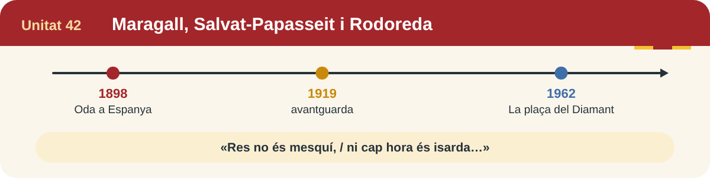
Una classe del curs de literatura que la Marta fa a la universitat.
Joan Maragall (Barcelona, 1860 – 1911) és el gran poeta del Modernisme. Defensava la «paraula viva», una poesia espontània i sincera. El 1898, després de la pèrdua de les últimes colònies, va escriure l'Oda a Espanya, que comença així:
Escolta, Espanya, —la veu d'un fill
que et parla en llengua —no castellana;
parlo en la llengua —que m'ha donat
la terra aspra:
en 'questa llengua —pocs t'han parlat;
en l'altra, massa.
Joan Salvat-Papasseit (Barcelona, 1894 – 1924) va portar l'avantguarda a la poesia catalana: cal·ligrames, llenguatge del carrer i una vitalitat sense límits. Va morir de tuberculosi als trenta anys. Un dels seus poemes més coneguts comença:
Res no és mesquí,
ni cap hora és isarda,
ni és fosca la ventura de la nit.
Mercè Rodoreda (Barcelona, 1908 – Girona, 1983) és l'autora de La plaça del Diamant (1962), la novel·la catalana més traduïda. La protagonista, la Natàlia, a qui el marit anomena Colometa, explica la seva vida al barri de Gràcia, des d'abans de la guerra fins a la postguerra. Rodoreda fa servir una veu en primera persona molt senzilla, que sembla oral, però que amaga un treball d'estil extraordinari. (Les obres de Rodoreda no són de domini públic: les comentem sense citar-les extensament.)
| Català | Castellà |
|---|---|
| la paraula viva | la palabra viva (concepto de Maragall) |
| espontani, espontània | espontáneo/a |
| la pèrdua | la pérdida |
| les colònies | las colonias |
| l'oda (f.) | la oda |
| aspre, aspra | áspero/a |
| l'avantguarda (f.) | la vanguardia |
| el cal·ligrama | el caligrama |
| la vitalitat | la vitalidad |
| mesquí, mesquina | mezquino/a |
| isard, isarda | arisco/a, esquivo/a (poético) |
| la ventura | la ventura, la suerte |
| el / la protagonista | el / la protagonista |
| anomenar | llamar, nombrar |
| la postguerra | la posguerra |
| amagar | esconder |
| el recurs literari | el recurso literario |
| la metàfora / la repetició | la metáfora / la repetición |
| la rima / el ritme | la rima / el ritmo |
1. El comentari de text literari
| Pas | Preguntes |
|---|---|
| context | Qui és l'autor? Quan i on escriu? Quin moviment? |
| tema | De què parla el text, en una frase? |
| estructura | En quantes parts es divideix? |
| recursos | Quines figures fa servir? Per què? |
| valoració | Què aporta? Què en penses? |
2. Alguns recursos literaris
| Recurs | Exemple |
|---|---|
| apòstrofe (parlar a algú absent) | Escolta, Espanya |
| antítesi | en aquesta llengua pocs, en l'altra massa |
| negació repetida (anàfora) | Res no…, ni cap…, ni… |
| el·lisió poètica | 'questa per aquesta |
3. El vocabulari del comentari
El poema expressa… · L'autor fa servir… · Destaca… · Aquest recurs subratlla… · En conclusió, el text…
Citar bé. Les citacions breus van entre cometes baixes (« »); les llargues, en un paràgraf a part. Indica sempre l'autor i l'obra. Si l'obra encara té drets d'autor, cita només fragments breus amb finalitat docent o crítica, o fes-ne una paràfrasi.
1. Identifica el recurs: a) Escolta, Espanya b) Res no és mesquí, / ni cap hora és isarda c) en 'questa llengua
2. Explica amb les teves paraules els tres versos de Salvat-Papasseit.
3. Fes un comentari breu (200 paraules) dels versos de Maragall.
1. a) apòstrofe b) anàfora negativa (repetició de ni) c) el·lisió poètica. 2. Model: El poeta diu que no hi ha res petit ni dolent a la vida: totes les hores, fins i tot les de la nit, poden ser bones. 3. Resposta lliure.
Objectius: sintetitzo diversos textos, escric un text expositiu-argumentatiu cohesionat. Llengua: els mecanismes de cohesió (sinònims, hiperònims, pronoms, nominalització), la síntesi.
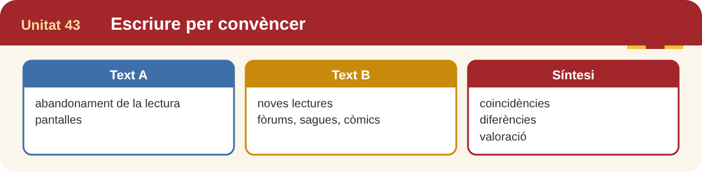
La senyora Vilaró demana a la Marta un informe per a la junta: «Els joves llegeixen?». La Marta en llegeix dos textos i en fa una síntesi.
Text A (resum): Una enquesta recent indica que els adolescents llegeixen més per obligació que per plaer, i que l'abandonament de la lectura es produeix sobretot entre els catorze i els setze anys. Els mòbils i les xarxes competeixen amb els llibres pel temps lliure.
Text B (resum): Un grup de bibliotecàries defensa que els joves sí que llegeixen, però de manera diferent: fòrums, sagues fantàstiques i còmics. Segons elles, el problema és que aquestes lectures no sempre es consideren «literatura».
La síntesi de la Marta:
«Els dos textos coincideixen a assenyalar que la lectura juvenil està canviant, però n'ofereixen interpretacions diferents. El primer posa l'accent en l'abandonament: la lectura es viu com una obligació escolar i perd la batalla davant de les pantalles, sobretot a partir dels catorze anys. El segon, en canvi, relativitza aquesta crisi: aquestes noves pràctiques —fòrums, sagues, còmics— també són lectura, encara que no tinguin el prestigi dels clàssics.
Aquesta divergència té conseqüències per a la nostra col·lecció. Si acceptem el diagnòstic del primer text, haurem de fer llibres que competeixin amb l'entreteniment digital; si acceptem el del segon, haurem d'acostar-nos als gèneres que els adolescents ja estimen. Totes dues estratègies, de fet, són compatibles.»
| Català | Castellà |
|---|---|
| la junta | la junta (directiva) |
| la síntesi | la síntesis |
| sintetitzar | sintetizar |
| per obligació / per plaer | por obligación / por placer |
| l'abandonament (m.) | el abandono |
| competir | competir |
| el fòrum | el foro |
| la saga | la saga |
| el còmic | el cómic |
| coincidir a + inf. | coincidir en |
| assenyalar | señalar |
| posar l'accent en | poner el acento en |
| relativitzar | relativizar |
| la divergència | la divergencia |
| el diagnòstic | el diagnóstico |
| l'entreteniment (m.) | el entretenimiento |
| estimar | querer, amar; apreciar |
| compatible | compatible |
| totes dues, tots dos | ambas, ambos |
1. Els mecanismes de cohesió
| Mecanisme | Exemple |
|---|---|
| sinònims | els joves → els adolescents |
| hiperònims (paraula general) | fòrums, sagues i còmics → aquestes noves pràctiques |
| pronoms i demostratius | n'ofereixen interpretacions; aquesta divergència |
| nominalització | els joves abandonen la lectura → l'abandonament de la lectura |
| ordinals | el primer…, el segon… |
2. La síntesi (tasca del nivell C1)
3. Tots dos / totes dues
Els dos textos = tots dos textos. Femení: totes dues estratègies. Formal: ambdós / ambdues.
Evitar les repeticions. Un text formal no repeteix la mateixa paraula a cada frase: alterna sinònims, pronoms i hiperònims. Però atenció: en un text tècnic o jurídic, la repetició del terme exacte és preferible a un sinònim imprecís.
1. Substitueix les paraules repetides: Els joves llegeixen poc. Els joves prefereixen el mòbil. Els joves diuen que els llibres són avorrits.
2. Nominalitza: a) els preus pugen b) la gent abandona la lectura c) l'empresa inverteix d) els lectors participen
3. Busca dos articles sobre un mateix tema i escriu-ne una síntesi de 200 paraules.
1. Model: Els joves llegeixen poc. Prefereixen el mòbil i diuen que els llibres són avorrits. (o: Els adolescents…, aquests lectors…) 2. a) la pujada dels preus b) l'abandonament de la lectura c) la inversió de l'empresa d) la participació dels lectors. 3. Resposta lliure.
Objectius: parlo en públic amb una pronúncia acurada, preparo un monòleg. Llengua: la fonètica sintàctica (sonoritzacions, elisions, enllaços), l'estructura del monòleg oral.
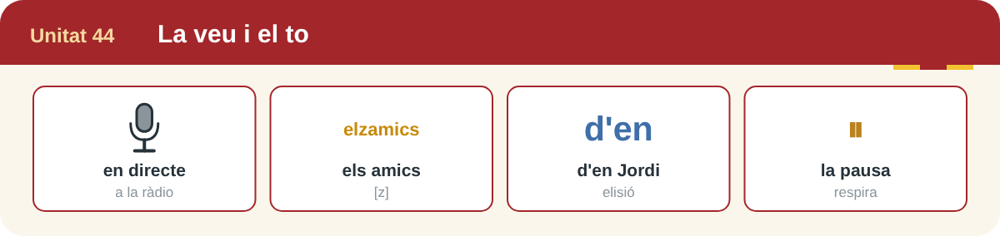
La Marta ha de parlar a la ràdio sobre la nova col·lecció. La Núria l'ajuda a preparar-se a l'estudi.
Núria: Llegeix-me el principi, com si fos en directe.
Marta: «Bona tarda. Els adolescents d'avui…»
Núria: Para. Has dit els adolescents amb una s sorda. Entre els i adolescents la s es fa sonora: elzadolescents.
Marta: No me n'havia adonat mai!
Núria: I de en: no diguis de en Jordi separant-ho; s'enllaça. I la escola? No, l'escola.
Marta: Això ja ho sé!
Núria: Doncs ara la vocal neutra: Barcelona, no Barselona amb totes les vocals clares. I no corris: el micròfon ho amplifica tot.
Marta: I si m'encallo?
Núria: Respira, somriu i torna a la idea principal. Per això has de tenir una estructura clara: presentació, dues o tres idees amb exemples, i una conclusió.
Marta: Com a l'examen de suficiència!
Núria: Exacte. I recorda: l'oient no pot rellegir. Repeteix les idees importants.
| Català | Castellà |
|---|---|
| en directe / en diferit | en directo / en diferido |
| parar | parar |
| sonor, sonora / sord, sorda | sonoro/a / sordo/a |
| enllaçar / l'enllaç (m.) | enlazar / el enlace |
| l'elisió (f.) | la elisión |
| el micròfon | el micrófono |
| amplificar | amplificar |
| encallar-se | atascarse, trabarse |
| respirar | respirar |
| somriure | sonreír |
| l'oient (m. i f.) | el / la oyente |
| rellegir | releer |
| el monòleg | el monólogo |
| la dicció | la dicción |
| l'entonació (f.) | la entonación |
| la pausa | la pausa |
| el ritme | el ritmo |
1. La fonètica sintàctica
| Fenomen | Exemple | Pronúncia |
|---|---|---|
| sonorització de -s davant de vocal | els amics, dos ous | elzamics, dozous |
| sonorització davant de consonant sonora | les dones, els mestres | lezdones, elzmestres |
| elisió de vocal neutra | de en Jordi, la escola (escrit: d'en Jordi, l'escola) | d'en Jordi, l'escola |
| enllaç de vocals | va anar, que ha dit | vanà, cadít |
| assimilació | un bar, un gat | umbar, ungat |
2. L'estructura del monòleg (tasca del C1)
3. Recursos per guanyar temps
Deixeu-me pensar… · Com deia abans… · És a dir… · Bé, el que vull dir és que…
El llibre d'estil. Els mitjans públics tenen un llibre d'estil, ésAdir, que fixa la pronúncia i el lèxic recomanats a la ràdio i la televisió. És un recurs excel·lent per resoldre dubtes de pronúncia: per exemple, recomana la pronúncia de la v com a [b] en català central i la vocal neutra en les àtones.
1. Marca on hi ha sonorització: a) els homes b) les cases c) dos amics d) tres llibres e) els mestres
2. Llegeix en veu alta, enllaçant bé: Els amics de en Jordi van anar a la escola. (Corregeix primer l'ortografia.)
3. Prepara un monòleg de tres minuts: «Per què llegeixo?»
1. a) sí (elzomes) b) no (les cases: s sorda davant de c) c) sí (dozamics) d) sí (trezllibres, davant de ll, sonora) e) sí (elzmestres). 2. Els amics d'en Jordi van anar a l'escola. 3. Resposta lliure.
Objectius: faig una presentació en públic, responc preguntes, repasso el nivell C1. Llengua: les fórmules de presentació, la cortesia en el debat.
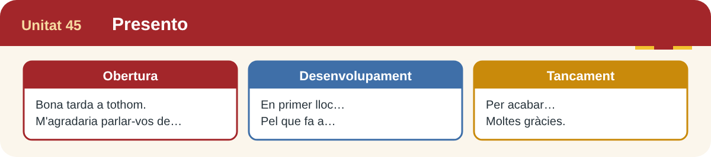
Setembre. A la Setmana del Llibre en Català, la Marta presenta la nova col·lecció juvenil davant de llibreters, professors i periodistes.
«Bona tarda a tothom i moltes gràcies per ser aquí.
Em dic Marta Ruiz i coordino la col·lecció «Fanal Jove» d'Edicions del Fanal. Avui m'agradaria parlar-vos de tres coses: per què hem creat aquesta col·lecció, què hi trobareu i com volem arribar als lectors joves.
En primer lloc, la col·lecció neix d'una constatació: els adolescents llegeixen, però no sempre el que els proposem. Per això hem volgut escoltar-los abans de publicar.
En segon lloc, pel que fa als títols, publicarem sis novel·les l'any, la primera de les quals és Tres germanes, de la Laura Prat. Totes tenen protagonistes joves, i en totes la llengua és rica però propera.
Finalment, volem que els llibres surtin de l'aula: farem clubs de lectura en línia i trobades amb els autors a les biblioteques.
Per acabar, voldria dir-vos una cosa personal. Fa tres anys vaig arribar a Barcelona sense saber gairebé ni una paraula de català. Avui us puc presentar aquesta col·lecció en català, i això ho dec a molta gent que, quan jo m'equivocava, em va continuar parlant en la seva llengua. Moltes gràcies. Si teniu preguntes, hi respondré amb molt de gust.»
| Català | Castellà |
|---|---|
| la Setmana del Llibre en Català | feria anual del libro en catalán |
| el llibreter, la llibretera | el librero, la librera |
| coordinar | coordinar |
| néixer de | nacer de |
| la constatació | la constatación |
| proper, propera | cercano/a |
| l'aula (f.) | el aula |
| el club de lectura | el club de lectura |
| la trobada | el encuentro |
| deure (ho dec a…) | deber (se lo debo a…) |
| amb molt de gust | con mucho gusto |
| el torn de preguntes | el turno de preguntas |
| la intervenció | la intervención |
| agrair | agradecer |
| permetre | permitir |
1. Fórmules per a presentacions
| Moment | Fórmules |
|---|---|
| obertura | Bona tarda a tothom. Gràcies per ser aquí. M'agradaria parlar-vos de… |
| ordre | En primer lloc… En segon lloc… Finalment… |
| canvi de tema | Pel que fa a… Quant a… Passem ara a… |
| èmfasi | Voldria subratllar que… El més important és… |
| tancament | Per acabar… En definitiva… Moltes gràcies per l'atenció. |
| preguntes | Si teniu preguntes, hi respondré amb molt de gust. Bona pregunta… |
2. Repàs del C1
| Tema | Exemple |
|---|---|
| concessives | Tot i que ha plogut, encara hi ha sequera. |
| construcció absoluta | Acabada la reunió, vam marxar. |
| relatius complexos | la primera de les quals; la qual cosa |
| fraseologia | Déu n'hi do! Estic feta pols. |
| cohesió | aquesta divergència, totes dues estratègies |
| fonètica sintàctica | els amics [z] |
Parlar i escriure. Una presentació oral no és un text escrit llegit en veu alta: les frases han de ser més curtes, cal repetir les idees clau i anunciar l'estructura («parlaré de tres coses»). En canvi, en un informe escrit, la repetició sobra i l'estructura es veu amb els títols.
1. Ordena les parts d'una presentació: conclusió, salutació, idees, torn de preguntes, presentació del tema.
2. Repàs: completa.
a) que plou, sortirem. b) La sala es fa l'acte és petita. c) Va arribar tard, em va molestar. d) la reunió, vam anar a dinar.
3. Prepara una presentació de cinc minuts sobre un projecte teu.
1. salutació, presentació del tema, idees, conclusió, torn de preguntes. 2. a) Tot i que (o Malgrat que) b) en què / on c) la qual cosa d) Acabada. 3. Resposta lliure.
Al final d'aquest nivell sabràs llegir i escriure en el registre més formal, entendre textos jurídics, comentar la literatura contemporània, jugar amb el català col·loquial i la ironia, i fer servir la llengua amb la precisió d'un parlant culte.
Objectius: entenc i escric textos en registre molt formal, llegeixo prosa històrica. Llengua: el passat simple (cantà, fou, feu), les formes del registre molt formal (llur, àdhuc, car, ensems, hom, ésser).
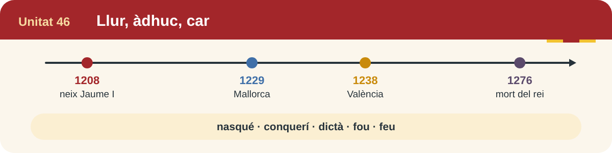
La col·lecció de clàssics de l'editorial publicarà una edició adaptada de les quatre grans cròniques. La Marta revisa la introducció, escrita per un historiador en un registre molt formal.
«Les quatre grans cròniques —la de Jaume I, la de Bernat Desclot, la de Ramon Muntaner i la de Pere el Cerimoniós— constitueixen el conjunt historiogràfic més notable de l'Europa medieval en llengua vulgar. Llurs autors no foren simples cronistes, car hi abocaren ensems la memòria personal i la voluntat de llegar a la posteritat una imatge gloriosa del casal de Barcelona.
Jaume I nasqué a Montpeller el 1208. Conquerí Mallorca el 1229 i València el 1238, i en els darrers anys de la seva vida dictà el Llibre dels fets, en què narra en primera persona les seves gestes. Hom hi troba, àdhuc, episodis íntims i plens d'humor, insòlits en un rei.
Ramon Muntaner, per la seva banda, participà en l'expedició dels almogàvers a l'Orient i ho explicà amb una vivacitat que el feu el més llegit dels quatre.»
| Català | Castellà |
|---|---|
| la crònica / el cronista | la crónica / el cronista |
| historiogràfic, historiogràfica | historiográfico/a |
| la llengua vulgar | la lengua romance |
| llur, llurs | su, sus (de ellos) |
| car | pues, porque (muy formal) |
| abocar | volcar, verter |
| ensems | a la vez, juntamente |
| llegar | legar |
| la posteritat | la posteridad |
| el casal de Barcelona | la casa (dinastía) de Barcelona |
| dictar | dictar |
| la gesta | la gesta, la hazaña |
| hom | uno, se (impersonal) |
| àdhuc | incluso, hasta |
| insòlit, insòlita | insólito/a |
| l'almogàver (m.) | el almogávar |
| la vivacitat | la vivacidad |
| per la seva banda | por su parte |
1. El passat simple
És el passat de la literatura i de la història. A l'oral i als textos corrents es fa servir el perifràstic (va néixer).
| parlar | perdre | dormir / llegir | |
|---|---|---|---|
| jo | parlí | perdí | dormí |
| tu | parlares | perderes | dormires |
| ell, ella | parlà | perdé | dormí |
| nosaltres | parlàrem | perdérem | dormírem |
| vosaltres | parlàreu | perdéreu | dormíreu |
| ells, elles | parlaren | perderen | dormiren |
Irregulars freqüents (3a persona): ser → fou, foren · fer → feu, feren · tenir → tingué · néixer → nasqué · dir → digué · venir → vingué · conquerir → conquerí.
2. El lèxic del registre molt formal
| Molt formal | Neutre |
|---|---|
| llur, llurs | el seu, la seva… (d'ells) |
| car | perquè |
| àdhuc | fins i tot |
| ensems | alhora, junts |
| hom | la gent, es (impersonal) |
| ésser | ser |
| mant, manta | molt, molta (diversos) |
| tanmateix | però, no obstant això |
| per tal de | per a |
3. Llur
Llur fa referència a un posseïdor plural: els autors i llurs obres (= les obres dels autors). És exclusiu del registre formal; a la llengua corrent: les seves obres.
Saber triar. Aquestes formes són correctes, però fora d'un text molt formal resulten arcaiques o pedants. A la conversa, ningú diu car ni àdhuc. El bon escriptor ajusta el registre al lector: un text administratiu no és una crònica medieval, i una carta a un amic no és un text administratiu.
1. Passa al perifràstic: a) Jaume I nasqué a Montpeller. b) Conquerí Mallorca. c) Els almogàvers anaren a l'Orient. d) Fou rei durant seixanta-tres anys.
2. Passa a registre neutre: a) Llurs obres foren molt llegides. b) Hom creu que és cert. c) Àdhuc el rei hi assistí. d) No hi anà, car plovia.
3. Escriu un paràgraf biogràfic d'un personatge històric en registre molt formal, amb passat simple.
1. a) Jaume I va néixer a Montpeller. b) Va conquerir Mallorca. c) Els almogàvers van anar a l'Orient. d) Va ser rei durant seixanta-tres anys. 2. a) Les seves obres van ser molt llegides. b) La gent creu que és cert. c) Fins i tot el rei hi va assistir. d) No hi va anar, perquè plovia. 3. Resposta lliure.
Objectius: entenc i redacto textos jurídics i contractuals, faig servir la terminologia especialitzada. Llengua: les característiques del llenguatge jurídic, les fórmules contractuals, errors freqüents.
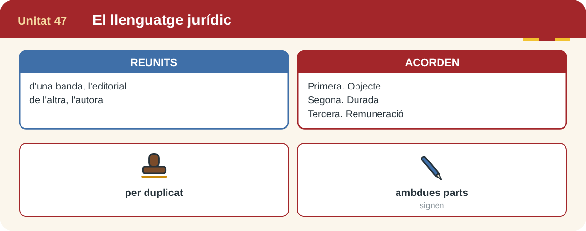
La Marta prepara el contracte d'edició de la segona novel·la de la Laura Prat. Aquests són alguns fragments de l'esborrany.
CONTRACTE D'EDICIÓ
Barcelona, 3 de març de 2028
REUNITS
D'una banda, la senyora Montserrat Vilaró i Puig, en nom i representació d'Edicions del Fanal, SL (en endavant, «l'editorial»).
De l'altra, la senyora Laura Prat i Soler (en endavant, «l'autora»).
Ambdues parts es reconeixen mútuament la capacitat legal necessària per atorgar aquest contracte, i
ACORDEN
Primera. Objecte. L'autora cedeix a l'editorial, en exclusiva, els drets de reproducció i distribució de l'obra titulada provisionalment La casa del riu (en endavant, «l'obra»), en llengua catalana i en qualsevol format.
Segona. Durada. La cessió es fa per un termini de deu anys a comptar de la data de signatura d'aquest contracte.
Tercera. Remuneració. L'editorial abonarà a l'autora el deu per cent del preu de venda al públic, sense impostos, de cada exemplar venut.
Quarta. Resolució. L'incompliment de qualsevol de les obligacions establertes en aquest contracte facultarà la part afectada per resoldre'l, sens perjudici de les indemnitzacions que escaiguin.
I, en prova de conformitat, ambdues parts signen aquest contracte per duplicat en el lloc i la data esmentats a l'encapçalament.
| Català | Castellà |
|---|---|
| el contracte d'edició | el contrato de edición |
| l'esborrany (m.) | el borrador |
| reunits / acorden | reunidos / acuerdan |
| en nom i representació de | en nombre y representación de |
| en endavant | en adelante |
| ambdues parts | ambas partes |
| atorgar | otorgar |
| cedir / la cessió | ceder / la cesión |
| en exclusiva | en exclusiva |
| els drets de reproducció | los derechos de reproducción |
| a comptar de | a contar desde |
| abonar | abonar, pagar |
| el preu de venda al públic (PVP) | el precio de venta al público |
| l'exemplar (m.) | el ejemplar |
| l'incompliment (m.) | el incumplimiento |
| facultar | facultar |
| resoldre (un contracte) | resolver, rescindir |
| sens perjudici de | sin perjuicio de |
| escaure | corresponder, proceder |
| en prova de conformitat | en prueba de conformidad |
| per duplicat | por duplicado |
| l'encapçalament (m.) | el encabezamiento |
1. Les característiques del llenguatge jurídic
| Tret | Exemple |
|---|---|
| precisió terminològica (es repeteix el terme) | l'obra… l'obra… l'obra |
| definicions | (en endavant, «l'autora») |
| futur d'obligació | L'editorial abonarà… |
| nominalització | l'incompliment de les obligacions |
| estructura fixa | REUNITS · ACORDEN · clàusules · signatura |
2. Errors freqüents dels textos jurídics
| ✗ | ✓ |
|---|---|
| el present contracte | aquest contracte |
| de conformitat a | de conformitat amb |
| en base a | d'acord amb, segons |
| Va signar, aprovant-se després… (gerundi de posterioritat) | Va signar i després s'aprovà… |
| ambos | ambdós / ambdues |
3. Els numerals ordinals de les clàusules
Primera, segona, tercera, quarta, cinquena, sisena, setena, vuitena, novena, desena.
El llenguatge administratiu modern. Avui es recomana un llenguatge jurídic clar: frases més curtes, ordre lògic (subjecte, verb, complements) i menys fórmules buides. El present (com a demostratiu) és un calc: es prefereix aquest. El gerundi només pot indicar una acció simultània o anterior, mai posterior.
1. Corregeix: a) El present document. b) De conformitat a la llei. c) Va dimitir, sent substituït l'endemà. d) Ambos parts signen.
2. Redacta la clàusula Cinquena. Traduccions d'aquest contracte.
3. Simplifica: Es procedirà a efectuar el pagament de la factura dins del termini dels trenta dies següents a la recepció d'aquesta.
1. a) Aquest document. b) De conformitat amb la llei. c) Va dimitir i l'endemà el van substituir. d) Ambdues parts signen. 2. Resposta lliure. 3. Pagarem la factura en un termini de trenta dies des que la rebem.
Objectius: conec els grans autors catalans del segle XX i d'avui, comento el seu estil. Llengua: el vocabulari de la crítica literària, el resum i la paràfrasi.
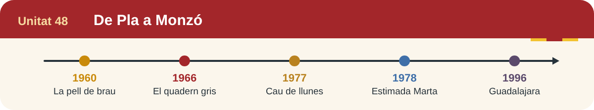
Per a la Setmana del Llibre, la Marta escriu una breu guia «Sis veus del segle XX». Com que els autors encara tenen drets d'autor, la guia no en reprodueix fragments: els resumeix i els comenta.
Josep Pla (Palafrugell, 1897 – Llofriu, 1981), el gran prosista del segle. A El quadern gris (1966), un dietari dels anys 1918 i 1919, converteix la vida quotidiana d'un estudiant de l'Empordà en literatura, amb una prosa precisa, irònica i plena d'adjectius exactes.
Salvador Espriu (Santa Coloma de Farners, 1913 – Barcelona, 1985) va reflexionar sobre la mort i sobre el país després de la guerra. A La pell de brau (1960) parla de Sepharad, una imatge d'Espanya, amb un to que demana convivència i diàleg.
Pere Calders (Barcelona, 1912 – 1994) va escriure, en bona part des de l'exili a Mèxic, contes en què l'absurd entra a la vida corrent amb tota naturalitat. Cròniques de la veritat oculta (1955) n'és un bon exemple.
Miquel Martí i Pol (Roda de Ter, 1929 – Vic, 2003) va passar de la poesia social de la fàbrica a una poesia íntima, marcada per la malaltia i el dol, amb llibres com Estimada Marta (1978) o Llibre d'absències (1985). És un dels poetes més llegits en català.
Maria Mercè Marçal (Barcelona, 1952 – 1998) va unir la consciència feminista, la nacional i la de classe en una poesia d'una gran força formal, des de Cau de llunes (1977).
Quim Monzó (Barcelona, 1952) és el gran contista de la ironia urbana. Els relats de Guadalajara (1996) o Mil cretins (2007) desmunten els tòpics de la vida moderna amb un humor implacable.
| Català | Castellà |
|---|---|
| el prosista | el prosista |
| el dietari | el dietario |
| quotidià, quotidiana | cotidiano/a |
| irònic, irònica | irónico/a |
| reflexionar sobre | reflexionar sobre |
| la convivència | la convivencia |
| l'exili (m.) | el exilio |
| el conte / el contista | el cuento / el cuentista |
| l'absurd (m.) | el absurdo |
| amb tota naturalitat | con toda naturalidad |
| la poesia social / íntima | la poesía social / íntima |
| la consciència | la conciencia |
| la força formal | la fuerza formal |
| el relat | el relato |
| desmuntar | desmontar |
| el tòpic | el tópico |
| implacable | implacable |
| la paràfrasi | la paráfrasis |
| els drets d'autor | los derechos de autor |
1. El vocabulari de la crítica
| Per descriure l'estil | Per valorar |
|---|---|
| una prosa precisa, sòbria, exuberant | una obra cabdal, imprescindible |
| un to irònic, elegíac, sarcàstic | un llibre reeixit / fallit |
| una veu íntima, col·loquial | un autor prolífic, influent |
Reeixit = logrado; cabdal = capital, fundamental.
2. Parafrasejar en lloc de citar
Quan una obra té drets d'autor, el millor és explicar-la amb les teves paraules:
A El quadern gris, Pla converteix la vida quotidiana en literatura (paràfrasi), en lloc de copiar-ne un fragment llarg.
3. Els dies i els llocs de naixement i de mort
(Palafrugell, 1897 – Llofriu, 1981): lloc i any de naixement, guió llarg o semi, lloc i any de mort.
El present històric. En les ressenyes i els comentaris literaris, el català fa servir sovint el present per parlar d'una obra: Pla converteix…, Rodoreda fa servir… El passat es reserva per a la biografia: Calders va escriure des de l'exili.
1. Relaciona: a) Pla b) Espriu c) Calders d) Martí i Pol e) Marçal f) Monzó — 1) Guadalajara 2) La pell de brau 3) El quadern gris 4) Estimada Marta 5) Cau de llunes 6) Cròniques de la veritat oculta
2. Substitueix per un adjectiu de crítica: a) una novel·la que ha sortit molt bé b) un llibre fonamental c) un autor que escriu molt
3. Escriu una ressenya (200 paraules) d'un llibre que hagis llegit, en present.
1. a-3, b-2, c-6, d-4, e-5, f-1. 2. a) una novel·la reeixida b) un llibre cabdal c) un autor prolífic. 3. Resposta lliure.
Objectius: entenc el català col·loquial, l'argot i la ironia; adapto el registre. Llengua: els marcadors col·loquials, la ironia, els registres juvenils.
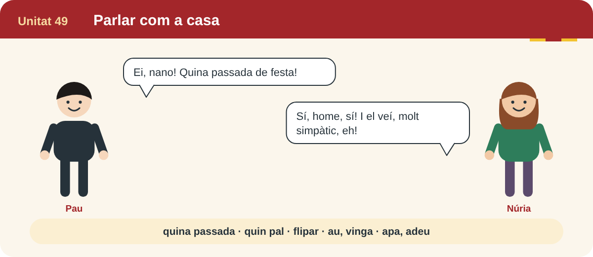
Festa d'aniversari de la Núria al pis. Hi ha molta gent i molt de soroll.
Pau: Ei, nano! Quina passada de festa!
Jordi: Oi que sí? La Núria s'hi ha deixat la pell.
Marta: I el pastís, l'heu vist? Està boníssim.
Núria: Sí, home, sí! Boníssim… si t'agrada el sucre cremat!
Marta: Va, no siguis així. A mi m'ha flipat.
Pau: Escolta, i el veí? No s'ha queixat del soroll?
Jordi: Ja ho tens: ha picat a la porta fa deu minuts. Molt simpàtic, eh! Ha dit que si no abaixàvem la música trucaria a la Guàrdia Urbana.
Núria: Ostres, quin pal…
Pau: Au, vinga, que són les dotze. Abaixem una mica i aquí no ha passat res.
Álvaro: Jo me'n vaig, que demà tinc guàrdia. Gràcies per tot, Núria, ha estat genial!
Núria: Gràcies a tu per venir, guapo! Apa, adeu!
| Expressió | Significat |
|---|---|
| ei! | ¡eh!, ¡hola! |
| nano, nana | tío, tía (vocativo coloquial) |
| quina passada! | ¡qué pasada! |
| oi que sí? | ¿a que sí? |
| deixar-s'hi la pell | dejarse la piel |
| sí, home, sí! | ¡sí, hombre, sí! (ironía) |
| flipar | flipar, alucinar |
| ja ho tens | ya está, ahí lo tienes |
| molt simpàtic, eh! | (ironía) ¡qué simpático! |
| picar a la porta | llamar a la puerta |
| quin pal! | ¡qué rollo, qué pereza! |
| au, vinga! | ¡venga, va! |
| aquí no ha passat res | aquí no ha pasado nada |
| apa, adeu! | ¡venga, adiós! |
| guai | guay |
| estar penjat, penjada (de) | estar colgado/a (de) |
| ni de conya | ni de broma |
| fer un riure | echarse unas risas |
1. Els marcadors col·loquials
| Marcador | Funció | Exemple |
|---|---|---|
| ei, escolta, mira | cridar l'atenció | Escolta, i el veí? |
| oi que sí?, eh? | buscar acord | Bona festa, oi que sí? |
| va, au, apa | animar, tancar | Au, vinga! Apa, adeu! |
| home, dona | objectar, suavitzar | Home, no t'enfadis. |
| doncs, total | resumir | Total, que no va venir. |
2. La ironia
La ironia diu el contrari del que pensa. Es reconeix per l'entonació i pel context:
Molt simpàtic, eh! (= antipàtic) · Sí, home, sí! (= no m'ho crec) · Ara sí que l'hem feta bona! (= hem fet un desastre).
3. Col·loquial, però correcte?
| Col·loquial acceptable | Castellanisme que cal evitar |
|---|---|
| quina passada, flipar, guai | ✗ mola → m'agrada, està bé |
| nano / nana | ✗ tio, tia (com a vocatiu) → nano, noi |
| fer un riure | ✗ vale → d'acord |
| quin pal! | ✗ bueno → bé |
L'escala dels registres. Una mateixa idea, en quatre registres:
Ha estat una passada! (col·loquial) → Ha estat genial (informal) → Ha estat molt reeixit (formal) → L'acte ha assolit plenament els seus objectius (administratiu).
1. Què vol dir, de debò? a) Molt simpàtic, eh! b) Sí, home, sí! c) Ara sí que l'hem feta bona!
2. Substitueix els castellanismes: a) Mola molt. b) Tio, vale! c) Bueno, ja veurem.
3. Escriu la mateixa notícia en registre col·loquial i en registre formal.
1. a) que és antipàtic b) que no s'ho creu c) que han fet un desastre. 2. a) M'agrada molt / Està molt bé. b) Nano, d'acord! c) Bé, ja veurem. 3. Resposta lliure.
Objectius: repasso els errors més freqüents dels hispanoparlants, conec el certificat de nivell superior, tanco el curs. Llengua: síntesi del curs.
Juny. La Marta acaba de fer l'examen de nivell superior. Al forn, el senyor Esteve li dona les notes en un sobre que ha arribat a casa seva per error.
Esteve: Marta! Això és teu: ha arribat a la meva bústia. Diu «Departament de Política Lingüística».
Marta: Les notes del C2! Obri-ho vostè, que jo no puc…
Esteve: Jo? Ni parlar-ne! Té, maca.
Marta: (Obre el sobre.) Apte! He aprovat el nivell superior!
Esteve: Ja ho sabia jo! Recordes el primer dia, quan vas entrar aquí i vas dir «Hola, vull un pa»?
Marta: I vostè em va contestar en català, i jo no vaig entendre res!
Esteve: Doncs ara parles millor que el meu net! Què faràs ara?
Marta: Em quedo aquí. Aquest és el meu barri, i aquesta és la meva llengua, també.
Esteve: Té, una coca per celebrar-ho. I digues a la teva àvia que aquí la tenim com a casa quan vulgui venir.
| Català | Castellà |
|---|---|
| la bústia | el buzón |
| el sobre | el sobre |
| apte / no apte | apto / no apto |
| ni parlar-ne! | ¡ni hablar! |
| contestar | contestar |
| celebrar | celebrar |
| el certificat de nivell superior | el certificado de nivel superior (C2) |
| acreditar | acreditar |
| el requisit | el requisito |
| la funció pública | la función pública |
| el mèrit | el mérito |
| la convocatòria | la convocatoria |
| com a casa | como en casa |
1. Els deu errors més freqüents dels hispanoparlants (i la solució)
| ✗ Error | ✓ Correcte | Unitat | |
|---|---|---|---|
| 1 | Tens pa? —Sí, tinc. | Sí, en tinc. | 6, 16 |
| 2 | Vas a classe? —Sí, vaig. | Sí, hi vaig. | 16 |
| 3 | Tinc que anar-hi. | He d'anar-hi. | 13 |
| 4 | Vaig a menjar (futur) | Menjaré / Ara menjo | 8, 9 |
| 5 | Lo que dius | El que dius | 22 |
| 6 | Estic segura de que… | Estic segura que… | 33 |
| 7 | Al arribar… | En arribar… | 33 |
| 8 | Les dono un llibre (a ells) | Els dono un llibre | 15 |
| 9 | casa amb [a] final, els amics amb [s] | vocal neutra, elzamics | 1, 44 |
| 10 | dóna, sóc, adéu | dona, soc, adeu (ortografia del 2016) | 1 |
2. El certificat de nivell superior (C2)
Acredita un domini complet de la llengua. Inclou comprensió lectora i expressió escrita (transformació de textos, síntesi i text argumentatiu), ús de la llengua i expressió oral (un monòleg). A Catalunya, el C1 és el requisit general per a la funció pública, i el C2 ho és, per exemple, per a la docència. Comprova sempre els requisits i les dates de cada convocatòria a la web oficial.
3. I ara, què?
Llegeix (premsa, novel·la, poesia) · escolta (ràdio, pòdcasts) · mira (televisió, cinema) · parla (no canviïs de llengua!) · escriu (un diari, missatges, ressenyes).
El català com a casa. Al llarg d'aquest llibre has après que el català té registres, dialectes i una història llarga. Però sobretot has après que és una llengua viva, de carrer, de mercat, de castells i de forn de barri. Aprendre-la és, també, una manera d'entrar a casa dels qui la parlen.
1. Corregeix les deu frases: a) Tens germans? —Sí, tinc dos. b) Vas a Girona? —Sí, vaig demà. c) Tinc que treballar. d) Lo que vull és dormir. e) Estic convençut de que vindrà. f) Al sortir, tanca. g) Les explico la lliçó (a ells). h) Sóc de Màlaga. i) Adéu! j) Vaig a sopar a les nou (futur).
2. Escriu una carta a la Marta explicant-li com has après català.
3. Fes un monòleg de cinc minuts: «La llengua que he après».
1. a) Sí, en tinc dos. b) Sí, hi vaig demà. c) He de treballar. d) El que vull és dormir. e) Estic convençut que vindrà. f) En sortir, tanca. g) Els explico la lliçó. h) Soc de Màlaga. i) Adeu! j) Soparé a les nou / Sopo a les nou. 2. i 3. Resposta lliure.
| parlar (1a) | perdre (2a) | dormir (3a pura) | servir (3a incoativa) | |
|---|---|---|---|---|
| Present | parlo, parles, parla, parlem, parleu, parlen | perdo, perds, perd, perdem, perdeu, perden | dormo, dorms, dorm, dormim, dormiu, dormen | serveixo, serveixes, serveix, servim, serviu, serveixen |
| Imperfet | parlava, parlaves, parlava, parlàvem, parlàveu, parlaven | perdia, perdies, perdia, perdíem, perdíeu, perdien | dormia, dormies… | servia, servies… |
| Passat perifràstic | vaig parlar, vas parlar, va parlar, vam parlar, vau parlar, van parlar | vaig perdre… | vaig dormir… | vaig servir… |
| Passat simple | parlí, parlares, parlà, parlàrem, parlàreu, parlaren | perdí, perderes, perdé, perdérem, perdéreu, perderen | dormí, dormires, dormí, dormírem, dormíreu, dormiren | serví, servires, serví… |
| Futur | parlaré, parlaràs, parlarà, parlarem, parlareu, parlaran | perdré, perdràs… | dormiré, dormiràs… | serviré, serviràs… |
| Condicional | parlaria, parlaries, parlaria, parlaríem, parlaríeu, parlarien | perdria… | dormiria… | serviria… |
| Present de subjuntiu | parli, parlis, parli, parlem, parleu, parlin | perdi, perdis… | dormi, dormis… | serveixi, serveixis, serveixi, servim, serviu, serveixin |
| Imperfet de subjuntiu | parlés, parlessis, parlés, parléssim, parléssiu, parlessin | perdés, perdessis… | dormís, dormissis… | servís, servissis… |
| Imperatiu | parla, parli, parlem, parleu, parlin | perd, perdi, perdem, perdeu, perdin | dorm, dormi, dormim, dormiu, dormin | serveix, serveixi, servim, serviu, serveixin |
| Gerundi / participi | parlant / parlat | perdent / perdut | dormint / dormit | servint / servit |
Temps compostos: perfet (he parlat), plusquamperfet (havia parlat), futur perfet (hauré parlat), condicional perfet (hauria parlat), plusquamperfet de subjuntiu (hagués parlat).
| Infinitiu | Gerundi | Participi | Present (jo, tu, ell) | Pres. subj. | Imperfet | Futur | Imperf. subj. | Imperatiu (tu, vostè) |
|---|---|---|---|---|---|---|---|---|
| ser | sent | estat | soc, ets, és | sigui | era | seré | fos | sigues, sigui |
| estar | estant | estat | estic, estàs, està | estigui | estava | estaré | estigués | estigues, estigui |
| haver | havent | hagut | he, has, ha | hagi | havia | hauré | hagués | — |
| tenir | tenint | tingut | tinc, tens, té | tingui | tenia | tindré | tingués | tingues, tingui |
| fer | fent | fet | faig, fas, fa | faci | feia | faré | fes | fes, faci |
| anar | anant | anat | vaig, vas, va | vagi | anava | aniré | anés | vés, vagi |
| venir | venint | vingut | vinc, vens, ve | vingui | venia | vindré | vingués | vine, vingui |
| dir | dient | dit | dic, dius, diu | digui | deia | diré | digués | digues, digui |
| poder | podent | pogut | puc, pots, pot | pugui | podia | podré | pogués | — |
| voler | volent | volgut | vull, vols, vol | vulgui | volia | voldré | volgués | vulgues, vulgui |
| saber | sabent | sabut | sé, saps, sap | sàpiga | sabia | sabré | sabés | sàpigues, sàpiga |
| veure | veient | vist | veig, veus, veu | vegi | veia | veuré | veiés | veges, vegi |
| prendre | prenent | pres | prenc, prens, pren | prengui | prenia | prendré | prengués | pren, prengui |
| viure | vivint | viscut | visc, vius, viu | visqui | vivia | viuré | visqués | viu, visqui |
| conèixer | coneixent | conegut | conec, coneixes, coneix | conegui | coneixia | coneixeré | conegués | coneix, conegui |
| escriure | escrivint | escrit | escric, escrius, escriu | escrigui | escrivia | escriuré | escrigués | escriu, escrigui |
| beure | bevent | begut | bec, beus, beu | begui | bevia | beuré | begués | beu, begui |
| obrir | obrint | obert | obro, obres, obre | obri | obria | obriré | obrís | obre, obri |
| seure | seient | segut | sec, seus, seu | segui | seia | seuré | segués | seu, segui |
| caure | caient | caigut | caic, caus, cau | caigui | queia | cauré | caigués | cau, caigui |
| Davant del verb | Davant de vocal | Darrere (consonant) | Darrere (vocal) | |
|---|---|---|---|---|
| jo | em | m' | -me | 'm |
| tu | et | t' | -te | 't |
| ell, ella, vostè (reflexiu) | es | s' | -se | 's |
| nosaltres | ens | ens | -nos | 'ns |
| vosaltres | us | us | -vos | -us |
| CD masc. sing. | el | l' | -lo | 'l |
| CD fem. sing. | la | l' (no davant i, u àtones) | -la | -la |
| CD masc. pl. | els | els | -los | 'ls |
| CD fem. pl. | les | les | -les | -les |
| CI sing. | li | li | -li | -li |
| CI pl. | els | els | -los | 'ls |
| neutre | ho | ho | -ho | -ho |
| en | en | n' | -ne | 'n |
| hi | hi | hi | -hi | -hi |
Combinacions freqüents: me'l, te la, se'ls, m'ho, t'ho, li ho, l'hi, la hi, li'n, me'n, te'n, se'n, ens en, us en, n'hi.
| 1r primer, 1a primera | 2n segon, 2a segona | 3r tercer, 3a tercera | 4t quart, 4a quarta |
| 5è cinquè | 6è sisè | 7è setè | 8è vuitè |
| 9è novè | 10è desè | 11è onzè | 20è vintè |
| Tipus de paraula | Porten accent… | Exemples |
|---|---|---|
| agudes | si acaben en vocal, -as, -es, -is, -os, -us, -en, -in | cafè, francès, camí, cançó, també, entén |
| planes | si no acaben així | difícil, telèfon, préssec, àlbum |
| esdrúixoles | sempre | música, època, pàgina |
Els quinze diacrítics (OIEC 2016): bé, déu, és, mà, més, món, pèl, què, sé, sí, sòl, són, té, ús, vós.
| Català | Vol dir | No confondre amb |
|---|---|---|
| acostar-se | acercarse | acostarse (anar a dormir) |
| apressar | capturar | apresurar (afanyar-se) |
| bolet | seta | boleto (bitllet) |
| bordar | ladrar | bordar (brodar) |
| brut | sucio | bruto |
| cama | pierna | cama (llit) |
| constipat | resfriado | estreñido (restret) |
| descuidar-se | olvidarse | descuidarse (badar) |
| embarassada | embarazada | avergonzada (avergonyida) |
| espatlla | hombro | espalda (esquena) |
| llevar-se | levantarse | llevarse (emportar-se) |
| lliurar | entregar | librar (alliberar) |
| manxa | fuelle | mancha (taca) |
| marxar | irse | marchar (desfilar) |
| pegar | golpear | pegar (enganxar) |
| pujar | subir | pujar en subasta (licitar) |
| rentar | lavar | rentar (rendir) |
| tasca | tarea | tasca (taverna) |
| tenda | tienda de campaña | tienda (botiga) |
| ✗ | ✓ | ✗ | ✓ | |
|---|---|---|---|---|
| tenir que | haver de | lo que | el que, allò que | |
| bueno | bé, doncs | vale | d'acord | |
| pues | doncs | entonces | llavors, aleshores | |
| jefe | cap | despedir | acomiadar | |
| disfrutar | gaudir | donar-se compte | adonar-se | |
| en base a | segons, a partir de | de que (+ oració) | que | |
| al + infinitiu | en + infinitiu | desde | des de | |
| aconteixement | esdeveniment | gastos | despeses | |
| rato | estona | basura | escombraries, brossa | |
| acera | vorera | xiste | acudit | |
| enxufe | endoll | bocata | entrepà |